FOREWORD
When I first thought of writing about my teenage years I worked with the title ‘The Difficult Years’. I have always thought of those years as ‘difficult’ and in many ways they were. But as I proceeded I realised that during my teen years I had many good times and many great friends to see me through. In the ten year span from the death of my father to the death of my mother my life had many uncertainties. Underlying this account is the memory of my mother and the at times difficult relationship I had with her, something I never understood and could never come to terms with. I still can’t. A sub title for this account might well be...
1945
Junior was ten years and six months old when on the nineteenth of January 1945 his father was killed riding his department motor cycle along the winding bush track known as the Mungalup Road returning to Collie from the Mungalup forest lookout tower. In attempting to pass a utility truck either parked or travelling slowly, his motor cycle sidecar caught the side of the truck and he was thrown from the motor cycle onto the track verge. Apparently unhurt he picked himself up and spoke to the truck driver, Mr Clem Spencer, who had been delivering items to some of the small properties fronting the track. The truck driver, quite well known in Collie, later said that Mr Skitch had asked him to help find his wallet that had dropped from his pocket in the fall. Together they searched the skid marks then transferred the contents of the motor cycle’s wooden box sidecar to the back of the truck. The damaged motor cycle and sidecar were left at the track side. Mr Spencer said that at that point Mr Skitch confessed to feeling faint and suddenly collapsed on the track. Junior does not know whether the truck driver brought his father back to Collie, presumably to the Collie hospital, however, he was dead on arrival and he understood that he had actually passed away at the scene of the accident. Junior learned later that the fall had ruptured his spleen and liver. The autopsy said he had an enlarged spleen. Junior’s father was thirty nine years old. The Mungalup track was well known to Junior. He and Geoff Fogarty had often ridden their bikes to the fire look-out tower. The tower was not huge, perhaps thirty feet in height and constructed of timber with a small hut on top. It was manned by a very friendly lady during the later war years. She would invite them to climb the tower and show them her maps on top of the table at the tower top and her compass with which she took bearings to a suspected fire. There was another direction device fixed the centre of the table. Junior found all this quite fascinating. Junior was also very familiar with his father’s motor bike having travelled in the wooden box sidecar with his father on some of his bush runs, sometimes with Mum as well.1
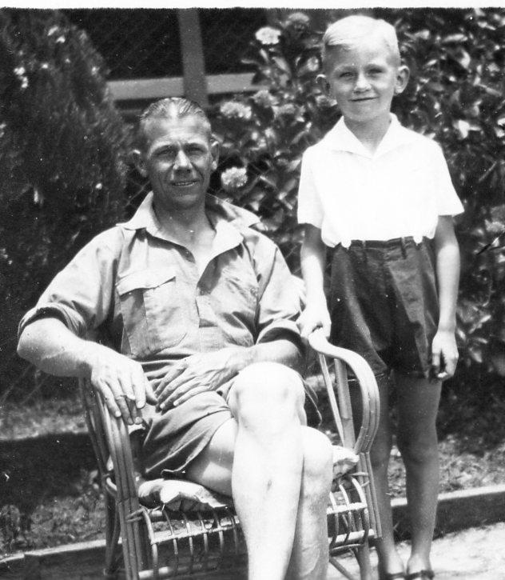
Leaving Collie
At ten and a half years I left Collie behind with a heavy heart. I could not come to terms with my father’s death. I could not come to terms with all the things I valued being left behind. Leaving behind my cobbers and my beautiful Kelpie dog Pix was a further heartbreak. In retrospect I believe it would have been easier had Mum and I been able to remain in our home for a week or two; had my father’s funeral been at the old Collie cemetery around which I had wandered looking at graves so many times. But no – it seemed to be a matter of urgency that we should go to Perth and did so two or three days later in the company of Aunty Jessie and Uncle Bert Bell who had come to Collie to be with Mum. There was an inquest held in the Collie Court House a couple of days later which rightly cleared the truck driver of any blame and my father’s body was legally released to be transported to Perth under the supervision of a Collie Undertaker. I became aware some years later that there was considerable cost in this. So we boarded the train for Perth, Mum, Aunty Jessie, Uncle Bert and me, to be met at the Perth suburb Carlisle after an arduous day, a journey I had done many times before under happier circumstances, by Grandad and Uncle Lennie. Throughout the day long trip, from Collie to Brunswick Junction and then on the Perth ‘express’ Uncle Bert tried to keep me amused with little stories and jokes – one I remember concerned the Tower of London, the ‘bloody tower’. It seemed funny at the time. Somewhere along the way I asked if Dad was travelling in the guard’s van and that seemed to distress Mum and Aunty Jessie responded with simply ‘no Junior’ in a voice that implied I should not have asked. Somehow in my grandparent’s little house in Bishopgate Street we were put up, Mum and me in Grandma’s double bed, Grandma in the second bed in Grandad’s room and Uncle Lennie out the back in an old bed in the wash house. Uncle Bert and Aunty Jessie returned to their home in Ventnor Street, Subiaco, perhaps they remained on the train to Perth Central. I had one or two nights up the road with the Dodds who also were living in Bishopgate Street, bunking in with cousins Ken and Glen. It was my second stay with grandparents in as many weeks. Mum and I had had our annual Christmas visit recently, returning to Collie only two weeks previous.
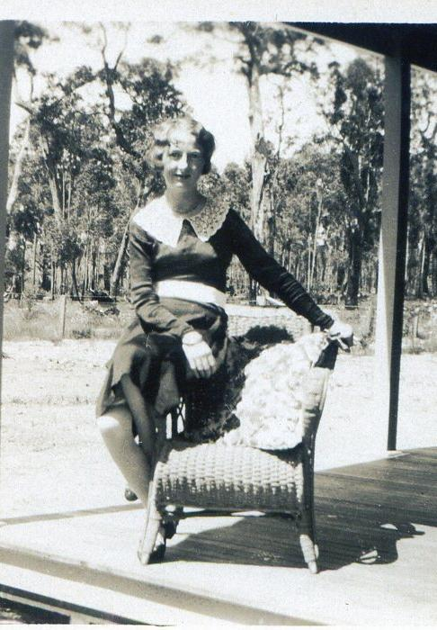
My father’s funeral
It was thought better that I not attend my father’s funeral. I am not sure why and in retrospect I cannot recall whether I wanted to or not. I simply accepted that I was not going and I recall playing with the Dodd children in the Dodd’s backyard on the morning of the funeral. At one point I pulled out of playing and buried my head in my arms against a chair. I heard one of the kids ask ‘what’s wrong with him?’ My cousin Ken replied not unkindly ‘his dad is dead; he’s being buried this morning’ That quietened the play for a while but it soon resumed. As far as I am aware all of Mum’s Perth based relatives attended, brothers, sisters, Grandad but not Grandma. Dad had a Skitch cousin in Perth, Mason Skitch and he attended. There would not have been many. As far as I know none of his work colleagues and mates from Collie were able to attend although Mum told me that Mr Kessel, the Conservator of Forests (head man in Forestry) had sent a representative from his office, perhaps one known to Dad since he had spent some years at the Ludlow Forestry School in the south west. Dad had little time for Mum’s family, with one or two exceptions. He was not well known to them and had had little contact over the years. He was well known and liked in Collie, was captain of the Collie Tennis Club, had served in the Militia before the war and the VDF during the war achieving the rank of Staff Sergeant in the Forestry unit; had an easy relationship with his work colleagues and enjoyed his few mates at the Colliefields Hotel for an occasional beer. Walking with Dad down Throssell Street he would be greeted by many. On the odd occasion he would detour across the road and place a small bet with the SP, 2/6 pence each way. Had his funeral service been at the Methodist Church and burial at the Collie Cemetery there would have been many attending, friends and colleagues who meant something to him and no doubt Aunty Grace and Uncle Bert Woodward from Collie-Cardiff would have been there also. My father was a very decent man. I have often wondered why any of this did not occur to Mum. Perhaps it had been suggested since I recall her saying that she would not have him buried in Collie’s graveyard.
ARRINO
The Coverleys
My Aunty Thora and Uncle Don Coverley had bought the general store at Arrino about twelve months before having sold their South Perth shop on the Canning Highway. In the week following the death of my father Aunty Thora had suggested that Mum and I stay with them at Arrino until everything was settled in Collie and our immediate future determined. I could attend school at Arrino with my cousin Robin and so it was decided. I can’t recall my own feelings at the prospect but I knew and liked my Aunty Thora very much having stayed with the Coverleys in their South Perth shop for some weeks when Dad was undergoing military training at Swanborne in 1941. A week or so after the funeral Mum and I boarded a train for Arrino 100 kilometres south of Geraldton on the ‘Midland Line’. The Midland line was run by a private company, from Midland Junction, a north eastern suburb of Perth, in those days on the outskirts of Perth, to Geraldton. It was then by far the longest private railway track in Australia with its own rolling stock and not a very good advertisement for privately run rail. The carriages were shabby and dirty, all the same class and by comparison the State Government rolling stock was luxurious – certainly in first class. We took the suburban trains to Perth (central) then to Midland Junction to board the Midland train to Geraldton. We arrived at Arrino in the early evening. There was only a low level gravelly platform at Arrino, however, Uncle Don was there to help us off the train. The Coverley’s store was directly opposite the railway stop on the western side of the track and across the highway, then the main Perth – Geraldton road link. There were a few houses on either side of the store, a straggly back street with a few more houses and that was about all there was to Arrino. The move to Arrino was a good one for me and I found that I rapidly lost my feeling of dislocation and bewilderment at the loss of my father. I continued to fantasize that Dad was somewhere on a secret mission and would return when the war was over but gradually this faded and probably by the time I left Arrino to return to Perth I had come to terms with and accepted his death.
The home and store
The Coverleys had a substantial brick home that adjoined the large general store. A driveway down the other free side of the house led to the back yard that contained the lavatory and a large raised platform built from heavy timber on which were stacked 44 gallon drums of fuel, petrol and diesel. The platform had truck access from the rear. There were large peppermint trees in the back yard and the lavatory, not too far from the back door, was an earth closet with a ‘sanipan’ lid such than when the lid was lowered it squirted phenyl or similar onto the excrement at the bottom of the deep pit. The Coverley’s general store sold a huge range of items, groceries, stationary, small items of apparel, particularly hard wear clothing, items for farm use, vegetables that arrived by train a couple of times a week, milk and dairy products and occasionally, lollies, mostly peppermint rock and rarely chocolate. But of course it was wartime and many commodities were in short supply and most foodstuffs were subject to rationing requiring coupons from the purchaser’s ration book. This would have presented no difficulty to Aunty Thora and Uncle Don since they had previously owned and run a corner store in South Perth. But of course Arrino being a farming community there was a certain amount of local produce sold from the farm door, home-made butter and from time to time, meat. In front of the store, just off the highway there were two hand pump bowsers providing petrol to passing motorists (there weren’t many). The petrol ‘brand’ was Pool which was a wartime concept presumably resulting from the pooling of petrol from the producing companies. Much of it came from the Commonwealth Oil Refineries, marketed as COR, a well known brand pre-war. Aunty Thora ran a post office and a post office savings bank from within the store. At that time a post office savings bank was where most people saved their money and made transactions by postal money order or bank order. Also one could buy ‘War Savings Certificates’ at about that time renamed ‘Victory Certificates’ for specified amounts, five shillings, ten shillings, one pound and probably higher. This was money lent to the government for the ‘war effort’ to be cashed in after the war with a small amount of interest. It all seemed to be a busy life for Aunty Thora and Uncle Don. They seemed to get on well with everyone. To me Uncle Don was the archetypical strong silent man, tall, slightly balding, seemed to always be bustling from job to job, never a great deal to say certainly not to us children. He was a little deaf, no doubt a legacy of his timber milling days at Jarrahdale. He had a way with the local farmers coming into Arrino for farm supplies and fuel. They both liked and respected him. He played in the local (Arrino I presume) cricket team and had the reputation of being a big hitter. He had a particular passion for cats. There were always one or two cats about the home and Uncle Don got particular pleasure from them beyond their undoubted ability to catch mice. One evening it was noticed that Fiddles the cat had something bailed up in the front garden. Investigation showed it to be a brown snake. Uncle Don had a heavy wire switch at the back door that was his snake killer. The snake was quickly dispatched and Fiddles awarded a cardboard bravery medal by Robin and me that he refused to wear. At that time the general feeling was the only good snake was a dead one. Some months before Mum and my arrival Uncle Don in backing his utility back up the side driveway failed to see Robin, knocking her over breaking her leg. Robin had her leg in a plaster cast for quite some weeks and it had not long been removed at the time of our arrival. The removed cast stood in a corner of the front veranda for some time as some sort of trophy to the event.
The Coverley’s home life
The Coverley home, in fact the whole of Arrino had no electric power. In the Coverley home lighting at night was provided by a number of kerosene lamps, one in particular that occupied central place on the dining room table was an ‘Aladdin’ mantle lamp. This was the first I had ever seen. The circular wick produced a very clean circular flame that heated to white hot a very delicate cone shaped mantle over the flame. The mantle could be easily damaged so the lamp had to be treated with a good deal of care. Hurricane lamps were used generally around the house both inside and outside. I think there was a refrigerator within the house and if so it would have been a kerosene flame refrigerator. Then the store itself would also have had a large storage refrigerator or cold room and I can only surmise that it would have been electric generator driven. Aunty Thora had full time home help – I think her name was Nola, a very pleasant late teenage girl who generally cleaned the house, did the washing and ironing for all although during the time Mum was at Arrino she helped with the chores. How was the ironing done? – with a methylated spirit burning iron. Those who did the ironing often complained that men’s shirts were a challenge to iron. I once put that proposition to Nola and she said ‘no – she most hated ironing pillowslips’. Odd, I thought – pillowslips would be the easiest. Perhaps Nola’s dislike was because there were so many of them.
World War Two
1945 was to be the final year of World War Two although in January there seemed to be no guarantee of that. The daily news bulletins listened to on the spluttery console wireless and supplemented by the West Australian arriving on the train one or two days late were optimistic on the European fronts, both Allied in the west and Russian in the east, The German armies were being inexorably rolled back and the war was at last well and truly on German soil. However, the war against Japan was less clear. General Macarthur was pushing the Japanese Imperial Forces from island to island northwards. The Coral Sea naval battle was trumped to be the turning point of the war but in January 1945 there still seemed to be a long way to go. The ‘kamikaze’ attacks had started against the warships and aircraft carriers of the US Navy. Young Japanese pilots on suicide missions flying aircraft packed full of explosives crashed themselves into the deck and vulnerable sides of ships causing huge naval losses, both ships and their crews. There seemed to be no measure the Japanese would not take in their prosecution of the war. The war news fascinated me and I would dive for the paper as soon as Uncle Don had finished with it. The Australian forces were still engaged on the northern coast of New Guinea, but somehow there was little said about the New Guinea campaign in the papers or on the news. I would wonder what Dad would have made of it all – perhaps he was there!
The Arrino school
Within a few days of arrival I fronted up to the Arrino school some two or three hundred metres along the main road to Perth. It was a ‘one teacher’ school. The teacher was an elderly gentleman – Mr Thompson. He was assisted by his wife, Mrs Thompson who may have been a teacher in her own right, however, Mr Thompson made it clear to all that Mrs Thompson was not paid and she taught from the goodness of her heart. The grades ranged from about first grade to about sixth grade and I can recall only one at that top level, a girl who was mainly given work to do at home, a property some miles out of Arrino. I was fifth grade with two of three others and Robin was about third grade. The school ran on the principle that the older pupils helped the younger pupils. Both the Thompsons were good teachers but looking back now the task must have been difficult. Mrs Thompson handled English in all its forms. She was kindly in her manner but could speak sharply when the occasion demanded. Mr Thompson handled most other subjects and was given to changes in syllabus to better span the range of grades. I recall him stating in his history lesson that we didn’t really want to know and learn about all those kings and queens of England so he gave them a miss and concentrated more on Australian history, the first settlement and early explorers. I had cause to regret that in subsequent years. Often he would spend time simply telling us about all manners of things, interesting but of little relevance to the prescribed syllabus. Perhaps he was good with arithmetic but I was very given to ‘careless’ mistakes, a problem that was to plague me for at least a couple more years, however, school at Arrino was fun. Down one side of the school house we developed a ‘garden’. The object was to grow vegetables. Strips about half a metre wide and three of four metres in length at right angles to the fence between the school house and the Thompson residence were cultivated and seeded. But the soil was hard and dry, difficult to penetrate with either spade or hoe and water (from the rainwater tank) scarce. It was a long dry summer and the garden project was finally abandoned.
Playground activities
Despite less than happy playground experiences in my previous Collie school days, I got on well with the boys of Arrino school. They were mostly all from surrounding properties probably not the wealthier ones and were obviously very resilient and capable. They accepted me without question and were totally inclusive in all the games that were conjured up during recesses. For the first couple of weeks at the Arrino school each lunch time I walked back to the Coverley home for lunch prepared by Nola, perhaps Robin did also. That would take up most of the lunch hour and eventually I asked if I could take a cut lunch and eat it with the other boys. This was agreed to and each day or the previous evening Nola would put up a small lunch pack for me, also for Robin I would assume. At the back of the school there was a large expanse of scrub about head high. It had numerous tracks running through it and we often played cops and robbers type games within it, interesting perhaps because I cannot recall any interest shown by the others in war games. Somehow the war was out of bounds. Perhaps the imagination of country kids did not extend in that direction. Anyhow, someone found in the willy bush scrub a pair of old iron tractor wheels on an axle. The wide rim of the iron wheels had bits projecting from it to aid traction on the soil in its days of being part of a going tractor. We used the wheeled device to flatten the willy bush scrub by simply pushing it into the scrub, two or more boys pushing on each wheel. It was hard sweaty work that my farm-boy friends were quite accustomed to and by the end of the lunch break we would be thoroughly hot and sweaty with legs streaked with red dust. A quick splash at the tank stand and a swig of water from the water bag on the school back porch would be sufficient to prepare us for the afternoon lessons. This activity continued for quite some weeks, not every day perhaps until a very large area had been flattened. What did we have in mind? Maybe a larger playing ground but of course it wasn’t really cleared. The willy bushes in a few weeks recovered and became vertical again probably thicker than before. The girls of course did not participate in this activity or if they did so they would give up after a short while and get in the way. They preferred to sit around talking or doing girlie things like teaching each other dance steps. Distance from school was no problem to these country kids. One group from a farm some six miles from the school most days walked the distance both to and from, but not always. From time to time they would arrive at school on horseback, one big old horse with three or four kids of ages five to eight on its back. The horse would be tethered at the back of the school in the shade with its nose bag on and seemed contented enough. The Thompsons took all this in their stride. During Mum’s period of absence from Arrino I wrote to her – ‘The inspector is coming tomorrow; we suppose to have clean clothes and clean legs’. I do not recall the visit but obviously the Thompsons wanted the school and its pupils to present well. Mr Thompson asked me at one time, probably after I had been some weeks at the school whether I would like to do woodworking. He had a range of tools and a place where I could do it on the side veranda of his Education Department home. He suggested that I could come to his home on a Saturday morning for two or three hours. Why me? I suppose he saw that the other boys in the school could readily undertake such activities in their own farm based homes while I lacked such opportunities. Also he was aware of my own circumstance with loss of father and may have mentioned it once but of course in wartime that was not a unique experience. Many fathers in the Arrino district were away at war, some not to return, leaving many properties short of labour. The woodworking experience continued for some time and finally it came to an end. I would head to the school at about nine o’clock each Saturday morning and while initially Mr Thompson would greet me with some enthusiasm I would find that as the weeks passed I would be waiting an age for him to let me in and there would be less and less to do. I cannot recall ever making anything. Finally He told me that he really did not have the time to continue and brought it to an end. I don’t think I was at all disappointed.
Neighbours
As the weeks passed I came to know the Coverley’s immediate neighbours and in particular the Tunbridges next door. Aunty Thora referred to them as the Tunnys. They were neighbours rather than friends but as far as I am aware the relationships were always at least cordial. Certainly we children played together and there was one notable attraction for me at least – the Tunbridges had horses. Mr Tunbridge was a positive sort of bloke and always seemed busy but he certainly had time for his family and perhaps the horses were evidence of that – as far as I knew they were the children’s horses. The Tunnys were a rambunctious family and one never knew what to expect of them. Often one would hear rows going on at the top of their voices but they settled down quite quickly. The children were subject to a good deal of discipline and one might hear threats being made but never resulting in action. I had no idea what Mr Tunbridge did for a living and at the age of twelve I really had no interest although I might have overheard some comment. In about March or April Mr Tunbridge started building a very large concrete rainwater tank in the back yard. It was finished probably by June and it was intended that the winter rains would fill it. Perhaps they did. Mr Tunbridge was generous in allowing the children, not just his own, to ride the two or three horses the family owned, maybe more. The horse he always allocated to me was referred to as the pony. It was considerably larger than what one might otherwise call a pony but not as high as a normal horse. I can’t honestly say that I became a competent horse rider in my time in Arrino but I could saddle up and walk the horse even graduating to a canter. I am not sure whether Robin took to horse riding. Mostly I rode with one of the Tunbridge older boys, never far, around Arrino from one end to the other. The ‘pony’ tended to be a little temperamental and I often had difficulty in mounting. Each time I put my foot in the stirrup the pony would sort of side step towards me and I would finish up nearly under its belly. Mr Tunbridge observed this on one occasion and saying he would teach the pony a lesson he whaled into it with a strap giving it a good beating around the legs and flank. I was quite shocked at the treatment. At the end of it he turned to me with a smile and said ‘you will have no further trouble’. It was with considerable hesitation that I mounted this time without any difficulty at all. Soon after I graduated to a full size horse, a beautiful brown with creamy markings. I needed help to heft myself up onto its back but once there the beautiful beast delighted me. It was very responsive and very gentle. It was while I was on the brown that on using my heel on its flank that it broke into a gentle canter. Of course at that time and no doubt especially in Arrino none of us wore any protection, not even helmets. Did anyone in 1945?
Social activities
If social life did not flourish in Arrino it certainly existed. Reflecting back there was something of a social structure in the Arrino community. No doubt townsfolk had their reveries but such were not the norm for the Coverleys. Of course we children recognised no social barriers of that kind and played with whomever we chose. Aunty Thora may have suggested to Robin that ‘so-and-so’ was not an appropriate playmate but if so I was not aware of it. On the adult scene there were regular entertainment functions at some of the larger property homesteads. Uncle and Aunt were of the invitation list as appropriate people. I clearly remember attending such a function at a property some miles out of Arrino. We departed late afternoon in Uncle Don’s ute, Robin and I in the back, Uncle Don in collar and tie and jacket and Aunty Thora in a nice frock, what we might call these days as ‘after five’. We arrived at the large and rambling homestead on dusk. There seemed to be quite a large assembly of people, adults and children, none of whom I recognised from Arrino township. Robin and I were invited to go outside and play. There were organised games outside supervised by a younger parent – the usual sort of thing, nothing very exciting. Perhaps Robin and I hung on the sideline but eventually supper was called and we trooped inside. A children’s table had been set up to one side with lots of little cakes, hundreds & thousands on buttered bread, sandwiches and cordial to drink. The country boys soon wolfed down all of the food with many horsing around tipping cordial down the backs of others and being bloody nuisances until eventually being called to order. The children were then ushered into a large play room where there were lots of toys and board games but it was all somewhat chaotic and I do not recall enjoying the occasion. There were mattresses on the floor and by nine o’clock most of the children had settled down to sleep while the adults continued on playing card games or just sitting around talking as adults do. Somewhere around midnight Robin and I were awoken and bundled into Uncle Don’s ute and an hour later tucked into our beds at the Coverley home. Cricket days were another event, mostly social. Uncle Don would dress in cricket whites and Aunty Thora as one would dress for a day of socialising with the wives of cricketers. Aunty Thora wore a broad brimmed straw hat with a blue band. Perhaps I thought the hat did not suit her or I disliked it for some other reason because I asked her did she not have another hat. Mum was present at the time and both she and her sister thought I was being very rude in such a comment, however, Uncle Don thought it very funny and chuckled over it saying it was a comment he would not be game to make himself so causing Aunty Thora to be even less impressed. Both Uncle Don and Aunty Thora were horse racing people. This interest may have started while living at Arrino, I am not at all sure although Uncle Don had always enjoyed a punt on the horses. Unlike my mother’s brothers he was a careful punter and may have had inside information. I would think his winnings would far exceed his losses. The story was told that in early days at Jarrahdale working in the timber mill and about to marry Aunty Thora some eighteen years his junior (Grandad objected strongly to the marriage) Uncle Don borrowed one pound from Grandad and put it on a long odds cert. It won something like a hundred pounds and that was the start of the Coverley success story. Their star performing horse was ‘Sweet Mystery’. It won many country races and I can only assume it was racing during their time at Arrino although I cannot recall much racing talk at the time nor absences at race meetings that could only have been at Three Springs south of Arrino or Dongara to the north or even the city of Geraldton.
The Duracks
Perhaps the most famous pastoral family of Western Australia following their famous trek from Goulburn in NSW to Kununurra in the Kimberly’s was the Durack family. They were part of Australia’s pastoral aristocracy, often referred to as the squattocracy. The family had extensive cattle and farming properties in many parts of Australia one of which, a wheat property, was two or three miles south of Arrino. I recall having it pointed out to me by Uncle Don when we were going somewhere and my distant memory is a low standing, perhaps sprawling, homestead some distance west of the highway. Presumably it was prosperous and I suspect that very good prices were being offered for all grains during the war. Certainly the property was spoken of in hushed tones by any who made mention of it. I cannot be certain that any member of the illustrious family lived on that property which was most likely run by a manager. Farming properties from small dairying to larger grain and pastoral properties during the war were heavily affected, losing their sons and farm hands to the ‘call-up’. This gave rise to the creation of the Land Army, women from the cities who volunteered to serve their country by working as farm labourers. Following the success of the British and Anzac forces in the Middle East campaign and the wholesale surrender of the Italian armies many Italian prisoners of war were sent to Australia. Even after the final capitulation of Italy in 1944 the Italian POWs remained in internment camps around Australia. But they achieved some level of freedom; they could volunteer to work as farm labourers. The Durack property had a number of Italian POW and often we would see them in their maroon uniforms picking up supplies from the Coverley store or fuelling trucks from the kerbside bowser. They all seemed a happy lot, and I often watched them sky-larking, breaking into song, no doubt glad to be free of the internment camp restrictions. On one occasion Uncle Don had observed that the single strands of fencing wire near the Durack homestead were covered with something very white. This turned out to be wheat flour paste plastered over the wire and allowed to dry in the sun. Once dry and hard it was broken away from the wire as pieces of spaghetti. This was the work of the Italian POWs. Apparently Australian wheat is very hard and is ideal for spaghetti manufacture. The European war was clearly drawing to a close and the POWs looked forward to being repatriated back to Italy. Many returned after the war as immigrants. To me it seemed to bring the war close to home and threw a different light on those we had learned to think of as the enemy. Some years later I came to know some who had been POW and came back to Australia as immigrants.
An absence
In about mid February Mum left Arrino to return to Perth then Collie to dispose of furniture and resolve certain financial matters, the latter to render Mum and me to a state of near poverty – a little of that later. Thinking back now it must have been very difficult for her and I suspect that she got very little for her effort in furniture disposal. While it was much loved and well maintained by us there were very few items of significant value. The bedroom suite was good and had all the components of a well furnished bedroom; the lounge suite was very standard but in good condition; her beautiful cabinet model Singer sewing machine was expected to fetch a few pounds and then there was our (I considered it ‘my’) Ronische piano that I had implored Mum to retain and bring to Arrino. I do not know where Mum stayed in Collie, perhaps with Aunty Grace (her eldest sister) at Collie-Cardiff or maybe with the Houghs. Cardiff, although only seven miles out of Collie always seemed a long way due to the time it took the old shunting train to cover the distance. During her absence I wrote two letters that now reflect on her time away and a little on my life at Arrino.
Arrino – 1.3.44 (apparently I had lost a year) Dear Mum, How are you I am good. How are Grandma and Grandad? It is good up here but it is better with you here Mum. The inspector is coming tomorrow, we suppose to have clean clothes and clean legs. We have had a knew kind of sum, it isn’t very hard. I got my knew arithmetic book and transcription book. Leslie is over his chicken pocks he said he did not scratch one. Brownie went back home but has come back. I suppose it was awful in the train. If you go down to Collie will you get my Morse Code Set. It is over at Houghs and please Mum will you get my Masterman Ready book. I hope you can read my writing Mum. I will finish now, goodbye.....Your loving son Junior XXXXX etc. Arrino – 15.3.44 (still a year missing) Lovely Dear Mum, How are you and how is Robert and everyone else? A million thanks to you for going to send up the piano. Have you seen Aunty Grace and Pixie. If you have I bet you got all most knocked over. I wish you would come back. Don’t forget to give Robert the silkworm eggs, they are in the cooler tray up the top. Don’t forget to get my Morse Code Set and Masterman Ready book. My Morse Code set is over Hough’s. I suppose I am giving orders but still. I must say goodbye now. Goodbye......Your loving son Junior XXXXX etc I can recall playmate Leslie but not Brownie. ‘Masterman Ready’ by Captain Frederick Marryat was a great adventure story and I suspect I had not finished reading it. Reading such books was my greatest pastime and I was judged to be a good reader ascribed to being an ‘only child’. I had read every Biggles book I could lay my hands on and at Arrino I remember reading ‘Gimlet Goes Again’ also by Captain W.E. Johns. I visualised Gimlet as my father, working behind enemy lines in France. Aunty Thora encouraged my reading. She herself was a reader and also a writer of short stories and one she wrote had wide publication. It was called the ‘Fuzzy Wuzzy Angels’ and was first published in a western Australian weekly magazine, ‘The Broadcaster’ that generally contained the radio station programmes. Aunty Thora used the nom-de-plume ‘Thora Robins’ and the story itself was picked up by some eastern states publications. I read the story at the time but no longer remember too much about it. I can only guess that the substance and background of the story came from her newspaper reading and radio broadcasts by war correspondents such as Damien Parer and Chester Wilmot. She wrote other stories, based I think on her own country experiences, possibly those of Arrino but I am not aware of their publication. People read serious short stories in those days and many of the magazines such as Women’s Weekly ran a story a week, often romantic with a war background and serialised stories. Even the newspapers in their weekend edition often contained a fictional story in their centre pages. At Arrino I started to write a story myself. It was set in China and concerned an Australian family of the name ‘Towser’ (wherever did I get that name from) escaping from Nanking before the advancing Japanese. The only map I had of China was a world map on the wall in a corner of the general store. I am not sure how far I got with it but Aunty Thora would read what I had written and generally pronounced it as pretty good but my spelling was atrocious. My spelling was to remain so for quite a few years. Mum eventually arrived back at Arrino with presents for Robin and me at the end of March and stayed on in Arrino until our final departure in July. Also the piano arrived but not my music books. Aunty Thora, an excellent pianist herself, introduced me to a piece she selected. It was difficult and I lost interest – the end of my piano playing. Our Ronische piano stayed with the Coverleys for a number of years. I don’t think my Morse code set turned up although perhaps Masterman Ready did. The Morse code set had been a present that Christmas and I only have a distant recollection of it. In Collie I had learned Morse code and used it on a contraption of nails and elastic bands in games I played with Robert Phillips. Dad had taught me to say ‘dah’ for dashes and ‘dit’ for dots.
Our time at Arrino runs out
As the weeks passed at Arrino and with the onset of cooler weather we often went for walks – Mum, Auntie Thora, Robin and me. There were many country tracks on the eastern side of the highway leading to farms large and small. With the first rains the countryside turned green and in the grassy fields used for cattle and sheep grazing mushrooms grew aplenty. We collected baskets full of fresh mushroom and took them home. I am not sure that they were all used but certainly some were and to my surprise I developed a liking for them. I certainly learnt how to identify a mushroom from a noxious toadstool, however, Aunty Thora or Mum would examine each one carefully and any that looked the least way doubtful would be rejected. Robin and I slept on either side of the partially enclosed front veranda. Our relationship was quite good although we had occasional spats, mostly as a result of third party provocation from some of Robin’s girl friends. Lying in bed on a cold morning we often told stories to each other and on one occasion Robin hopped into bed with me head to toe. Aunty Thora and Uncle Don occupied the front bedroom that had french doors that opened onto the veranda almost at the foot of my bed. Mostly the french doors remained closed throughout the night and were opened when Uncle Don got up early to start work. Later that morning, a weekend I suspect, Mum had a word with me about Robin and I being in bed together (head to toe). It was not appropriate and was not to happen again. I told Robin and she said that her Mum had spoken to her also. I couldn’t imagine what all the fuss was about – it seemed ridiculous. Next to my bed I had a roughly made bedside table – a packing box with a shelf I think. I had all manner of things in it, old cigarette packets (everyone smoked in those days), match boxes, silver paper, glue, scissors, all things I could make into other things. I was forever fiddling with these bits and pieces until one evening after tea in failing light Aunty Thora said to me – “Junior, leave all that alone and go out and play with the other children”. I didn’t want to do that. I felt wounded but got up and wandered into the front garden. The other children were running around playing some sort of game. I was not part of it and didn’t want to be. I think I was missing my old home and friends more than anything else – feeling sorry for myself, at that time a less than admirable trait. And what was the outcome of my little private projects on my bedside table? I had fashioned a box from an old Weeties packet that resembled what we would have identified a few years later as a miniature television set and on a long strip of paper a couple of inches wide I had stuck a number of cut-outs from cigarette packets and other coloured material, perhaps from magazines such that the long strip could be pulled through the box with each cut-out appearing successively in the ‘TV’ window. I linked them with a story I could tell the viewer. I suspect I bored poor Robin with this contraption a number of times but she would listen patiently. I have very little recollection of my mother during those weeks at Arrino apart from the few walks picking mushrooms. Aunty Thora was always busy and yet she looms larger in my life during that time than my mother. Occasionally Mum would sit at the piano and thump out a few recognisable tunes (she played by ‘ear’). Some were not bad but paled against Aunty Thora’s much more professional playing. In July we started making preparations for returning to Perth. I can only assume that this was pre-planned, perhaps when Mum called there after Collie. The Coverleys had been very generous in providing us with accommodation and support over that six months and I doubt whether there had been any financial contribution on our part to housekeeping. In the little Arrino school house the Thompsons had organised a little farewell at lunch before the half year break. I think we pooled our sandwiches and Mrs Thompson produced a few little cakes and some cordial. The war in Europe was over, victory over the forces of Hitler proclaimed on the 8th May 1945. London went mad as did most other parts of the western world but we could only hear that through the crackly wireless and even more crackly short wave broadcasts from England. The response in Australia was a little more muted; we still had Japan to defeat and despite General Macarthur’s success in the Pacific there was still a long way to go.
Mum and I boarded the Midland train early morning being farewelled by Aunty Thora, Uncle Don and little Robin. We were on the move again.
CARLISLE
If life in my six months at Arrino was generally agreeable what was to follow was significantly less so. Arriving at Carlisle and no doubt again met by Uncle Lennie and Grandad at the Carlisle station we humped our suitcases the couple of blocks to my grandparent’s little home in Bishopgate Street. This was to be my home for some time to come. Uncle Bob Dodd and Aunty Rhoda lived a few houses up the road from Grandma and Grandad’s house on the opposite side and a few houses further on was the junction of Bishopgate Street with Archer Street, the latter becoming Archer Street from Mint Street where it crossed the railway line near the Carlisle Railway Station. The railway line represented the boundary between the suburbs of Victoria Park and Carlisle. It was a neighbourhood that I was to get to know like the back of my hand. The Carlisle Hotel was opposite the railway station and Mr Roberts corner shop that sold most grocery items was on the opposite corner of Bishopgate Street and Archer Street. Turning left into Archer Street from Bishopgate Street took one to the suburb of South Belmont (now called Kewdale) and Orrong Road. Half a block to the right in Orrong Road was the Carlisle Primary School. This was the school my cousins Ken and Glen Dodd were attending and where I was to attend in Grade five for the remainder of 1945.
My Grandparent’s home
By any standard my grandparent’s home could only be described as small comprising only of a front bedroom opening through french doors onto a small veranda, a one-time lounge room but now used as a bedroom for Grandad and Uncle Lennie, a largish dining in kitchen and an enclosed back veranda with bathroom at one end. When Mum and I moved in we occupied the front bedroom that had a double bed where Mum and I slept for a while until a Coolgardie stretcher was erected at the end of the front veranda. Out the back was the washhouse, a small corrugated iron structure with a bricked in copper for boiling the clothes and two cement troughs, fairly standard laundry equipment at that time. There was a bed in the washhouse that was occasionally used by Uncle Alex on his forays home and from time to time over the years following, by me. The washhouse was completely covered by ‘Morning Glory’ creeper with its pretty blue flower that nobody seemed to mind. At the end of the large sandy back yard was the chook pen with a dozen or so laying hens and the occasional rooster awaiting its fate at the next Christmas. The rooster’s 4.00am crowing was not appreciated by the neighbours, however, it wasn’t the only rooster in the neighbourhood and from four o’clock each morning there was quite a cacophony of roosters crowing. Grandad used the back yard for the growing of produce, mainly Green Feast peas in parallel rows across the yard. The peas were fertilized from Grandma’s potty, which each morning was tipped into a half 44 gallon drum. Grandma refused to trek to the dunny on the back fence either day or night. Chook poo helped supplement the resulting brew. The peas loved it and grew verdantly yielding baskets full of beautiful full peas that Grandad sold to our neighbours. I joined him in the venture at a later date. Opposite my grandparent’s house was a large area of vacant land covered in ‘willy’ bush scrub that grew profusely in Perth’s sandy soil. In the spring time it also grew many wild flowers and one that I especially recall was the Star of Bethlehem, a blue rather spikey flower that was nevertheless very pretty. Grandad would collect dead bramble - from the scrubland and use it to stake his peas. Bishopgate Street at that time was not a through road; in fact until the house next door was built in that same year my grandparent’s house was the last in the street. A wide sandy track through the scrub went from the end of the made road curving down to join Rutland Avenue at the Victoria Park railway station (the next station along towards the city from the Carlisle station).

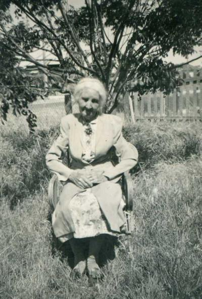
School
Soon after arriving Mum enrolled me at the Carlisle Primary School. I recall the school being of fairly recent construction, probably 1930s with a single classroom for each grade from infants to six. The infants may have been a separate structure and no doubt the teachers had a common room. The class rooms were along a common veranda and I do not recall any other school buildings although there may have been a couple of covered outdoor learning areas. Although the playground was gravelly there were a number of shady trees and overall it was quite a pleasant setting. In the side street (Wright Street) opposite the school was a rather run-down general store that served as a tuck shop, selling pies and pasties, small cakes and a little fruit. The store was run by an extremely overweight man that many poked fun at – it was said that it was many years since he had seen his willy – and because of this he wasn’t very pleasant to his young clientele. Mum would not let me buy anything from the tuck shop although occasional I did. Cousin Ken Dodd was one grade above me; it was his last year of primary school. He was to go to Perth Boys High School in the following year. Glen was two grades below me and always seemed to be in trouble – as he was at home. I do not recall making any particular friends at the Carlisle school. I kept to myself and away from the other boys. Cousin Ken ignored me at school and I was pleased enough that he did. I didn’t enjoy his company and I was thankful that he largely left me alone. When he didn’t it was usually to give me a push and a shove with a verbal put down. In class I found I was very left behind with large gaps in some subjects. I could hold my own at English but all other subjects were well ahead of where I had left them in Grade 4 at Collie. Arrino had not advanced me at all scholastically. It may have been suggested to Mum that I repeat 5th Grade but she would have none of it and resolved to get me into a better school. Reflecting back I suspect that there was nothing wrong with the Carlisle school and my hazy memory of my Grade five teacher is that she was quite a nice lady, but in a class of well over thirty pupils there was little she could do for me.
Living with my Grandparents
The year progressed with few changes. I continued living with Grandma and Grandad. I developed a great fondness for both of them and found Grandad’s company interesting. He told me a lot about his early life which was hard. I did lots of things with him; helped him in the garden and developed my own beds of runner beans and carrots – all very successful. They also thrived on chooks poo and the contents of the liquid manure drum thanks to Grandma’s copious night soil. I am uncertain as to where Mum was staying during those final months of 1945. I believe it must have been at my grandparent’s home but I find it hard to visualise the sleeping arrangements. Perhaps we continued to use the double bed in the front bedroom as we had done on previous occasions staying with my grandparents. Grandma and I listened to the early evening radio serials, ‘Mrs Hobbs’, ‘When a Girl Marries’ and ‘Courtship and Marriage’ and ‘Jungle Doctor’ on a Sunday night. Sometimes when visiting the Dodds I would listen to the Argonaut’s hour. The Argonauts was some kind of club sponsored by the ABC and throughout the hour long programme there were all sorts of competitions, writing projects and the serial ‘The Search for the Golden Boomerang’ which as far as I can recall was never found. The programme caught my imagination but I never became an Argonaut.
The war comes to an end
I have said that at the time of leaving Arrino in July the war was continuing unabated against Japan and there seemed to be no end in sight. Because the United States had taken over the brunt of the fight some limited demobilisation of Australian Forces was starting to take place. Campaigns continued in northern New Guinea, Bougainville, New Britain and in May 1945 Australian forces invaded Borneo at Balikpapan, Tarakan and Brunei. We saw little comment on these mopping up operations in the newspaper that preferred to report on the advance of the United States forces in the western Pacific. At this time we saw very few US servicemen in Australia although I can recall seeing US sailors in both Perth and Fremantle. And then on the 6th August the first atomic bomb was dropped on Hiroshima and this was signalled as the end of the war. A second atomic bomb was dropped on Nagasaki on the 9th August and Japan finally surrendered on the 14th August. With this announcement the streets of all Australian cities and towns went wild. Mum and I with my cousins went into the city. Crowds were coursing through the streets. St Georges Terrace was a melee of people, office workers; paper fluttering from office windows, vehicular traffic at a standstill, only trams able to clang their way through the crowds until even the trammies joined the celebrating crowds. Blackout came to an end and at night the lights were turned on. By mid afternoon everyone had dispersed and gone home. Victory was sweet. It was after the final declaration of surrender that the sheer enormity of what had happened descended. Was this the beginning of the end? Newsreel after newsreel showed footage of the two bombs, the iconic mushroom cloud they produced and the resulting effect of radio-activity on humans. Soon we were watching the sheer desolation of the destruction wreaked on Hiroshima and Nagasaki but there was no regret – the war was over. Gradually the country returned to some level of normality. Hollywood produced a movie, ‘The Beginning or the End’ that told the story of the development of the atomic bomb and its final release on Hiroshima and Nagasaki. It starred Brian Donlevy and Tom Drake (my favourite) and many other well known actors. I recall it told the story factually and left that question hanging at the end.
Uncle Lennie
Uncle Lennie lived with Grandma and Grandad throughout most of my teenage years. He slept in the front room in a single bed on one side of the room with Grandad on the opposite side. Uncle Lennie was always said to be a little less than the full quid and perhaps he was. However, he held a job at the Bunning Bros sawmills on the Victoria Park side of the railway line and was said to be a hard worker. Presumably he paid Grandma something for board and every night she cooked him a meal. He spoke very little and seemed to accept Mum and me being in the little home. Mum would always greet him and he would respond but beyond that kept to himself. Every evening he would take his position after dinner at the end of the kitchen table and study the racing form. Mostly he worked Saturday morning till midday then he would come home, wash up and put on his best suit, always a three piece of a muted green colour, matching shirt and tie and highly polished tan shoes and head to the Carlisle hotel where he would place his bets with the SP and consume a considerable amount of beer throughout the afternoon and evening. He may have had his mates at the Carlisle but he was not in any sense gregarious. I suspect his only conversation might have been with the barmaids and I recall it being said at one time that they thought him a thorough gentleman. When Uncle Lennie walked he did not swing his arms but somehow both hands would shake as though he was shaking something from them. I once asked Mum why he did that and she said he could not help it. He had prospected for gold somewhere north of Kalgoorlie, probably before the war and it was thought that he had got on to something, however Grandma pooh-poohed that notion. He sometimes said that he would go back there one day and in later life he did and may have had some success. Uncle Lennie did not serve in the war and the reason for that was self evident. From time to time he would throw himself into some venture and one I recall was growing roses. He dug up half the front garden area, all of one side of the pathway from the front gate to the front veranda and planted about twenty standard roses. There were a number of varieties and they each had a name and produced beautiful blooms. He knew each one by name and took quite some pride in them. He had inserted a watering pipe into the sandy soil at each bush so that the hose could be inserted to water down to the roots. This being done he made no further effort to look after them. Grandma did the watering and Grandad kept them weed free. Both tasks became Mum and my responsibility and I had no problem with that. Mum once said that throughout their young life Lennie was always bringing home something that others would have to look after, a stray dog, a cat or a baby goat. There was only one instance when I fell into disfavour with him. Looking for something to cut through a piece of rope I remembered his cut-throat razors in the drawer of the duchess in the bathroom. Uncle Lennie religiously had a shave every morning before walking off to work. There were several razors in the drawer and unfortunately the one I chose was his best and latest. Cut-throat razors are made of the very best steel and have to be maintained very sharp. This is achieved by ‘stropping’ then before every use on a leather razor strop. Cutting through a piece of rope with Uncle Lennie’s best razor was not a good thing to do. It left a half moon in the blade and a somewhat serrated edge along the length of the blade. Uncle Lennie spoke to Mum about it, very forcefully I suspect and Mum conveyed his ire to me. I was to approach him on his return from work that day and apologise. Of course my inclination would have been to keep right out of sight until he cooled off but that wasn’t an option and getting it over with as soon as possible I fronted him as soon as he walked in. ‘Sorry Uncle Lennie’ was about all I could say. In return I received a stern lecture about using other people’s property and I was never to go anywhere near his razors or other things again. I didn’t! Uncle Lennie went back to prospecting some years later, perhaps in about 1956 or 57. I was told that he found a good load and made some money from it, enough to survive. He had a friendship with a woman who looked after him when he came to town, either Kalgoorlie of Coolgardie. I think she was a barmaid – a fairly elderly one. Lennie died somewhere in the ’60s.
Uncle Alex
Uncle Alex was an ‘on-and-off’ resident of the little house in Bishopgate Street. Generally he slept or one might say camped in the old bed in the washhouse. Most times he would arrive there from goodness knows where in a state of total inebriation, often in a mess having slept rough for some time. I recall on one occasion the police dropping him home. He had probably spent the night in the watch house. Grandad had little time for him and often huge and abusive arguments would flare. Yet Alex was his son and apparently Grandad had had great expectations of him. I was told that as a young man he showed considerable intelligence but the fact was it is difficult to break the cycle of poverty and while the girls in the family with the exception of Aunty Rhoda did so by marrying well, the two boys seemed unable to move forward. Grandma would always provide for him and nurse him through his periods of recovery although she too would suffer his abuse accusing her of neglecting her children and only thinking of herself during their times of hardship. A charge I often heard levied was that they were brought up on a diet of bread and treacle. It is difficult for me to place into a time scale all the instances that come to mind living in my grandparent’s home. Uncle Alex would come and go; to where he went I had no idea. After recovering from a bender he would be full of grand plans that never came to anything. Always he was never going to touch the grog again. On one occasion he had been down to the Carlisle and arrived home with a bottle of Scotch whisky which he ceremoniously smashed on the cement at the bottom of the back steps and set the spilt whisky alight. There had been a lot of abusive language and I saw all this in a state of bewilderment. Of course it was the start of another bender. At another time a 16x16 foot army tent and fly had been erected in the backyard behind the washhouse. If that sounds in any way bizarre it was not at all uncommon. Army disposal tents after the war could be obtained cheaply and in the acute housing shortage at the time one often saw families living or part living in disposal tents erected in a backyard. This became Uncle Alex’s abode for some time. I recall him lying on a low level stretcher demanding that his glass be filled. From beer he would progress to rum which was then the cheapest of spirits. To urinate he would roll to one side of the stretcher and pee into the sand. I recall Uncle Lennie expressing his disgust at one time. Grandma would turn her back and pretend not to notice. At such times I could be called upon to tickle the balls of his feet with a feather. This seemed to give him particular pleasure and he might even fall asleep. Why I complied with this, I cannot say. Thinking back I wonder if it had some sexual connotation. The Dodds also had an army disposal tent erected in their back yard used both for playing and casual visitors. Uncle Alex occasionally stayed in the Dodd’s tent, probably only when Grandad had ordered him out and then only for a few days. Uncle Bob had no time for him but Aunty Rhoda would never see him without a bed. Where was Mum during these scenes? I can’t really recall. I think during that first year she was mostly there but that was to change. Of course benders come to an end and during such times Uncle Alex could be good company. He might even get a job in the sawmills but this wouldn’t last long. At one time he worked for a factory, tannery I think, cleaning out kilns. From his description it seemed to be an appalling job and I guess it didn’t last long. On another occasion I came home from school to find a cart horse tethered in the back yard, a bale of hay and a spring cart. He had bought this outfit to make yet another start. He took me for rides in the spring cart and would give me the reins. He seemed to know what he was doing – harnessing the horse into the cart and taking it out onto the road. For me it was fun but one day it all disappeared again, perhaps Uncle Alex with it. Sometimes we went for walks and when he had a few pounds in his pocket he could be generous. Once, maybe a few years later I came across him wandering along the footpath of Albany Road in Victoria Park. He was drunk of course and didn’t seem to know where he was. He was tired and said he would have to lie down. There was a vacant block with long grass and a deep settling pond within it. He said he would sleep there so I led him in and he lay on the grass and after talking for a bit fairly coherently he went to sleep. I didn’t know what to do with him. Some fellow passing by asked if he was alright and I said yes and explained that I was looking after my uncle. I don’t know how long he stayed asleep and maybe sitting there I dozed off also. Finally he woke and I walked back to Bishopgate Street with him. I think I was living somewhere else at the time. Somehow, despite all the drunken rows of the past I maintained a relationship with my Uncle Alex. He was not an unintelligent person and in his sober periods when he was swearing off the grog we got on very well. During such times living at Bishopgate Street I would go for walks with him and maybe once or twice to the movies. He enjoyed a good movie and he had his favourite actors. Together we could talk about movies. He never mentioned his drunken bouts and abuse; it was as if they had never happened. At the outbreak of the War in 1939 he had joined up and may have spent a year in the Army. At the time he visited us in Collie, about 1941 or 42, he had been recently discharged. His story was that on the firing range with a .303 rifle he had held it to his left shoulder to shoot and used his right hand fore-finger to manipulate the trigger. This was because he had lost the fore and middle fingers of his right hand in a sawmill accident. Indeed, they were well and truly missing. This had led to his discharge. Dad was very sceptical at this and felt sure there must have been something more to it. Uncle Alex had some sort of access to the Hollywood Military Hospital and seemed to make frequent visits there for one thing or another. He always spoke of the doctors he would see by their first name as if they were old friends. I can’t imagine that he would have had any sort of repatriation benefits entitlement, but, there it was. He somehow came into a small amount of money in 1954, maybe a few hundred pounds and decided to make himself look a little more prosperous by having a suit made. He had found a tailor in Perth who could make him a two piece sports suit for twelve pounds. The suit was duly made and he looked pretty good in it. I am not sure that it had many airings, perhaps to the pub a few times. This led him to offer me a suit to be made by the same tailor. I certainly needed a suit; I didn’t have one so I visited his tailor in Hay Street Perth and chose a double breasted navy blue pin stripe. The cost was sixteen pounds. Uncle Alex wasn’t too impressed at that but agreed to pay for it. The suit was made. It looked good and saw me out for quite a few years. 1945 was coming to an end and somehow the family pulled together for Christmas. Grandad would have beheaded a rooster and it would have been cooked with all the Christmas trimmings. My great desire was met – Mum bought me a crystal set. This remarkable contraption allowed me to listen to the radio through headphones without the use of power. It consisted of a condenser, a crystal and ‘cat’s whisker’, an aerial intake and coil all mounted on a board. With a long aerial stretched between a couple of poles in the back yard and by the careful manipulation of the cat’s whisker on the crystal I was able to listen to most of the local radio stations. Uncle Alex commandeered it Christmas the following year lying in his tent bunk in the back yard to listen to the cricket. I didn’t mind all that much. If Uncle Lennie died in reasonable circumstances in the company of people who thought well of him that was not to be Uncle Alex’s fate. He lived longer than Lennie and was found dead in a paddock out Cannington way in the 1970s. He had been missing for some days.
Activities with the Dodds
Over that Christmas I spent a good deal of play time with my Dodd cousins, Ken and Glen. I found Ken much more agreeable company away from his mates. He could be quite generous and very supportive and that relationship away from his mates was to last through the years. He was physically strong and many times he had my arm twisted behind my back to almost breaking point – but never when we were together alone. Nevertheless, even with his friends there were good times too. Two or three blocks from the Carlisle School there was a lake surrounded by scrub with a broken down old house over on one side. It was a sanctuary for bird life. It was called Tomato Lake or Swamp. Why ‘Tomato’? Apparently it had once been a market garden but with the clearing of scrub the water table had risen swamping the garden. Eventually it was abandoned. This was not an unusual occurrence around Perth and there were a number of such swamps. One that comes to mind was Dog Swamp, quite large just north of the railway line between Perth and Fremantle. I was to learn later at school that the sand of the Perth coastal plain sits on top of impervious coffee rock, thirty feet below the surface. Water sits in a layer in the sand above the coffee rock. When the surface vegetation is cleared in certain locations the water rises to the surface to form a lake or swamp. Hence Tomato Lake and Dog Swamp. Perth at that time could be called a city of windmills. Particularly in the outer suburbs small squatters type windmills were a common sight drawing water from below. Some were above wells and others over a simple bore at the bottom of which was a ‘spear’ immersed in the water layer. People spoke of putting down a spear. Gradually the windmills were replaced by electric motors and I am told that these days there is very little ground water left. Trips to the beach took place by bus, the Carlisle bus into the city and then the Scarborough or City Beach bus to each of those beaches. Inevitably I would get very sunburned and so did cousin Glen, who was as fair skinned as me. I can recall him lying on his tummy on a couch in the Dodd’s front room with his red and blistered back exposed complaining volubly if even a fly landed on it. I was never that bad. Ken seemed to be impervious to sunburn. I could not swim and I suspect neither of my cousins could either. It wasn’t until the following year that I finally learned to swim at the Como river beach. Perhaps late in 1945 or the following year, certainly while the Dodds were still living at Bishopgate Street, some sort of a children’s fancy dress dance had been organised, probably by one of the schools. Aunty Rhoda was keen to have Ken and I attend dressed as pirates. A good deal of effort was made to get both of us dressed up with a black eye patch, a skull and cross-bone hat, some sort of face make-up and a realistic looking plywood cutlass at our side. I was a reluctant starter but had little option. I don’t think Ken was too keen either but we went. It was held in some sort of a community hall, maybe a church hall, in Victoria Park. There was the usual parade around the hall – all the kids dressed in a variety of outfits, girls as fairies, brides or nurses and boys as soldiers, pilots, sailors or anything with a military or patriotic theme. Ken and I were the only pirates. We didn’t of course win and really didn’t expect to. It was all pretty boring and I convinced Ken that we should do some sort of piratical thing on the dance floor, so with cutlasses drawn we leapt into the throng making all sorts of pirate noises and throwing ourselves hither and yon. We were soon ordered off for inappropriate behaviour so we retired to the sideline again this time feeling a little embarrassed. A supper of sandwiches and cakes and cordial was served at one end of the hall and that resulted in a melee of squashed cakes and sandwiches and split cordial. Then it came time to dance – with who and how do you dance? Girls and boys were paired off and we formed up and were taken through the paces of the barn dance. Not a great success. That finished off with ‘free’ dancing and I suppose the organisers thought that the girls and boys would continue to partner each other and some did, probably brothers and sister. We were not permitted to stand on the side line. Authoritative adults were determined to push the reluctant ones (Ken and me) onto the dance floor. So we did – Ken and me, somehow holding each other and jigging around for a few minutes until another authoritative adult ordered us off with ‘boys are not meant to dance with boys – boys dance with girls. You two can go home’. Boys can’t dance with boys! What were they trying to tell us? We went home – not the greatest night ever. Of course Aunty Rhoda was waiting to ask us all about it and I think we just said it was good not wanting to disappoint her. Uncle Bob Dodd had a very fine singing voice and perhaps in different circumstances might have done a good deal with it. I have no idea what brought him to Australia as a young man. I have stated in previous writing (‘Junior’) that he was somewhat averse to work. During his years at Fremantle (until about 1943) I cannot recall him having paid work, however, following his move to Perth he had a job with Woolworths in their despatch department and he frequently spoke on how he would run the show if he was in charge. Uncle Bob was given to ‘talking big’. He was always very kind to me and I do not wish to imply criticism. Aunty Rhoda was the kindest of people. She loved children and I came under her umbrella of love. The Dodds were living well enough at that time. Aunty Rhoda worked at the fish canning factory somewhere at the back of Belmont. The factory canned Western Australian salmon and bony herring. The latter was not a table fish; under its skin was a structure of very small bones, however, canned in tomato sauce the bones somehow softened and the resulting product was not only edible but also very tasty. Aunty Rhoda would bring home pails of fish gut (how she did that on the bus I have no idea) that Uncle Bob would tip along narrow trenches dug in the sand at one side of their house. Into these trenches he planted Gladiola corms and grew the most magnificent Gladioli. He sold these somewhere and we rarely saw them decorating the home. Perhaps they brought in a tidy supplementary income. Uncle Bob’s other interest were his chooks. He had one hundred laying hens in his back yard with properly constructed roosts and laying boxes. These days they would be called free range hens in that they could run around the yard to their heart’s content. He specialised in Australorp hens, which he explained were an Australian hybrid of the Orpington. The Australorp produced a very fine brown-shelled egg which apparently was considered more nutritious than the white shelled egg from the more common White Leghorn hen. He would enter his best layer (always called ‘Bidddie’) in the Muresk egg laying trials. Muresk was an agricultural college north of York east of Perth and Biddie would be packed off in a cage and railed to Muresk. On at least one occasion Uncle Bob’s Biddie took out the first prize. Of course much of the work associated with all of his enterprises would be carried out by Aunty Rhoda with some help from my cousins. Uncle Bob was a fairly stern father and both the boys would jump when he said ‘jump’. Aunty Rhoda on the other hand was a softy and rarely disciplined either of my cousins. Uncle Bob decided that Ken should learn to play a musical instrument and he chose the Hawaiian guitar. He was convinced that Ken was to be a child prodigy. Why the Hawaiian guitar, I have no idea and Ken certainly did not turn out to be anything like a child prodigy. In the event Uncle Bob took to it himself and did surprisingly well. He certainly had an unrealised artistic and musical flair. Nevertheless, the interest did not last long. Aunty Rhoda was a good if rough cook although the quality of the food she bought was never particularly good. At that time frozen mutton was readily available and cheap. Apparently it had been frozen for many months for the then meat-hungry UK market during or at the end of the war. It had been released onto the Australian market and could be purchased without coupons. When cooked it had a distinctive flavour and smell. I tended to turn my nose up at it and avoided eating it if I could. Butter was heavily rationed and in the Dodd household a scarce commodity. Aunty Rhoda would make large cakes on lard or even strained dripping in place of butter. Although they looked delicious with their thick pink icing the taste was not to my liking and again I avoided them. But then I was ‘spoilt’ – everyone said so! My recollection of the Dodd’s home in Bishopgate Street was that it was always in a state of chaos. Nothing was ever tidied; newspapers would lie for days where they fell, dishes would be washed up only when there were no more clean dishes, beds were rarely made and sheets at the ‘foot’ end would remain grubby for days. Bathing in the bath was a once a week event and undertaken in strict order of precedence; first Uncle Bob, then the children often including me and then Aunty Rhoda. And yet the family never suffered; all were healthy enough.
1946: A NEW SCHOOL
Ken Dodd had completed his primary school at Carlisle and Uncle Bob had managed to enrol him at Perth Boys School between Roe Street and James Street. Its front entrance was in James Street but we from other schools like to think of it fronting the notorious Roe Street. Throughout 1946 I continued to live with Mum in my grandparents little home in Bishopgate Street. Perhaps because of Ken’s High school entry being Perth Boys Mum was determined to get me into a better school than the Carlisle Primary and she had decided on the East Victoria Park State School in Albany Road directly opposite Mint Street. The only trouble was I lived in Carlisle and the zoning system meant that I was not eligible to attend East Vic Park. She had met a woman living in Victoria Park and had arranged with her that I would adopt her address as my own. Some days before the start of school Mum took me to visit the woman and more or less see where I was supposed to be living. Of course I was not going to actually live there (and I was thankful for that having seen the place) but the woman was kind and very cooperative. Her husband was invalided from the war I think; in any case he was not at home. She had several children and in Mum’s words ‘they had the run of the neighbourhood’. I think that meant that they were pretty rough and I was not to become friends. I had no desire to be either. Perhaps Mum paid the good woman something for the convenience of using her address – I recall some comment to that effect. Having visited the sham address Mum took me to the East Vic Park School and I was duly enrolled. I left there feeling as if I had taken my first step to a criminal career. We didn’t revisit the bogus address but headed straight back to Bishopgate Street and some days later I fronted up for my first day in grade six. There were several grade six classes and I was put into the academic streamed class that had both boys and girls. It was not uncommon for classes to have forty pupils and I believe that my class had about that many. I had a lady teacher, middle aged, who turned out to be very pleasant but quite firm and I progressed quite well. I can’t recall her name but it may well have been Mrs Smith. It was in fact a very enjoyable year at school although the bogus home address continued to trouble me for a few weeks. On the first few days in both walking to school and home again instead of walking straight down Mint Street, having told Mum that I needed to get to school early, I would detour towards the bogus address so that I appeared to be approaching the school from the right direction. On the way home I would again detour, once or twice actually calling in and then head back to Bishopgate Street. Eventually Mum asked why it was taking me so long to arrive home and I told her what I was doing. She was very sharp with me and I suspect that she felt a little guilty at having put me into that position, however, that brought the practice to an end and I came to realise that my ‘home address’ meant little to anyone other than me.
Call me Robert
I had long wanted to escape from the name that the family had attached to me ‘Junior’ and be known by my proper name of Robert. I was enrolled at the Carlisle school as Robert and surprisingly cousin Ken respected that at school. Grandma and Grandad managed quite well but Uncles and Aunts had difficulty as had little cousin Robin (who continued to call me Junior for many years after). I survived as Robert at East Victoria Park until the new Methodist minister, Mr Vaughan, appointed about half way through the year to take the single period each week of religious education on seeing me in the class addressed me as ‘Junior’. Mr Vaughan had been the Methodist Minister in Collie. How he managed to remember my nom-de-plume I knew not since I had had very little contact with him in Collie. So ‘Junior’ lingered on for a few more months although most called me ‘Skitchy’ as most members of the Skitch family were so called.
The classroom
Year six was known as the ‘scholarship year’ because about August we sat for a special test in arithmetic and English for possible Year Seven entry to Perth Modern School. I think Mum had her fingers crossed that I might get entry but it wasn’t to be. Only two pupils in my class made the grade and they were both girls. Some of the private schools used the scholarship test for subsidised entry through their portals but I do not recall anyone from my class being so offered. Perth Modern School was without doubt the high achiever’s school. It might have been in that year also that we had the Commonwealth Bank test. This consisted of being given a matrix of numbers, something like twelve rows of twelve columns, one hundred and forty four numbers in all. The student was required to add up across each row and enter the sum in the empty right hand column then add up each column and enter the sum at the bottom. The real test then was to add up all the sums down the right hand column and all the sums across the bottom row to get the same final sum. What a test and of course I didn’t make it. I doubt whether anyone did, however, it dashed my dreams of sitting in a wood panelled office with a shiny wood desk doing whatever bank men did. Mrs Smith was a good teacher and I enjoyed being in her class. I don’t recall making any close school friends. Most in the class had been together for the previous five years so I was a bit of an outsider and I didn’t mind that. I dreaded the idea of asking anyone back to Bishopgate Street to play and in any case they all lived a suburb away. I had contact with other teachers, Mr Molloy who had the all-boys class next door to mine was a pleasant middle aged fellow who had been too old for the war. Mr Molloy always wore a three piece suit and tie, as most male teachers did in those days. He may have been Deputy Principal as well because as such he was the caning teacher. At East Vic Park there was no caning in the class room. Those deserving the cane were sent to the caning teacher at a certain time who would then administer the agreed number of strokes to each hand in a room set aside for the purpose. Girls, of course, didn’t get the cane. One day the boys from my class joined Mr Molloy’s class and he gave us a talk on how a motor car engine works. He then took us all to where his own car (a Ford Prefect) was parked and to our surprise lifted the bonnet to show the engine with the tappet cover taken off exposing the tappets. He then turned the engine over so we could see the tappets in motion as the four little pistons went up and down. He did all this in his three piece suit with just a workman’s apron on to give him protection from any oil splashes or sprays.
The Choir
Also I remember Miss Galloway our singing teacher. Miss Galloway was elderly, or at least in my eyes she was. Weren’t all teachers elderly in those days? – perhaps the effect of five years of war. She had a sort of Englishness about her or at least chose to speak that way as if she had undertaken extensive elocution courses. Nevertheless she was pleasant enough and I enjoyed being part of her choir. At the age of twelve I had a reasonable singing voice, good enough for the choir so I was one of the ‘singers’. The singers were mostly girls with a few boys. The boys who couldn’t sing or who pretended not to be able, were classified as ‘grumblers’ and they sat on the floor in front of the singers. We did quite well singing very English songs like ‘Nymphs and Shepherds Come Away’ and of course ‘God save the King’ which was our national anthem at that time. Maybe we sang a couple of Australian songs that were considered to be classics.
In about August we were bussed into one of the commercial radio stations, 6PR, I think, to be broadcast live over the wireless. This was a great event. We all (not the grumblers) had to be at the school playground by six o’clock to board the bus to take us into the city studio of 6PR. We duly formed up in the studio in front of a huge microphone and after a couple of practice runs with a bit of shuffling to bring some singers forward and others pushed to the rear we waited somewhat nervously for some minutes until we were ‘on’. It was all very impressive with men walking around wearing headphones talking to each other. A big red light flashed in front of us and we were on! A smooth talking announcer to one side introduced Miss Galloway and the East Victoria Park School Choir and then giving a big exaggerated hand signal towards Miss Galloway, somewhat like a cricket umpire telling a batsman that he is out, we were off with Nymphs and Shepherds etcetera, the announcer introducing each number we sang. We continued for our allotted time span of fifteen minutes (most radio programmes were fifteen minutes in 1946) and it was all over. Miss Galloway was delighted with our performance (of course she favoured the girls as always) and it was then down the stairs and into the bus and back to East Vic Park. We all dispersed to make our way home on foot having been told that we need not turn up for school the next day until ten o’clock. How could that happen today – children walking home at 8.30 in the evening alone along deserted suburban streets? It was a different world in 1946. Very few families owned a car and maybe the occasional parent might wait at the school to accompany their child home, but rarely and such would not be appreciated by the child, especially a boy.
The playground
East Victoria Park school playground was a large gravelled expanse with a few shade trees down one side with lunch benches beneath. I quickly realised that the play ground could rapidly become a battle ground and that was a scene I wanted to keep out of and managed to do so although at times it could be touch and go. There were some pretty rough kids attending East Vic Park and reflecting back they were always consigned to one of the classes with a male teacher. While sixth grade was as far as the primary school classes went, East Vic Park had a year seven. With a school leaving age of fourteen at that time quite a few boys would aspire to leave school at fourteen to take on a five year apprenticeship. Those moving into High School were expected to continue on to Junior Certificate in year nine and a few then to Leaving Certificate in year eleven (later, year twelve). Many of the ‘tough types’ at East Vic Park were in year seven and one became somewhat notorious when he walloped some kid over the back of the head knocking him unconscious. Somehow the incident was reported to the Daily News newspaper (Perth’s evening newspaper) under the heading KING HIT with a bit of a story about bullying at schools. East Vic Park was mentioned, a fact not appreciated by the headmaster. The ‘tough’ appeared at school the next day with chest out proud in his notoriety, at least until he was expelled mid morning. He remained the talk of the playground for a few days after that. It was in the East Vic Park playground that I first heard about sex. In that regard I was totally innocent and had no knowledge – not a subject Mum could deal with. One of the big boys with a smirk told of his stiffy and how you put it into the girl’s cunt. I doubt whether he had actually had that experience and I found it all a bit strange. Who would want to do that! Of course boys of twelve years have all experienced a stiffy so it was a matter of small wonder. I was going to ask Mum about it but didn’t think she would know anything about it. After all, it sounded a bit dirty.
Lunches
Sometime during the year Oslo Lunches were introduced. We had a nutrition expert come into the classroom to tell us about how good they were – full of vitamins, very healthy. Notices were distributed to take home to parents. Mum was sufficiently impressed to allow me to buy an Oslo Lunch on at least three days each week. The lunch served in a paper bag consisted of a lettuce leaf, a quarter of a tomato, a piece of carrot, half an apple, a piece of cheese and a lightly buttered slice of wholemeal bread at a cost of sixpence. A small bottle of milk, probably a quarter of a pint, could be purchased for one or two pennies more. The bottle had to be returned. The government programme to provide free milk to primary school children did not commence until a couple of years later. But of course there was still the tuck shop a few doors along Albany Road that sold pies and cakes and although the school tried to ban children from exiting the school gate at lunch time the ban was soon lifted, perhaps when a pie cart trundled up just outside the fence selling their ware across the fence. Mostly lunch hours were filled in sitting around under the shade trees yarning and romancing. I remember telling of my time at Arrino (most of the kids hadn’t even seen a cow in a paddock let alone try to milk one) and to spice it up a bit threw in a earthquake where the ground opened up and hot steam was emitted. That was going a bit far and I wasn’t believed but I stuck to my story and fortunately the bell went and we headed off to the classroom. The next day one of the kids asked me quietly if it was really true and I admitted my falsehood with ‘nah – but it could’ve’. Perhaps I was a little vindicated a year or two later when a good deal of publicity was given to a number of pretty solid tremors along the Meckering fault line although Meckering is quite some distance from Arrino.
Swimming
In 1946 I finally learned to swim. East Vic Park introduced swimming lessons in the latter half of the year. They were optional and took place at Como beach on the Swan River. Mum was keen that I take part and probably there was a small cost in addition to the tram fares to get there and back. At Como there was a substantial jetty where the passenger ferry SS Perth docked bringing workers from the city (northern) side of Perth Waters to the southern side. Part way along the jetty was a low level swimming enclosure and it was here that I took my first few strokes of actual swimming from one side to the other. But first we had to learn stroke techniques on the beach, lying on our bellies and swinging our arms as if we were swimming. Then we had to develop water confidence in the shallow water with ‘dead man’s float’ (I didn’t like the name all that much) floating on our bellies with face downwards in the water and then back floating. After a week of two we ventured out to the swimming enclosure where the water was well over our depth and encouraged to belly flop in and put our stroke techniques into practice. One by one we did that – some opted out on that first occasion, but I knew I had to and did. It all worked out and after a while I was swimming reasonably well although I could never open my eyes under water – I still can’t. Swimming opened up a whole new world for me. I enjoyed swimming although I was never competitive and I swam better than my cousins.
Bishopgate Street
If school was fun life at Bishopgate Street was difficult. I loved my grandparents and did lots of things with Grandad. He and I built a large cart from a large packing box. The cart had metal wheels on an axle that was acquired from somewhere. The axle was attached to a length of timber the width of the box with long bent over nails and then nailed across the centre of the cart. It fitted the cart exactly. Two long shafts were nailed one to either side of the cart by which the cart was to be pulled. Pulled along the roadway the old metal wheels made quite a noise, both in its rumbling on the rough road surface and squeaking on the axle which no amount of oil would correct for more than half an hour. Why the cart? It was to allow Grandad and me to load up with produce from our backyard garden – Green Feast peas, runner beans, carrots, potatoes, turnips, even tomatoes and lettuce although the latter were never much good. Some of the vege beds were mine and others were Grandad’s. Grandad’s specialty was the Green Feast peas and mine the runner beans and both of these grew prolifically on Grandma’s bed chamber contents and chook’s poo. We had our customers and once a week we would set out pulling our cart to those addresses, sometimes being called in by others as we trundled past. Grandad always addressed the women purchasers as ‘mother’ – I guess they invariably were and they all seemed elderly to me. Charges for a bundle of peas or beans or a few carrots was always threepence or sixpence and Grandad would often chuck in a few extras especially if we were homeward bound and wanted to clear the cart. There was nothing fancy in the service. Beans and peas would be wrapped in newspaper. Perhaps we looked an odd pair, Grandad in his old dungaree trousers, long sleeve rather frayed shirt none too clean and greasy skull cap; me in neat shirt, khaki shorts and open sandals. Mum always kept me looking clean and tidy in well pressed clothes.
A return to Collie
Sometime during 1946 I had a short holiday in Collie. It may have been during the mid year school holidays, June or July because I recall it being quite cold. Robert Phillips was a consistent friend during my younger years in Collie although I would not have rated him my best friend. I think it was Robert who initiated the extension of our friendship by writing me a letter which arrived at Bishopgate Street soon after my return from Arrino. I replied and the exchange of correspondence continued into 1946 culminating in an invitation to come to Collie for a week during school holidays. I suspect Mum may have had something to do with it, perhaps meeting Mrs Phillips during the period she was in Collie winding up our affairs while I stayed at Arrino. Mum was never particularly friendly with Mrs Phillips during our Collie years; on no occasion did she ever call nor did Mrs Phillips visit our home although we lived only half a dozen doors apart. Anyhow, it was decided that I would accept the offer and a second class return rail ticket was purchased and I caught the Bunbury train to Brunswick Junction to connect with the Collie train, a trip I had done with Mum and sometimes with Dad many times in the past. Mum and Mrs Roberts must have corresponded because it had been arranged that I would meet Robert on the platform at Brunswick Junction and we would travel together on the two hour long trip to Collie. The rendezvous duly took place and I clearly recall feeling less than enthusiastic about the trip. Perhaps the highlight in my mind would have been to visit Aunty Grace at Collie Cardiff and once again see my Kelpie dog Pix. Robert’s father was an engine driver and although I used to see Mrs Phillips on most times when I visited to play, I rarely saw Mr Phillips who would be either at work or resting up between shifts. When I did see him he was friendly enough in a gruff sort of way and I always had the feeling that he really did not know who I was. At some point on the trip from Brunswick to Collie the train guard swung into our compartment to check and click our tickets. I was able to produce my ticket but Robert did not have one. Apparently Mr Phillips had made some arrangement for Robert to travel to Brunswick Junction and back without paying for a ticket. Clearly the guard didn’t know of this and wanted to take Robert’s name and address. Robert burst into tears (Robert was always inclined to do that – he was a year younger than me) and finally the guard gave up. The trip from Brunswick to Collie was relatively short in distance, about forty miles, but long in travelling time. The train made frequent stops at sidings along the way and many used to say you could walk faster and pick mushrooms. It was quite dark when we finally arrived at the Collie Station platform – very familiar territory for me. We walked from the station up to Robert’s home at the end of Wittenoon Street and received a warm welcome. Some rearrangement of children’s beds (the Phillips family had several) had taken place and Robert and I shared a room; so far so good. I have little recollection of what we did over that week. The games we used to play were no longer of interest and Robert was not in any way an interesting person. The eighteen months we had been apart, and even the twelve months before that when I tended to move into a different group of friends, meant that our interests had diverged a great deal, at least mine had. Of course to the Phillips’ I was still ‘Junior’ and Robert was still called ‘Chummy’ which for no good reason had always annoyed me. I wanted to visit all my old friends but mention of that failed to attract any support. I was to be with Robert. Of course I did visit the Houghs and the Whithalls and they were very welcoming. Elizabeth Whithell was just the same and Bob Hough still a good bloke. He had left school at fourteen and had a job on the Collie Roads Board. There seemed to be no chance of getting over to visit Geoff Fogarty and Billie Cook, however a trip out to Collie Cardiff was agreed to. I caught the train out to Cardiff; that seven mile trip took the best part of an hour in a coach hitched behind a coal train. I arrived quite early, there was no actual platform at Cardiff and the train pulled into a siding nearly opposite the Woodward’s little cottage. I received a very warm welcome from both my Aunt and Uncle but to my great disappointment my dog Pix did not want to know me. My cousin Astor was staying with Aunty Grace and Uncle Bert – I think there had been a bust up with her husband Lloyd Taylor; apparently a fairly regular happening. Astor was great fun and clearly Pix had become her dog. I tried to take Pix for a walk and ball game in the paddock next door but he would have no part of it and would not come with me. Aunty Grace said that when Uncle Bert picked Pix up at the time we left Collie he was very homesick and greatly missed us. The Woodwards had a dog they called Pickles, a very fat fox terrier, so to distinguish between Pix and Pickles, Pixie had become Dixie. As well as that they thought Pixie was a silly name for a dog. Aunty Grace was a great cook and had made a beautiful iced sponge cake and a batch of scones and I think I ate cake and scones with strawberry jam and thick whipped cream all day. When Astor finally left Collie Cardiff she took Pix (or Dix) with her and he lived with the Taylor family till the end of his days – at the ripe old age for a dog of eighteen years.
Near the end of my week with the Phillips Robert and I went off on bikes; I am not sure where. I was riding his sister’s bike and we were away some hours. We probably rode out to the Minninup pool on the Collie River and maybe on to the Fergusson rapids, both favourite places of mine from previous years and where Mum and I and the Houghs often picnicked. Anyhow, we were late arriving back and I think the bike I was riding had sustained some slight damage. To my dismay Mrs Phillips was very annoyed with me – in fact gave me the rounds of the kitchen. I had led Robert astray somehow and had been discourteous all week. Perhaps I had but had been unaware of it. Although she calmed down and may have given me a smile I was glad that I was leaving for home in a day or so. I think I kept a pretty low profile until I finally stepped on the train for my trip back to Perth. When I think back on my friendship with Robert Phillips it was always me who initiated the games we played and a reading of my story ‘Junior’ would support that. I don’t think I was a domineering child but perhaps not always as thoughtful as I might have been. In my friendship with Geoff Fogarty the opposite was the case. At Mum’s insistence I wrote a letter to the Phillips thanking them for my holiday and saying that I enjoyed it very much. I neither saw nor heard from Robert Phillips for some years after that but had a chance meeting with him at Scarborough. I spotted him standing in a queue waiting for a bus on the beach esplanade (Jim and I were on our bikes) so I went up to him and greeted him. I was probably sixteen or seventeen at the time – he a year younger. He was friendly but distant. He was with others. He told me he was living in Berwick Street but didn’t suggest that I visit. That was the last time I saw him. Childhood friendships rarely survive.
Money matters – Mum gets a job
Mum had very little day to day money. While there had been a compensation payment on my father’s death that took a long time to come through. I think it was something less than a thousand pounds and it was carefully put in the savings bank for a rainy day. Dad had subscribed to a superannuation scheme which had not long been introduced into the public service. That gave Mum an income of twenty five shillings a week and disqualified her from a widows pension for several years. She had to work and perhaps through Uncle Bob she got a job in the Woolworth’s cafeteria. She started towards the end of 1945 and may have lasted there for three months. The job came to an end when she dropped a tray of glassware and crockery. Whether she left of her own accord after being thoroughly roasted by the cafeteria supervisor or she got the sack I am not sure. Mum’s next job was with Aunty Rhoda in the fish cannery. This one lasted somewhat longer throughout 1946 I would think. At first she worked at a bench scaling, gutting and cleaning fish, bony herrings, all day long. Even now I can hardly imagine my mother doing that. I guess she kept that up for some months. Her hands were often red and swollen although I presume she wore gloves. She received a nasty cut on her hand and the management finally took her off that work and put her on labelling of cans. There wasn’t very much mechanisation in 1946, certainly not in the fish cannery. So she sat at a bench day after day putting labels on cans of bony herring and salmon. She had quick nimble fingers but what a desperately mind numbing job it must have been. But we needed the money and we couldn’t continue living with and sponging off elderly parents and relatives all the time. Did I appreciate that at the time? Probably not. Mum was only thirty eight years old when Dad was killed and she was still an attractive woman. Throughout the years in Collie she had always looked after herself, applying skin balms and keeping out of the sun. Dad did all the hard work in the home and some would say he treated Mum like a china doll. There was some reason for this. Child birth had been a very difficult experience. She had lost her first child (still-born I was told) and that had caused a good deal of damage. I was born emergency caesarean requiring a second ‘repair’ operation some time after. Mum had two large scars running from just below her navel to her pubes. I had seen these many times. All of this led to the assumption that she was ‘frail’. Like all of the Magowans she suffered from stomach ulcers and always there was a can of ‘DeWitts Antacid Powder’ at reach. The transition to life on her own must have been traumatic. Somehow little Junior thought everything would go along smoothly but it didn’t. Despite the kindness of Grandma and Grandad and Aunty Rhoda and Uncle Bob I longed for a home and living as we were I had no private space. I continued to miss Collie and all my old mates tremendously. And then there were my two uncles, Lennie and Alex. While Uncle Lennie went about his life without making any ripples, quietly going off to work each morning and returning in the afternoon, studying the horse racing form every evening, his pub visit every Saturday to place his bets and consume a substantial amount of beer, he never spoke to me and I felt that my presence was resented. If I approached him he might respond but never showed any affection. Uncle Alex was increasingly inebriated and often dreadful rows would develop, sometimes with Grandad ordering him from the house. Of course he never went but would finally collapse on his bunk bed in the wash house or the tent in the back yard. I dreaded these scenes.
‘Russia’ wins the Melbourne Cup
The first Tuesday in November was Melbourne Cup day. There had been little else to talk about in the weeks preceding and even Grandma proposed to have a little flutter on the Cup. I think Uncle Lennie by the time Cup Day arrived had probably backed just about every horse in the race for either a place both ways or for an outright win. The Dodds were equally involved and even we kids were having our imaginary punts. Only Grandad knew which horse was going to win – Russia – how could it lose with Darby Munro on its back. Grandad was a committed Communist (more about that later) and in his mind should Russia win it would be portentous of things to come. Russia did win and so did Grandad. I think under Grandad’s influence Mum may have had a few shillings on it if only for a place.
Peter Redfern
It was at somewhere in 1946 that I came to realise that Mum had a boyfriend. I can’t remember exactly how but I think she started mentioning a name I didn’t know – Peter – and gradually she started talking of Peter Redfern. Where did she meet him? In the Carlisle Hotel I think. She was visiting the Carlisle a good deal at weekends, on a Saturday (it did not open on Sundays), coming home smelling of alcohol. Grandma was disdainful but said nothing. I met him once some months later. I cannot remember the circumstances of our meeting, I feel fairly sure it was not at Bishopgate Street; it might have been at the Carlisle Hotel. He seemed nice enough and I was struck by the fact that he showed a considerable physical resemblance to my father. I never knew what his job was but I don’t think it was particularly significant. He had had war service as had most Australian men of that age in 1946. Alcohol was starting to become a significant factor in our lives and I hated it.
The Young Australia League (YAL)
It may have been in 1946 because I am fairly certain that at the time I was living in Bishopgate Street that Mum arranged for me to join the Young Australia League. Thinking back on that it surprise me that Mum even knew of its existence or what it did and I can only imagine that one of her friends brought it to her attention and no doubt suggested that it might be good for son Junior. The YAL as it was known, and in no way was it aligned to that other well known organisation, the YMCA, was (and is) an organisation established in Western Australia initially for the promotion of Australian Rules football but broadened to take on lots of other pursuits of a cultural nature. It owned and occupied an impressive building at the eastern end of Murray Street in central Perth. One of its great achievements during the 1930s was the creation of the Araluen botanical park near Rollingstone in the foothills of the Darling Range. It commemorated the eighty eight YAL boys who lost their lives in the Great War of 1914-18. It was to become one of my favourite places. But the YAL building in Murray Street was never my favourite place. I trooped in there each Saturday morning for about six months to participate in their basement gymnasium and that did little for me. The building seemed a mausoleum of a place and exploring around its corridors apart from a dusty library it seemed to offer very little. I had little interest in gym work and Mum finally agreed to my departing the YAL after a stern lecture on wasting her money. I might have responded that I didn’t ask to be in the YAL but probably didn’t.
Christmas 1946
I think we celebrated Christmas at the Dodds that year. Certainly I was spending an increasing amount of time there. I often went to the pictures with cousin Ken to the Savoy picture theatre on Albany Road a short distance from the junction of Mint Street. Sometimes we would catch the number ten or eleven tram into the city to attend a matinee performance or one of the newsreel cinemas and there were several of those. Or we might wander down to Tomato Lake behind the Carlisle school. I don’t know that we did much there. Ken usually had one of his local friends with him and I guess I just tagged along. He didn’t seem to mind although at times I might have got a bit of ribbing, I put up with that. It was Christmas 1946 that the older brother of one of Ken’s mates whom I occasionally saw on brief visits to their home on the corner of Star and Archer Streets, was attacked by a shark at City Beach. His name was Alan Sutherland. He survived the attack but lost a leg. The incident caused quite a stir and attracted a lot of publicity. It was not uncommon for the shark alarm to sound on our beaches and bathers would make a bee-line for the shore. The Western Australian coast has a cold current flowing north that was said not to attract sharks to the same extent as the east coast beaches. Grey Nurse sharks were the most common and it was later shown that they were strictly fish eating, however, we didn’t know that then and found them quite fearful. I have no idea what sort of shark it was that attacked Alan Sutherland’s brother.
Coaching for High School
Mum was on chatting terms with a school teacher lady who lived diagonally across the road from the Dodds. Mum had asked if she would give me some extra coaching over the holidays to better prepare me for high school. The schoolteacher lady asked to see samples of my work. After looking at them she declared that they were not of sufficient standard to warrant her attention and that she doubted that I would get through high school. I am not sure whether Mum was more annoyed with the lady schoolteacher or with me. I was secretly delighted; I didn’t particularly like the lady who to me was very domineering. I think Mum’s chatting relationship with her came to an abrupt end. I had the pleasure of telling her a couple of years later when she asked how I went with my Junior Certificate that I had passed all eight subjects. I didn’t tell her my marks though. They weren’t all that good.
1947 : KENT STREET SCHOOL
At the end of January 1947 I enrolled at Kent Street High School. As the name implies it was located in Kent Street Victoria Park although most students entered the school from Berwick Street at the end of Rathay Street. Kent Street (as the school was widely called) was then a junior high school comprising three grades, Years 7, 8 and 9 finishing with Junior Certificate. It is now a senior high school going through to Senior Certificate and matriculation for university entrance. In 1947 it was a relatively new school, probably only ten years old. It had extensive lawn areas and garden beds and a large sports playing field resembling more the private church schools than most state schools. The school was built in a U shape but with the open side closed in by the manual arts building – metal work shop, technical drawing and woodwork shop. A road separated that building from the U structure. As with most primary school children entering high school I found it very confusing, however, I settled in fairly quickly. It was no longer a simple walk to school, I needed to catch the Carlisle bus in Archer Street and by a somewhat circuitous route it finished up in Berwick Street and with lots of other kids I was able to get off at the Rathay Street back entrance. It was a school for both girls and boys (these days called co-educational) and at the time that was not all that common. Most high schools were either girls high or boys high, certainly the larger city ones were. There was a non-compulsory uniform, grey short trousered suit for boys; in summer khaki shorts and white shirt and for girls a navy blue tunic with white blouse and red belt. Boys could wear sandals in summer. This all seemed very regimented. A large range of subjects was offered including trade subjects so one entered the trade stream or the academic stream. While there were no all-girls classes there were all-boys classes in the trade stream. I went into the academic stream undertaking English, Maths (which in year 8 separated into Maths A and B), Latin (which I dropped in year 8), Geography, History (which I dropped in year 8), Science (in year 8 Science became Physics and Chemistry), Technical Drawing and Woodwork.
‘Killer’ Hansen
For a short while at the start of year 7 I had a female teacher but after the first few weeks along came Mr Hansen. Somehow word went around before he arrived that he was known as ‘Killer Hansen’. That didn’t sound too good! Mr Hansen’s image still lingers in my mind. He was a big man tall and stoutly built. His hair was close cut wiry and grey. I guess he was in his fifties. He had an odd way of speaking through almost closed lips as though he was forcing the words to come out. He told us when first confronting the class that he had a cane locked away in the cupboard and he did not intend to use it because we would be a good class and give him no trouble. It all went along sweetly for a while but there were often times when he seemed to be losing his composure, his words would become more and more forced between almost closed lips and his normally red face would become more purple than red. His face would visibly sweat. It was only a matter of time before his cane was taken from the cupboard and from that moment it rarely left his hand or the top of his desk. He rarely gave any boy (girls were not allowed to be caned) more than two strokes on one or the other hand and they weren’t desperately heavy but they certainly stung. The cane was applied for talking in the class, nudging a neighbour, not being able to repeat what he may have just said, that is, not paying attention, however, the cane was especially active in the maths sessions and there would be one or two of these each day. It was given for making a careless mistake in any arithmetic process, addition, subtraction division and multiplication or simply not applying what had just been taught, in algebra for instance. One mistake, one stroke, another mistake a second stroke on the other hand. I recall one small and somewhat timid boy wetting his pants in anticipation whereupon Hansen sent him from the class room. Word went around that there was a repercussion from that incident and the boy was transferred to another class. Mum had told me that if ever I was get the cane it was not to be given on my left hand since the wrist was weak and it could be damaged further. This was the result of the accident I had at the end of 1943 when my wrist was badly broken and had to be wired together. The three inch scar was still quite livid. I was having a bad day in maths. First I made an unforgiveable careless error. Killer stormed down on me with cane poised. ‘Hold out your hand’ he muttered between clenched lips – I held out my right hand and WACK, down came the cane across the centre of my hand with unerring accuracy. Feeling a little shaken and trying to overcome the sharp stinging left by the cane to my horror I made the same stupid stupid mistake again. Killer descended again and I held out my right hand again. ‘Other hand lad’ he muttered, not wishing to totally disable my writing hand. ‘Sir, I am not able to take the cane on that hand – my wrist is wired together’ I responded showing him the livid centipede like scar. He conceded – ‘alright, sit down then and take more care’. I did and took more care. I don’t recall getting the cane again throughout that year. Of course I got a bit of a ribbing out on the lawn afterwards, however, the scar was pretty convincing. From time to time Mr Hansen would become quite political and give the class a burn on politics claiming that Australian governments were corrupt and politicians not worthy of their pay or words to that effect. He would become quite emotional in the process, spitting his words out and then suddenly stop and get on with the next lesson. It was all very strange and coming from a strong Labor background that worshipped John Curtin and Ben Chifley I found his political outbursts unsettling. In November I had a severe attack of the flu that confined me to bed for two weeks. It was over exam time and I was very worried that I would not progress to year eight. Mum went to the school and reported my predicament to the Headmaster, Mr McGrath and to Mr Hansen. She was promised that my absence would have no effect on my progression. On arriving home she commented on what a thorough gentleman Mr Hansen was and how lucky I had been to have had him for a teacher. Soon after I had reported back to school and having received a warm welcome from Hansen he gave me a test maths paper to do. With some trepidation I attacked it and passed with flying colours. We all survived the year under Mr Hansen. I and most others became a lot more careful checking and double checking everything we did. Of course the cane remained evident at all times but its use became less frequent. At times also Hansen could be almost friendly. He read very well and I remember him reading to the class the John Buchan novel ‘39 Steps’. At the end of the year when other classes were having break-up parties – Hansen having told us a day or two before that he didn’t approve of such activities – he confessed to the class that Mrs Hansen had told him the night before that he was being miserable and he should do something. Thereupon he read to the class and we had a general session of storytelling and to our surprise he produced a pocket full of threepences and gave one to each of us with which to buy an ice-cream after school. That was the last we saw of him. I think he must have retired at the end of ’46.
Latin and Miss Hannah Hoad
But of course I had other teachers that year. Miss Hoad took a small group of us for Latin. In 1946 doctors wrote their prescriptions in Latin, or were said to, and chemists were therefore required to have some knowledge of Latin also. I had some aspirations to become a chemist so I thought Latin would be a useful subject. It was also said to give one a better understanding of English. Miss Hannah Hoad was known to me. She had been deputy principal of the Collie High School and had played tennis with my father in the Collie Tennis Club. She would have been in Collie at the time Dad lost his life and would have known the circumstances. That seemed to be a plus but it wasn’t a very big one. Miss Hoad was a very stout and short lady with red hair and a trumpeting voice. She had red hair and always wore a bottle green cardigan, a tweed skirt and very sensible shoes. There were only about five or six of us undertaking Latin and I only remember two, Peter Sojan and Janice Pereira. They were from Roman Catholic families and were required to take Latin to be able to better understand the Latin Mass. We had a couple of Latin periods each week and always had Latin homework which Miss Hoad would mark during the lesson. She had two favourite words – dilatory and diligent. If one’s homework was not up to scratch Miss Hoad would bellow ‘You are dilatory Master ....’ but if the homework was good she would advise one that they are diligent in much softer tones. Miss Hoad always used ‘Master’ and ‘Miss’ as a form of address. Master Skitch was mostly diligent, Master Sojan was always dilatory and Miss Pereira (her favourite) was always diligent. While I departed the Latin class at the end of the year, to Miss Hoad’s disgust, both Peter and Janice persisted. Whether Peter ever overcame his dilatoriness I never knew.
Science with Mr Moore
My other teacher beyond my home classroom was my science teacher, Mr Moore. To me he was an outstanding teacher and from him I learned science far beyond the required syllabus. Mr Moore was a short man with a mild but enthusiastic manner; quite a contrast to my class teacher. We had an excellent well equipped science laboratory. In that first year of science we kept to the simple concepts in effect to whet our appetite to understand the world around us. We did simple mechanical experiments and demonstrations, some involving application of mathematics which might have led us into applied mathematics at a later time. It wasn’t until Year 8 that our science class split into physics and chemistry. I took both.
BISHOPGATE STREET
Mum and I continued to live with my grandparents in Bishopgate Street. Mum continued to work at the fish cannery with Aunty Rhoda. Mum had applied for some form of government trust housing but the waiting period was very long. There was little option other than to stay where we were but often the atmospherics of the home were very tense and stressful. Grandma and Grandad were very accommodating and I continued to enjoy their company. Grandad told me about his early life and the hardships suffered. I had difficulty understanding it all; he would drift from his early past to more recent incidents, to politics and to religion and probably only now when I think back on it that I can put it all into some sort of context. In many respects he was bitter and had had a lot of disappointments yet he loved his daughters and probably his two sons also. Uncle Lennie in one of his enthusiastic moments bought a pair of ‘roller canaries’. He had them in a cage hanging in the bathroom. His enthusiasm for them faded. They were supposed to sing or ‘roll’ and I never understood what that meant, but there they were and it was finally left to Grandma to feed and look after them. I cannot recall that I was seeing very much of my mother during those months of 1947. Of course she was working and coming home from work on the Carlisle bus she would call at the Dodds. Perhaps she changed and went out from there arriving at my grandparents home mid to late evening. I am not even sure where she was sleeping at that time, perhaps on the bed in the wash house at the back. I think the relationship with Peter Redfern may have come to an end.
An appalling row
On one occasion and I am not sure whether this occurred in late ’46 Mum arrived home in the early afternoon of Saturday. Uncle Alex was there, Uncle Lennie had left for the Carlisle, Grandma and Grandad were pottering around and I was there doing whatever I did on a Saturday afternoon. Mum had changed and might have been tidying up or sitting on the front veranda as she often did. Alex appeared on the scene and demanded to know where Mum had been. He was of course partly under the weather. Mum told him to mind his own business and thereupon a huge row developed. Alex accused Mum of seeing men which was disgusting such a short time after her husband had died and he was ashamed to call her his sister. Mum told him never to speak of my Dad – he was ten times the man that he, Alex, was. Mum could be very fiery in an argument and this was more than an argument. It went on, escalating from level to level. Somehow I got drawn into it. Mum was responding that she was still a young woman and if she met a man she liked she might well get married again. Alex was shouting at the top of his voice calling her a harlot, a whore and a mole. I had no idea what any of these were although I had heard the words used before. Alex accused her of being in Roe Street (Perth’s brothel area) and Mum replied that he must have been there himself to see her. Of course the assertion was grossly untrue. Grandad tried to pull Alex away and he was shouting too. Grandma was in tears. Finally Grandma said to me ‘run up to Mr Roberts shop and ask him to ring for the police’. I did – I ran up Bishopgate Street as fast as I could, past the Dodd’s house and into Mr Roberts’ corner shop. Mr Roberts was a stern sort of fellow, rarely smiled and was reluctant to make the call. I was in tears and told him what was happening. Perhaps Mr Roberts had some knowledge of the Magowan home since Grandma always shopped there and I was often sent there for small purchases. Anyhow, he finally did so. I walked slowly back despairing at the whole situation; fearful at what I might see when I arrived. By the time I got there it was all over. Alex had left probably for the Carlisle or somewhere else. The police arrived and talked to Grandad in the front garden and then left. Mum was lying down in Grandma’s big bed. Life went on. There were further similar instances although none as gross as the first. I may have made the trip to Mr Roberts’ telephone one more time.
Moving again
The Dodds were moving. They had bought a fish and chip shop in Victoria Park on the corner of Albany Road and Columbo Street, a couple of blocks from the Causeway bridge over the Swan River. There was some arrangement between Mum and Uncle Bob that may have had a financial component to it but I am not sure of that. Perhaps Mum was to assist in the shop in some way or another. I think the move took place in about August 1947 and Mum and I followed soon after. Despite the difficulties and upsets at Bishopgate Street I had mixed feelings about leaving. I loved Grandma and Grandad; they were a consistent element in my life and I had misgivings about living with my cousins Ken and Glen. They on the other hand seemed excited at the prospect, at least Ken was. Oddly enough they loved their Aunty Mabel although Mum often seemed distant in her relationship with my cousins, perhaps because she could see that I could not stand up to them, Ken notably. He was a big boy with a dominating personality. He could swing from being quite charming and supportive to being harsh and bullying. Aunty Rhoda was kindness personified and Uncle Bob in his patrician English way was never less than pleasant to me.
THE DODD’S FISH AND CHIP SHOP
The fish and chip shop was on the very corner of Albany Road and Columbo Street, a short street that ran down to a small park, Rafael Park. Nearly opposite the shop was a small Brisbane and Wunderlich park in Albany Road the purpose of which was to advertise Brisbane and Wunderlich terra cotta roofing tiles on various small structures within the park. This particular park, and they were quite a feature around Perth at the time, had a windmill in the Dutch style with four large vanes. I am not sure that they actually turned in the wind; they may have been fixed. Beyond that were cow pastures on the river flats where Ken and his mates, sometimes me, kicked a football around. The shop and the house were within the one building. The entrance to the shop was from the kitchen which served as a general work area for the shop. In the kitchen were two large marble slabs on which Uncle Bob filleted and sliced fish ready for battering and dropping into the vats of boiling fat in the shop. I discovered one day that the marble slabs were marble tombstones sitting face down on the wooden bench. All scaling, gutting and cleaning was done in a large concreted covered area at the back of the house. The peeling and eyeing of potatoes was done there also. There were troughs and the concrete floor allowed the area to be hosed down frequently and a large walk in refrigerator cold room where the fish brought up from Fremantle were stored for at least a few days until cleaned, sliced and used. The shop and its work areas were subject to inspection by health inspectors without warning. There was a large front bedroom, at one time the front lounge room, which was allocated to Mum. Aunty Rhoda and Uncle Bob slept in second bedroom behind the kitchen and that is where Uncle Bob kept his stamp collection. On the other side of the passage that led from the front door to the back was a third bedroom where we three boys slept. From this room there were French doors leading onto a wide veranda and beyond that a large open area that had been an extensive vegetable garden. At the back end there were a couple of large trees.
Helping with the shop
We were to remain at the Dodd’s fish and chip shop until they sold it at the end of 1948 – about eighteen months. What do I remember about that time? Mum of course left the fish cannery before we moved to the Dodd’s shop. I suppose the intent was that she would help out in the shop and apart from doing a little potato eyeing on a Saturday morning I do not recall any demands being made on her time in the shop. The business itself built up quite rapidly and often large orders would be received from clubs. Saturday morning was a busy time peeling and chipping potatoes for the evening rush. Potatoes were not peeled by hand. At the time of moving in there was a rather antiquated device consisting of two metal drums on an axle with a turning handle at one end half immersed in a tub of water. The drums each had an opening trap door and were perforated such that the inside of the drum had a grater action when the drum was turned in the water tub. Potatoes sufficient to half fill the drum would be tip in through the trap door and then the drum turned by hand until the skin was worn off each potato. This would take about half an hour of turning then the drum would be unloaded and more potatoes poured in. The water in the tub would be drained off and the tub refilled. The sludge generated by this process was considerable. Each potato would be inspected for eyes and indentations where the potato skin had not come in contact with the grater surface. These would be attended to with a ordinary hand peeler. Although considerably faster than hand peeling all potatoes it was a tedious job and one which we children were tasked to do each Saturday morning. I always felt that I did a lot more than either of my two cousins, especially Glen. I guess Ken did his bit. Certainly my Uncle and Aunt were well aware of the tedious nature of the job and in the new year an electric motor driven device that Uncle Bob had designed and had made was installed. The principle was similar. I recall also a late teenage girl was employed to do this work during the week but that didn’t last long.
Trams and traffic
As previously stated the Dodd’s Fish and Chip shop was located on Albany Road, the main arterial road leading to the south west of Western Australia from Perth. The Causeway, then a somewhat ram-shackle old two lane bridge of timber construction, was the only bridge over the Swan River east of Fremantle other than much further up the river at Maylands. It carried all the traffic from Perth, not only to the South West but also to all points east. A start had been made on the construction of a new four lane causeway. I was going to take years to complete. The junction of the Great Eastern Highway with Albany Road was only 100 metres or so from Dodd’s shop. Perth then had an extensive electric tram network with a single tram track across the Causeway to South Perth and along Albany Road as far as Welshpool. While traffic volumes at that time were far less than today (there was still petrol rationing in 1946) all vehicles were inclined to be noisier and emitted quantities of exhaust fumes over which there was little control. Also of course there were the rumbly old trams. Clearly the Dodd’s shop was in a very noisy location but I guess we became used to it and I do not recall being troubled by it. I loved the trams and during the two week period I was confined to bed (by then our beds had been moved from the bedroom to the side veranda) with the flu in November. I occupied myself with listing the trams rumbling past by tram number and time of passing on their outbound journey and on their inbound journey, calculating the turn-around time in each instance.
Visiting the Fremantle fish markets
Life in the fish and chip shop for me was mostly agreeable. Occasionally early on a Saturday morning with Uncle Bob Ken and I would catch the Metro bus to Fremantle and visit the fish markets. It was quite a scene with mostly Italian market wholesalers spruiking their ware to all and sundry at the top of their voice. Trays of fish of all breeds fresh from the sea were laid out on rows of benches. Uncle Bob seemed to know some of the venders and seemed to have an easy way with them. He only bought large fish this way, jewfish and snapper. Loading several of these into large waterproof valises he brought with him for the purpose we would lug these back to the bus stop, pay our fare and sitting at the back of the bus return to Victoria Park. We would leave the bus at a stop just short of the Causeway on Canning Highway and lug the catch up Albany Road to the shop and into the cold room. For me it was quite an adventure and I looked forward those occasions. Not all the fish used in the shop was purchased this way, The smaller fish, the mullet and whiting, were delivered in a van perhaps once a week.
Our Chinese neighbours
Directly opposite Dodd’s shop in Columbo Street was a Chinese corner store; I think the family name was Yee. Aunty Rhoda bought most of our day to day food there and we all got to know them fairly well. The Yees spoke reasonable English, probably the family had been long established in Australia. As well as Mr and Mrs Yee there was an elderly grandmother and two or three children about our age. We didn’t develop a close friendship with the Yee children but neither did we exclude them in any play activity. The Yee family kept pretty much to themselves. I recall they used to buy some of the fish heads and bones after Uncle Bob had completed filleting. Perhaps they made fish soup from these. To our surprise they asked us children to accompany them to a rocky stretch of the beach a little north of Trigg Island to collect pippies from the rocks one Saturday. We went by tram and bus taking the best part of an hour to get there. The process was to chisel the pippies from the rocks at about the level of the incoming tide. There was a fair amount of skill involved to free the pippie without making a mess of the shell. The pippies were thoroughly stuck to the rock face as if by super glue. Ken and I had a go at doing it without much success. The Yee family were skilled and seemed to be able to free the pippie with a single blow of the mallet on the chisel. In an hour or so they had filled a large bag and we took the bus back to Columbo Street again – Bus and tram most likely. My association with the Yees was the first time I had had any contact with a Chinese family.
Squoggle
My cousin Ken had a rough sort of charm about him and often towards me he could be interested and supportive. He liked to give people names that suited him but which the recipient of the favour did not appreciate. He had a name for his younger brother Glen but I can’t remember what it was. But I can remember the one he pinned on me. One of his school mates (Ken was attending Perth Boys High School) who lived nearby was visiting. In those instances I was very much on the outer; Ken to impress his mate might give me a hard time. He could get me on the ground and twist my arm behind my back until I apologised for being there or for no reason at all. The school mate said ‘what did you say his name was – Squoggle or something?’ So that’s what I became – Squoggle or simply Squog. I hated it but to ask him to desist would produce howls of derision. He would not use it in front of his parents nor in front of my mother. Once when Aunty Rhoda heard him use it she chided him with ‘don’t call him that; he has a name’. Then at other times when we were together he would be warm and friendly, perhaps a little patronising.
Cricket and football
Columbo Street was our community play ground; at least it served as our cricket pitch. A couple of kerosene tins served as stumps and the crease could be marked on the road with chalk. The pitch would be paced out – twenty two steps. We had cricket bats and compound cork balls, probably the result of a Christmas present or two. Our playing friends came from far and wide. Ken had the ability to attract mates; they seemed to respect him. Directly behind the Dodd’s back yard lived the Melincelli family. Ken Melincelli was Ken Dodd’s close mate; Andy the older brother often joined in our cricket games; Maureen the younger sister was in about my grade at school. The Melincelli family probably had their origins in Mediterranean Europe, if so it would have been a couple of generations before. They were a good family and had a good influence on my two cousins, notably Ken. I was secretly in love with Maureen but some years later Ken and Maureen Melincelli were married. Our cricket matches were sometimes interrupted by cars having the temerity to want to get through and it was then up kerosene tins and move to the side of the road to let them pass. If the ball was hit over the fence on either side it was six runs and out. A crusty old fellow who had the house behind the Yees would only let us in to retrieve the ball very reluctantly and with the promise that he would confiscate the ball if it happened again. He did on one occasion and it took Andy Melincelli to sort it out. Andy was a big fellow and very persuasive. With the onset of winter cricket ceased and football started. We didn’t attempt to kick the footy in Columbo Street but went to the cow paddock on the other side of the Brisbane and Wunderlich windmill park. I had to be in it although I was a hopeless kicker. I persuaded Mum to buy me a pair of football boots. In those days they were of black leather laced up above the ankle and with a number of leather studs nailed to the sole, two on the heel and four or five to the flat of the sole. With three or four kickers at either end of a pitch fifty or sixty metres apart we would kick from one end to the other, attempting to mark the ball and run forward to do the famous ‘drop kick’. That was a technique that try as I might I could not master and if the ball went half way down the field I was lucky. I kept trying if only to justify the purchase of my footy boots. Ken could be supportive showing me how to do it – ‘c’mon Squog – you can do it!’ But I couldn’t.
Testing times
In some sort of way I wanted to prove myself in Ken’s eyes. On the empty area next to the side veranda he and his mates had made a ‘flying fox’ consisting of a long length of wire stretched from a branch of the tree at the back fence to a stake in the ground near the front fence. The wire had been threaded through a piece of water pipe that could slide along the taut wire. The ‘game’ was to climb the tree, take the piece of water pipe in both hands and slide down the wire giving forth a Tarzan call. The trouble was, neither Ken nor his mates were prepared to give it a try out. So to taunts of ‘Squog you do it – go on Squog you can do it’ I climbed the tree, grabbed hold of the pipe and launched myself on the wire. Did I give forth with a Tarzan call – I don’t think so. The wire parted in the middle half way down and I fell flat on my back from a height of three metres. Thankfully the ground was soft and covered with thick grass. I was thoroughly winded and cousins and friends thoroughly shocked. Friends rapidly disappeared and Ken became a model of compassion. No more Squoggle although his main concern was that I didn’t tell his Dad. I didn’t, if only because I knew if Mum got to hear of it she would have been disparaging of me for being so stupid. Examination of the wire showed that it was in two lengths twitched together in the middle. The river flats on the upstream side of the Causeway always held a fascination for me. There were all sorts of birds there – waders nesting, gulls and terns – and lots of interesting flotsam would come drifting down the river and get caught on the rushes, bits of old furniture, bath tubs, anything that would float. We were often tempted to pull something out and take it back to the shop but we didn’t. On one occasion we found a double bed sized kapok mattress. Kapok mattresses were the top of the range in mattresses in those days, quite expensive. That didn’t concern us although we wondered how it happened to be floating down the river. The flotation qualities of Kapok are well known and we saw our find being an ideal craft to launch onto the river. This we did with me on the mattress holding a piece of wood to use as a paddle. The mattress with a push and a shove from my helpful cousins was soon afloat with the distance between me and the bank rapidly increasing. It was exhilarating and I don’t recall feeling in anyway unsafe. I think my cousins were more concerned than I. The current in the Swan was never all that great, a rather sluggish river where it met the tide. The mattress eddied around a few times and after half an hour or so with a bit of paddling from me it came back to the bank a hundred metres or so from the start point. I could swim moderately well by then and my only concern should I have to abandon ship was that I would arrive home with wet and muddy clothes. At least for a short while after that venture I was a hero in the eyes of my cousins. In fact I think that while I was on my little venture they were both ‘shit scared’.
On again – off again electricity
In 1947 Perth was experiencing major electric power problems. The old East Perth power station, built probably during the 1920s was not up to meeting the demand for electricity. A start had been made on a new power station at South Fremantle but its completion was not expected until at least 1950. In the post war period there were huge shortages of all sorts of building commodities that affected both domestic building and large government projects. The peak power consumption period was in the early evening and for most of the time I was with the Dodds from five o’clock onwards electricity was hour on and hour off. People simply had to arrange their day to day living on that basis. Also from time to time the ‘hour on’ would be delayed and sometimes we would have a full evening of darkness. Street lighting in Perth had for years been turned off at midnight and to get over the period of maximum power use the turning on of street lighting would be delayed until it was quite dark. During the war Western Australia had daylight saving; most of Australia did, that is, clocks were wound forward one hour to make maximum use of early daylight and extend the evening daylight. I think we continued with daylight saving for at least a couple of years after the war but of course that applied only to the summer months. In the Dodd’s home and shop we got by with kerosene lamps and carbide lamps (the same as used by miners at that time). In a carbide light the flammable gas was generated by water dripping onto carbide to produce hydrogen gas. The carbide lamp had a naked unprotected flame that was very white and bright and surprisingly cool. I think in the shop they had a ‘Tilley’ pressure lamp that lit a mantle (similar to what the Coverleys used at Arrino although the Aladdin lamp burned a wick). We came to adjust to all that. Homework was done by the light of a hurricane lamp or one of the carbide lamps. It was a wonder at times that the house was not burnt down. I recall out on the side veranda one night I was setting up a carbide light when it exploded in my face. A blue flame shot towards the roof and then extinguished. My cousins in the half light pointed at my face shouting ‘look at you face – look at your face’. Convinced that I had been disfigured for life I dashed into Mum’s bedroom and looked in the dressing table mirror. My face was covered in black soot and then I realised that I had felt no pain. I was simply able to wash off the ‘disfigurement’. For a while we were banned from using the carbide lights and in any case I was particularly cautious with them.
Tiger
It was in the second half of 1947 that I became aware of ‘Tiger’. I do not recall Mum specifically telling me of Tiger but at times he appeared at the Dodd’s fish and chip shop talking to Mum and I suppose I met him. I knew that Mum was no longer seeing Peter Redfern. It took me some time to warm to Tiger. Perhaps his manner was too familiar. He was always cheerful and very robust. He would ruffle my hair in a good natured way but I found that annoying. Clearly Mum liked him and he was very thoughtful and affectionate towards Mum. He called her ‘Mabs’, a contraction of Mabel and from then on most people outside the family called her Mabs also. At that time I never knew quite what Tiger did for a living. He seemed to do odd jobs for people and he had an old tip-truck. It wasn’t the hydraulic sort of today but one where the tray slid down over the rear end of the chassis tilted and the load would slide off when the truck moved forward a little. When empty the tray would be winched back on to the chassis and held in place with a couple of pins. That’s more or less how I remember it.
Tiger owned a small soft haired black dog called ‘Lucky’. Lucky was always with Tiger and both Mum and I came to know Lucky very well. Lucky became our dog as much as it was Tiger’s dog but Tiger always remained Lucky’s principal master. Lucky had the endearing habit of sitting up on its hind quarters and begging by wagging its two front paws up and down. Black though its coat was it had a crisp white breast from below its chin to between its front paws. Lucky was to become a significant part of our lives for a number of years.
Tiger’s proper name was Cyril Leonard Wilton. He was English having come to Australia in 1926 as a young man. His home town in Britain was Brighton and his family appear to have been well off. I once saw Tiger’s Birth Certificate that described his father’s occupation as ‘Gentleman’. It seems that Tiger was the black sheep of the family so they sent him to Australia on a ‘remittance’. A common expression at the time was ‘remittance man’ referring to those Englishmen that families no longer wanted at home. Tiger, or Cyril as he was known then, could not find work around Perth so he answered an advertisement from a Kimberley’s cattle station for a boundary rider. One of Cyril’s skills (and at that time he didn’t have many) was that he could ride a horse, at least in English style. He was accepted and somehow (he never told me how, most likely by coastal steamer) he made his way to the cattle station to take up the job. Instead of being provided with a horse he was confronted with a camel harnessed to a spring cart. He was sent off to follow the fence carrying out whatever repairs might be needed and not to come back inside a fortnight. Tiger said that the camel was a brute. Every time he tried to un-harness it or go anywhere near its front end it would try to bite him so he left it harnessed in the spring cart for the whole fortnight. How long Tiger stayed at the cattle station I have no idea, but at one stage of the 1930s he joined a boxing troop travelling around country venues. Cyril wasn’t a good name for a boxer, Tiger Wilton sounded better so that is what he became. I must point out that Tiger tended to romance his stories. Perhaps they were true enough but like all good stories they had few embellishments. Tiger was a good looking fellow in a rugged sort of way; some even likened him in appearance to the film star Clark Gable of ‘Gone with the Wind’ fame. He had a strong upper body heavily tanned by the sun but oddly thin and pale legs. Tiger never wore shorts; always in long trousers. In 1941 he joined the RAAF initially mustered as an air gunner. Realising that air gunners had a life span measured by the number of missions they survived, at some stage during the war he managed to get into airfield construction where he became skilled in operating all sorts of earth moving equipment. At the end of the war he was serving on Bougainville and was finally demobilised in Perth in December 1945. I have gone into a good deal of detail on Tiger. If it took me a while to like him, I did, and we became good mates. Soon after the war Tiger had bought a block of land on the Great Eastern Highway at Belmont. It had rear frontage to the Swan River. Perhaps he intended it as a site for a home. He had been married during the war but the marriage did not last long although at the time of purchase of his land he may have seen it as a home site for his then wife. Some years later in 1953 he became my stepfather. As the months passed at Dodd’s fish shop I saw more and more of Tiger. He had a room at the back of a shop a block or so towards the Causeway. To me it seemed pretty rough. He slept on a simple bed with a couple of blankets and not much else. His few personal possessions were laid out on a couple of shelves and his wardrobe had few clothes. At least he possessed a suit, a silver grey one that I saw him wear on a couple of occasions. He became a Freemason in about 1950 and for that purpose he bought a black dinner suit, stiff fronted white shirt and black bow tie, Tiger was one of those men who looked good in anything he wore.

I might be jumping one or two years when I speak of the ‘Liar’s Club’. Most Sunday mornings Tiger had a standing engagement at what he called his ‘Liar’s Club’. This took place at the home of one of his mates, Les Feast. I think Mr Feast may have been a lawyer of some sort. I have no idea how he became a particular friend of Tiger. As far as I could see they had nothing in common. There were several others in this so-called Liar’s Club but Mr Feast is the only one I can recall, maybe because Tiger often spoke of him. What did they do at the Liar’s Club meeting? As far as I could make out they simply sat around talking and spinning yarns and drinking a few bottles of Swan beer. Perhaps it was the name that fascinated me. Perhaps it was only Tiger’s name for this regular event. I was well aware that Tiger could ‘stretch’ a story to make it more interesting to the listener. There was a Mrs Feast who from Tiger’s account of her seemed rather strange. She was a ‘cat’ lady. Tiger spoke of the Feast home being home for fifty cats. He said the house stank of cats. There was cat’s fur over the furniture and cats everywhere. This being the case and Tiger’s obvious revulsion of the place I often wondered why he went there and how he could bear being in the house at all. But he said they sat around a table on the veranda or outside although he must have been in the house at least to know its condition. I can’t recall Mum ever going there. She had no particular liking for cats. His fellow Liar’s Clubers were generally the only close mates that Tiger had at that time. Although he was invariably ‘hail fellow well met’ with everyone and had a wide circle of acquaintances, which Mum often said owed him a favour or two, he seemed not to develop close personal friendships. From time to time I might go with Mum and Tiger in the Essex for an outing of some sort, especially during my times living with my grandparents at Bishopgate Street. One such occasion comes to mind. My cousin Clarry (son of Aunty Grace and Uncle Bert Woodward of Collie Cardiff) had a few days in Perth for reasons unknown to me. He may have been staying with his sister Astor at Cottesloe. It must have been before the appalling mining accident he was involved in that left him crippled for the remainder of his life. Anyhow, he had made contact with Mum and he met Tiger with whom he got on well. They both had war service – Clarry in the army and Tiger in the air force. I liked my cousin Clarry, especially since he always seemed interested in me and I liked people who were. On a Saturday afternoon I was invited to go with them somewhere and (inevitably) we finished up at the Ozone Hotel at Applecross. The Ozone had an attractive commanding location perched above the river where the Canning River enters the Swan. It overlooked the Canning Bridge on the Canning Highway linking Perth to Fremantle. I sat with them for a while in the beer garden but got tired of that and having brought with me a hand line and a bit of tackle went down to the bridge to fish off the big water pipeline that paralleled the bridge across the Canning River. I was given the usual cautionary of be careful etcetera. After half an hour or so I caught a large garfish and very excited at my catch I ran back along the pipeline to show my fish to Mum, Tiger and Clarry. I was observed on what was seen to be a perilous journey and rather than getting the jubilant acclamation I expected I was roundly scolded by Mum and only then was my catch acknowledged. Clarry alone shared my excitement and gave me a few shillings to buy something – a comic perhaps. Oh well – it was a pretty good afternoon. I think we bought some fish and chips and had them in the beer garden I took my garfish home to Bishopgate Street.
Making things
Perhaps it was my school woodwork classes that that gave me an interest in making things although I can’t recall making many things if only because I had no ‘where-with-all’ to make anything. I suppose Uncle Bob’s tool kit might have run to a hammer and saw but not much else, at least not much else that he would give either me or my cousins access to. Nevertheless I could dream of making things. I had a few shillings in my possession that I had saved from somewhere and I had been eyeing off a Popular Mechanics magazine special that had within it fifty things that a boy of my age could make at home. The cost of the magazine was four shillings and when I told Mum what I had paid for it she was quite appalled. Four shillings seemed a great deal of money in the days when the newspaper cost four pence. I made one thing from the magazine, a go-cart although I was stonkered for wheels. Tiger said he could get me wheels for it but they never materialised and most other things I could make from the magazine were made only in my imagination. I kept the magazine for many years.
Picnic days
On a couple of occasions we all piled into the back of Tiger’s truck and went for a picnic day on the Canning River a few miles out of Perth. It was a popular spot surrounded by bush and it was at a point on the river where a barrage had been built to stop salt water penetration to the upper reaches of the river. The Canning River flows into the Swan between Perth and Fremantle. On the upstream side of the barrage the water was fresh and cold and on the downstream side still salty and warmer. There was one occasion when it was decided that after the shop closed near midnight on a Saturday night we would all head out to our Canning River spot for some night fishing and camp on the river side. It all sounded pretty exciting to me and I hardly slept waiting for it to happen. It didn’t. At about 1.00 am I went mooching around the house to see if anything was happening but it wasn’t. I went back to bed to sleep off my disappointment. Of course everyone was far too tired to even think of midnight picnicking after the shop closed. We went the following day, however, and that was fun.
Saturday morning matinees
My two cousins and I joined the junior movie club run by one of the movie theatre chains. The theatre was The Ambassador in Hay Street Perth, a short distance from Barrack Street. Belonging to the club allowed us to attend the Saturday morning matinee for a small charge, maybe sixpence or a shilling. We would catch the tram into the city, which was easy enough and usually had an extra few coins for an ice cream or packet of popcorn. The matinee was always well attended and as was normal at the time we wore our suits with shirt and tie. The chosen movies were very suitable, cowboys and Indians and other adventure stories. There were always shorts, previews, a newsreel and a couple of cartoons, Tom and Gerry, Donald Duck and the like. The Ambassador theatre was probably built somewhere in the 1920s. It was very ornate with little castles and turrets around the walls and a blue sky-like ceiling. The upstairs lounge was not open to children at matinees. It would have been well into 1948 before the matinee excursions started; only after the electric potato skin remover was installed and I think at that time Uncle Bob may have employed a fellow to help out.
Queen’s Gardens
I always had a liking for Queen’s Gardens that were just across the river at the eastern end of Hay Street opposite the tram depot – known then as the car barn. In Collie days on our annual visit to Perth Mum always took me there and the great attraction was the statue of Peter Pan. The gardens were not particularly big but very well maintained with manicured lawns and wandering duck ponds with rustic looking bridges. The lawns were steeply banked towards the rear fence – perfect for children to roll down. I persuaded my cousins to accompany me to Queen’s Gardens; I am not even sure that they had been there before, and with some reluctance they came. Feeding ducks in a park was not what they would call exciting and they had little interest in a statue of Peter Pan. But they came – we walked there from the shop, not a very long walk across the Causeway – and they soon found their amusement in climbing up the banks and rolling down, ignoring the signs that said ‘keep off the banks’. Very soon we were spotted by the head gardener, a very stern fellow who ordered us off and then on second thoughts, after Glen had given him some lip, directed us to leave the garden and never to return. We left, at least I and maybe Ken felt somewhat chastened although Glen couldn’t wait to get back and tell everyone that we had been ordered to leave.
Crawley Baths
Perth in 1947 had no public swimming baths of what we would now call Olympic standard. All competitive swimming took place at Crawley which was an enclosure on the Swan River down below Kings Park just off Mounts Bay Road. Built out over the river was tiered seating on both sides of the fifty yard enclosure jutting out into Melville Water. On the land side were change rooms and a kiosk selling ice creams and general confectionary including salted potato crisps which were new on the market. Schools would book a day or an afternoon at Crawley for their annual swimming carnivals and all competitive swimming took place there. For the general public there was a charge to enter, for children I think it was sixpence. Ken and me and maybe Glen went there a couple of times. I am not sure what the attraction was but rather than pay our sixpence entrance we crawled in under the building. We were shown how to do this by someone, I can’t remember who; probably one of Ken’s mates. It wasn’t such a successful venture because the crawl route took us under the lavatories and we found ourselves in the ‘poo’ literally. The lavatory was not plumbed in the normal sense. The poo just dropped down onto the mud flat below and was carried away on the tide. Such were health and environmental standards at the time. Needless to say we hurried along and washed ourselves thoroughly in the river enclosure once we were in.
Melancholia
Thinking back now over that period of my young life, sixteen months with the Dodds in the fish and chip shop, I can find little to complain about. However, I can recall periods of feeling very morose. Sometimes I had fits of uncontrollable crying for no particular reason. When asked why I could only reply I do not know. I was still having attacks of delirium again for no apparent reason and I well recall feeling uncontrollably frightened and feeling I was in another world and everything was in chaos. It is hard to find the right word to describe these attacks. Generally they would cease although on one occasion a doctor was called who gave me a needle that put me to sleep and on waking I was perfectly alright again. One that I remember very well towards the end of our life with the Dodds occurred late in the evening. Perhaps I was calling out from my bed on the veranda. I was brought in to Mum’s bed in the front bedroom. Uncle Bob and Aunty Rhoda were with me and my cousin Ken. I am not sure whether the doctor was called on that occasion – we had no telephone and I was only partly aware of the people around me but I can clearly recall Uncle Bob standing over my bed with his hand on my brow saying over and over ‘keep cool calm and collected’. Were they appropriate words to use? Whether or not, in his deep throaty voice they had a calming effect. It is an expression I have never forgotten and in all the years since I have often said it to myself when in difficult situations. I did not want to be left alone but of course Uncle Bob and Aunty Rhoda had a shop to attend to. Finally Uncle Bob asked if I wanted Ken to stay with me. I grabbed Ken by the arm and said yes, stay and dragged him into bed with me and just clung to him until I finally drifted to sleep. He must have detached himself during the night because he wasn’t there in the morning. I think that incident changed Ken in his relationship with me. I don’t think he ever roughed me up again.
Christmas 1947
Christmas 1947 at the Dodds seemed to be one of presents galore. Of course the shop had been open till midnight on Christmas Eve and business had been brisk with more potatoes needed for chipping and more fish being filleted and sliced for cooking. I still had my old Ezybilt (like Meccano) set from Collie days. It had been added to from time to time and was fairly comprehensive. I had long admired and drawn Mum’s attention to, the miniature steam engines designed to drive Meccano creations and that is what Mum and Tiger bought me for Christmas. It was my pride and joy. The small brass boiler was heated to boiling by a mentholated spirit flame and once a head of steam was reached the little brass piston attached to the side would start operating at a remarkably fast rate making all the noises a steam engine makes. It was never very successful at driving the Meccano contraptions mainly because I had no way of gearing it down to give more power. But for me it was pleasure enough to simply see it working. Spending time polishing up its brass boiler and piston was equally enjoyable. Of course it would get very very hot and I was always nursing small burns on my fingers but I kept them to myself to avoid being told the obvious. Fish and chips were in great demand on Christmas Eve and large parcels containing many pieces of fish and huge quantities of chips, pre-ordered I assume, would be picked up by people and taken to sundry destinations, Hence it was a busy time in the Dodd’s shop. I don’t recall a Christmas dinner as such but I think we probably went off in the back of Tiger’s truck for a picnic somewhere, perhaps to the swimming site on the Canning River or to Como Beach. It had become something of a tradition for most families to cluster around the wireless on Christmas night to listen to the King’s (George the Sixth) New Years message. I am not sure that the Dodds would have seen themselves as royalists although Uncle Bob was an Englishman. Like most Australians at the time they gave the matter little thought and accepted the status quo. My own mother had little regard for the Crown but would listen to King George’s halting address and probably had some respect for him following the war. Grandad of course as a communist had no time for royalty and Grandma was disinterested. My interest was not so much in the Kings address but in the hour long programme that preceded it during which a commentator took you to each of the British Commonwealth countries for comment from each of their leaders or other notable persons. For most of us at the time the concept of the British Commonwealth was very new and we still thought of it as the British Empire. King George the sixth was still the Emperor of India. I think the commentator in those early years was Wilfred Thomas and a year or two later the Australian journalist and war correspondent Chester Willmot took over. The broadcast seemed to be a fitting conclusion to the Christmas festivities.
A possibility
At the end of Year 7 Mum explored the possibility of my attending Guildford Grammar School. She had been to the school for interview, possibly with Tiger, and was quite enthusiastic at the prospect. Guildford Grammar was the Church of England school for boarders and day students and of course my attendance would have been as a day student although no doubt Mum would have liked me to attend as a boarder. The school is located north of Perth on the Great Eastern Highway and the banks of the Swan River and has extensive grounds and beautiful buildings including a chapel. I have no idea from where the money would have come for such an expensive venture; Mum’s resources from my father’s death compensation must have been dwindling and I doubt whether it would have covered more than one year. When Mum told me about it I was interested and a bit astonished. In the event it didn’t happen. She had a school teacher friend who suggested that Guildford’s academic record was not particularly good and I would do better staying where I was. So be it – I have always thought of Guildford Grammar as the school I nearly went to.
1948: THE FISH AND CHIP SHOP FOR SALE
In about October of 1948 I became aware that the Dodds were going to put their shop on the market. It had been a hard eighteen months for them, not financially but physically hard. Aunty Rhoda was considerably older than my mother. She was the second eldest of the Magowan family and had adult children from her legal marriage to Jack Plewright. The younger son, Alex, lost his life in a road accident near the end of the war. Uncle Bob was a good deal younger than Aunty Rhoda and it had been a surprise to the family that this work-shy man had applied himself so assiduously to the fish and chip enterprise. The Dodd’s shop was certainly not the only fish and chip business within Victoria Park and surrounding suburbs but in the time they had the shop they built the business considerably. Two things contributed to this. All batter was made with self raising flour that gave the cooked fish an attractive crisp golden brown presentation. They were entrepreneurial in introducing cooked sidelines such as fish patties and potato patties, both quite popular. Fish and chip packs prepared for school lunches also sold well. As a result of all this I would think the business probably sold well. The people who bought the business were a couple who had a corner store/school tuckshop opposite the Victoria Park school in Cargill Street. They seemed a pleasant enough couple and presumably they sold their tuck shop. The Dodds moved out very quickly but Mum seemed to have an arrangement whereby she could continue to occupy the front room while I slept on the veranda.. I can’t recall what we did for meals. The arrangement came to an acrimonious end fairly quickly and with Mum in tears. We headed back to Bishopgate Street. There seemed to be no alternative. Uncle Alex came back into our life in January 1948. I recall we went down to Fremantle to fish off the railway bridge across the Swan River not far upstream from the Fremantle harbour. The bridge had low level decks which one could access from the southern bank. It was something Uncle Alex wanted to do and I think we caught the bus from Victoria Park – Mum, Aunty Rhoda, Uncle Alex and me. Whether or not we caught any fish I have no idea but I remember the event because it was the 30th January, the day on which The Indian leader, Mahatma Ghandi was assassinated and that was what everyone was talking about. Maybe Grandad was there as well. Ghandi was not popular with Australians and the comments passed were probably along the lines of the world will be better without him. I just listened.
Sometime during 1948 Tiger took a job with the Western Australian Government Railways (WAGR) as a plant operator in the Department of the Chief Civil Engineer. He soon established his reputation as a highly skilled operator of any sort of earth moving machinery available at that time, but especially the bulldozer. It was dirty work and although he was a person of clean habits he seemed to me to have a constant smell of diesel fuel and dust. The name ‘Tiger’ became synonymous with earth moving and his advice was sought by many of the department’s engineers. Much of this I was to learn a couple of years later. Tiger sold off his old tip-truck and bought a pre-war Essex Super Six Coupe. It was a fairly big car with a soft top that could be folded down but never was and one wide bench seat that could seat three people including the driver. At the back it had what was known at the time a ‘dicky seat’. The large back, in effect the ‘boot’ behind the front compartment could be opened backwards to expose another bench seat. A year or two later it was the car in which I learned to drive.
Year Eight at Kent Street High School
At the start of the school year I moved into year eight. My class teacher was Miss Mitchell. I remember her as being a very good teacher, an easy personality but well able to maintain good order within the class. We had some very bright students in the class. I wasn’t one of them but I as usual I fell somewhere in the middle of the field. The Education Department had a library scheme going that placed a box of twenty or more books into each high school classroom. The box of books was swapped for another each month. There were books for all within the class although it wasn’t compulsory to take them out. Quite a few did and I certainly required no encouragement. One book I read has always lingered in my mind. It was Sorrell and Son by Warwick Deeping. Somehow in that book I saw myself. It had the suggestion of romance without taking it too far but especially the relationship between the son and father, a relationship I felt I had been denied. On the morning that I returned the book, Miss Mitchell was watching and she asked me had I enjoyed it. I responded ‘yes, I did’ and then in embarrassment because it had aroused all sorts of emotions within me I added ‘not very much’. However, I think she knew I did and probably understood why I had retracted. I think she may have suggested the book to me in the first instance. I discovered at one point in the year that she had been to school with my father at Leonora. I do not know how I knew that; she never mentioned it directly to me but perhaps Mum had learned that in an early parent-teacher interview and then told me. Miss Mitchell would certainly have learned from Mum that my father had lost his life in a vehicle accident in 1945. ‘Skitch’ is a name people seem to remember. I have no reason to believe that I was in any way favoured by that connection. I recall one embarrassing incident in the class-room. It was during a geography lesson and we were dealing with India. Geography was a subject that in a mild way I excelled in. I was particularly interested in India which until June 1947 had been under the British Raj and their charismatic leader Mahatma Ghandi had been assassinated at the end of January 1948. Many newsreels in the cinemas had featured all of this and the issue of Indian independence had excited a lot of public interest in Australia, no doubt, world-wide. During the lesson I had my atlas open under my desk top, looking at the map of India as the lesson progressed. Perhaps I knew that we were not supposed to have our atlases open although I can’t imagine why not. At a certain stage of the lesson Miss Mitchell asked did anyone know the height of Mount Everest. I shot my hand up – I knew, having just been looking at the Himalayan range north of India. ‘Yes Robert’ she prompted. ‘twenty nine thousand and two feet’ I ventured. Then the put down. ‘Robert it’s easy when you have your atlas open under your desk isn’t it?’ At that moment I would have liked the floor to open up and swallow me. To this day I still think that it was accidental cheating. I just happened to have my atlas open looking at the map of India. I came to know a few of my class mates both boys and girls although none ever became firm friends. There was Colin Aubrey, a fairly tall good looking boy who was one of the top students. Keith Ruddock comes to mind. Keith was a country lad who was also very good at his work. Consistent with his name he had a very ruddy complexion no doubt the result of working on the farm. He only wanted one thing when school was over – to get back to the farm. I remember Graham Lindsay, another very bright student who had a severe stutter. Graham was to finish up with the same professional interest as me, land surveying, and in much later life became Surveyor General for Australia. I met him on occasions in that appointment and he still had a slight stutter that caused him to have lengthy pauses in his speech. Graham recalled an incident in year eight when in English we were covering advertising and for homework we had to prepare an advertising poster. I made a poster advertising Dodd’s fish patties, an item they had introduced to their take-away menu. Somehow that poster stuck in his mind and it was the first thing he thought of when we happened to meet at a conference. And then there were the girls. One girl was Rita Sarich, a nice girl who always took an interest in me and anything I did. By far the best looking girl in the class was Marilyn Bunny. I came to know Marilyn much better in Year Nine. I had given up on Latin with Miss Hoad to take Chemistry with Mr Moore as one of my eight subjects. There were only seven or eight of us in the chemistry class and I found the subject fascinating. Again Mr Moore took us beyond the syllabus and taught us about the splitting of the atom giving rise to nuclear energy. Our laboratory was well equipped – we had all sorts of apparatus which we set up in all sorts of ways on the laboratory benches. Taking chemistry with Mr Moore helped with me with physics – year seven science had split into chemistry and physics. It was in either chemistry or physics that we were shown how to use four figure logarithms to carry out the various calculations so taking the drudgery out of long divisions and long multiplications. Logarithms fascinated me and even more so when we started trigonometry late in year eight as a precursor to year nine. Once each week we attended the woodwork class. This was no longer at Kent Street but at the Victoria Park (primary) School which was in Albany Road only a couple of blocks from Dodd’s fish and chip shop, not to be confused with the East Victoria Park school that I attended. I do not know why the woodwork shop at Kent Street was closed or why there was a comprehensive woodwork shop at a primary school. At lunch time the boys of my class would head down to Vic Park, usually walking, sometimes catching the tram on Albany Road. Mr Grantham was our woodwork instructor. At first, mainly in year eight we learnt how to use tools and keep them sharp; how to make the various joints – lap joints, concealed lap joints, dove tail joints and various other woodworking techniques. Also gluing using proper glue from a hot pot, rather smelly stuff made from the hooves of cows and bulls (so we were told). Mr Grantham was a red headed gentleman. He could be very intolerant of sloppy work. At each stage of a production no matter how simple, one had to take the item to him for inspection and in a set piece way tell him what you had done and what you were about to do next. If you got it wrong you risked having your piece hurled up to the other end of the workshop – at least that is what he threatened but I don’t recall it ever happening. We also learned how to french polish When you got to know him, Mr Grantham was quite a nice bloke. One of his favourite dictums was ‘measure twice and cut once’ – pretty good advice. The rule was every measurement made had to be checked by the student on the opposite side of the work bench. In years eight and nine I enjoyed school very much. I seemed to be free of pressure and had reasonably close friends. I looked forward to going to school each day and it took my mind from that other confusing side of my life. Both during and out of school I had developed a reputation for being something of a bookworm. My Appetite for books and reading was satisfied by Mum when as a birthday present enrolled me in Boans’ lending library. It was a library that specialised in broadly information books, not novels and I took out books on archaeology, early man and astronomy, all subjects that fascinated me. Boans was Perth’s major departmental store and I loved having an excuse to go in there to exchange books.
CHANGING CIRCUMSTANCES
A girl friend?
I am not sure quite when I became aware of Marilyn Bunney but I think it must have been in Year 8. Marilyn was perhaps the prettiest girl in our class – very blond hair and what might be regarded as a nice shape for a fifteen year old girl – comely as they say. We certainly became friends although I would hesitate to claim her as my ‘girlfriend’ in the normal sense of the word. Perhaps others saw it that way. I think our friendship started with helping her with her homework and it was helped by the fact that she lived in Raleigh Street, Carlisle, the street parallel with Bishopgate Street and directly behind my grandparent’s home. Just how I started visiting her home which was just a short walk across a vacant lot behind my grandparents home has escaped my memory. Perhaps it was by invitation. Marilyn had a younger brother, Graeme, who became a friend also, maybe a convenient friend giving me an acceptable reason to visit the Bunney’s more frequently. I liked Graeme who was quite a bright young fellow although I thought him a bit young. But then I was seen as being a young looking boy for my age. In whatever Graeme and I did in the Bunney’s back yard occasionally Marilyn would join in and for me that was quite an attraction. I found her easy to talk to and she seemed to regard me as an easy friend. We took to occasional long bike rides and of course Marilyn’s parents would insist that Graeme accompany us. On one occasion we rode our bikes out to Araluen botanic park in the foothills of the Darling Range. This was quite an adventure and please be assured there was no hanky-panky – much too young for that! From time to time I would be asked to tea at the Bunney’s. Their home was modest enough but very different to what I had been accustomed to – genteel perhaps. They had a refrigerator and could serve cold drinks. I don’t think Mr Bunney, who never seemed to be out of his three piece navy blue suit, had a particularly high level job. A couple of years later, again when I was living at Bishopgate Street, I would see him catching the train to work and often I would travel with him – and with Marilyn on the odd occasion. Mr Bonney’s hobby was photography, even movie photography; he had a dark room and Marylin used to help him. It was black and white of course and he had an 8mm projector at home. After dinner he would run through some of his film reels. I didn’t find them all that interesting but I politely sat and watched them. Throughout Year 9 at Kent Street High I used to see Marilyn a good deal. We rarely talked to each other at school but I could always find an excuse to visit her home when calling on my grandparents even if that excuse was to see younger brother Graeme. By then I was living in Victoria Park. I suspect that the Bunney’s were aware of my hidden intent. Maybe I did see her as something more than just a friend of the opposite sex because I often felt jealous whenever I saw her at school talking and joking with other boys – not that there was much opportunity for that since we were well segregated in the school grounds at recesses and lunch time. I was somewhat pained near the end of Year 9 when somehow it became known to my closer school friends (and I assure you that I had never mentioned an interest in Marylin to them) that I I did in fact have such an interest. Those bolder than me and no doubt acting in my interest asked her what she thought of Bob Skitch (by then that is what I was known as) and reported back to me her reply – that I was too slow. That could only mean one thing and I wondered what I should have done to better meet her expectation. However, it was destined that we would only remain friends and that for only a short while afterwards. My story has jumped a year but I thought it best to cover my infatuation with Marilyn Bunney in its totality.
Relatives
I should mention Mum’s other sisters whom I saw from time to time. Aunty Jessie who lived at Subiaco occasionally called at Bishopgate Street and once or twice at the Dodd’s shop. I don’t think I saw Uncle Bert Bell again after he and Aunty Jessie accompanied Mum and me on that last train trip from Collie. They too were having a bad time in their marriage. Uncle Bert had been a top executive with the Goode Durante wholesaling firm. He became alcoholic and lost his job and after that took up work wherever he could find it as a salesman, often in men’s clothing stores. He was English and very much the gentleman in manner but alcohol destroyed him. Quite some years later I came across him running a sideshow stall in a rather seedy fair on the esplanade near the Causeway Bridge. I felt sorry for him. He was still dressed in a grey suit and talked big; he was about to embark on a business venture that would be very profitable. I felt sorry for him and left him to it. Aunty Jessie was interesting to talk to. She had been ‘East’, that is, she had visited Adelaide and Melbourne, maybe Tasmania also. She was said to be psychic and she looked somewhat like a gypsy. She read palms and had ‘certain powers’. She too had fallen victim to alcohol and at times on her visits it was very much on her breath.
The other Aunt I saw occasionally was Aunty Blanche. I knew her from early Collie days where she and Uncle Willis owned a delicatessen and cafe. After that they moved to Harvey where Aunty Blanche lived out the rest of her life. Uncle Willis died of consumption probably in the late 1940s. I have a distant memory of visiting them with Mum. I am not sure whether that visit took place from Collie or from Perth at some time. They had two daughters, Sheila and Rae. Sheila was married and lived in Harvey and Rae remained single and lived with her mother. Aunty Blanche remarried after Willis died to Bob Fryer, a stock and station agent. One Christmas Mum, Tiger and I drove to Harvey in the Essex and had Christmas with them. It was a lavish sort of Christmas – all sorts of food and much alcohol. There was quite a crowd there and to me they all seemed very drunk. What Christmas was that? Perhaps 1949 or 1950. Uncle Don and Aunty Thora sold their Arrino general store sometime in 1947 and bought an orange orchard at Kelmscott, an outer suburb of Perth on Albany Highway, twenty-five kilometres south east of Perth. At that time suburbia had hardly extended as far out as Kelmscott although the greater Perth suburban area went as far as Armadale. The orchard and home fronted Albany Highway and the rear boundary was the Canning river, at that point little larger than a creek. The Coverley’s orchard was to become my favourite retreat, my escape from everything. Cousin Robin and I were good friends and we did lots of things together. In the Coverley’s book case I found a set of ‘Richard’s Encyclopaedia’ and I could spend hours with that. An incident that lingers in my mind and also that of cousin Robin occurred at the time of the Coverleys leaving Arrino. Uncle Don had remained at Arrino for some weeks tidying up the sale and Aunty Thora and Robin came to Perth and were staying at the Cottesloe Beach Hotel on Marine Parade, Cottesloe. It was an old hotel directly opposite the beach and probably not too expensive. Mum Tiger and I visited in the Essex Super Six, probably only recently acquired by Tiger, and spent the afternoon, and as it turned out much of the evening, with them. We drove to the Fremantle Wharf for no particular reason, perhaps Robin had not been there before and it was something to do and while wandering along the wharf looking at ships tied up we were hailed by a cargo ship’s officer and invited aboard. He seemed to be the only crew member aboard and he showed us all over the ship from bridge to engine room. I was quite fascinated by it all. I don’t think Tiger was with us. I think he may have decided to stay with his car and probably visit the pub opposite. On leaving the wharf in the late afternoon we called at another pub and Aunty Thora, Mum and Tiger went in for ‘half an hour’ leaving Robin and me in the Essex Super Six. Half an hour extended to an hour and then two hours and maybe three. Periodically Tiger would appear with a couple of lemonade pub squashes and at one time chips and chocolate as an appeasement. I think Robin and I were happy enough but it was quite a long wait. Pubs closed at 9.00 pm then and probably it was 9.00 pm when they left assuring us that they only had a couple of beers but clearly somewhat more than that had been consumed. I think that may have been a new experience for Aunty Thora. Robin has since told me that Aunty Thora had told her that not a word of the pub session was to reach Uncle Don.
George McGee and Christmas 1948
For Christmas 1948 I was given a bicycle, a Swansea roadster with back pedal brake. It was certainly no racing model but for me at the time it was the best thing. It was an early gift because we were to spend Christmas and New Year some distance from Perth where I could not take my new bike – a disappointment. Certainly a bike was what I had long longed for since leaving my ‘Runwell’ bike behind in Collie. Mum had resisted my having a bike believing that Perth traffic was too heavy and dangerous. In any case Mum’s limited means could not extend to such purchases and I suspect Tiger may have assisted in its purchase. I had heard Tiger speak of a George McGee who lived on a property at Mahogany Creek some miles east of Perth on the Great Eastern Highway. He lived on his own in what was once some sort of guest house with numbers of bedrooms opening onto a wide veranda. It was no longer a guest house and was now a poultry farm, not a particularly large one. George McGee, a Scott, was a retired Royal Navy chief petty officer and ship’s engineer. I don’t think he had been retired for long because he mostly wore his naval white shorts and shirt for every-day use. How Tiger came to know him I have no idea. Tiger always seemed to know a lot of people. Anyhow, it had been arranged that Mum, Tiger and I would spend Christmas/New Year at Mahogany Creek staying with George McGee. How long we were to stay I didn’t know. I had had to leave my new bike in Perth and that didn’t please me all that much. I was taken to one of the old guest rooms off the veranda; very sparsely furnished, a bunk bed and small table next to it. Mum had brought bed linen. I had a change of clothes and a few books. George McGee was welcoming but it became obvious after a short while that he did not see us as guests so much but more a live-in unpaid help. Tiger stayed only a day or two and then returned to Perth for work. Mum seemed to fall into the role of cook. I don’t remember much about the place other than it was sprawling and dusty. It was surrounded by trees. The highway was only about one hundred yards from the front. The chook yard was twenty or thirty yards to the rear with egg packing sheds to one side. I got on well with Mr Mc Gee. He seemed a little frightening at first with his weathered face, speckled black beard and heavy Scottish accent I found hard to understand. I gathered he had had a long career in the Royal Navy, long before the war and no doubt he had had some difficult experiences during the war. He never spoke of these although at one time he talked to me about radio communications with a verbal demonstration of ground to air communication calling in ‘Qantas’ to land. It was the first time I had heard the name and had no idea what it was about – some Scottish word perhaps. On reflection radio work may have been his role in the latter stages of the war and for a while after. I wondered how anyone could understand what he was talking about on the radio. He called Mum ‘lass’ or ‘lassie’ and I thought of the dog Lassie in the movie ‘Lassie Come Home’. What had brought him to Australia I had no idea but I remember it being said that the ambition of all mariners was to retire onto a chook farm. He did. There was a party on Christmas Eve with a lot of people attending. The old building had quite a large lounge/sitting room that was furnished much as it was during its days as a guest house and that is where the party took place. Some of the people attending were known to me as friends of Mum and Tiger – pub friends I thought. How they got there I didn’t know. Needless to say there was plenty of grog and I think it was the first time that I saw my mother quite under the weather. At parties she was always asked to sing and recite her poetry and on this occasion she sang but instead of singing in her own sweet voice she soared into a sort of operatic range. It was awful, off key and in a word, drunken. I was embarrassed and left returning to my room. I could hear the party carrying on into the night but eventually all went quiet. In the morning most, perhaps all had left leaving only Mum, Tiger and me and of course George McGee. Mum produced a few small presents and the one I remember was a put-together helicopter powered by an elastic band. It actually flew for a while until it crashed and that was the end of it. I had my bike back in Brisbane so I wasn’t concerned. Mum and Tiger stayed on until after New Year’s Eve, returning to Perth a few days into January. It was a quiet week. I had struck up a friendship with a boy who lived on a small property along a side track behind George McGee’s place and we spent quite a bit of time together especially after Mum had returned to Perth. I lent him a book and I wanted him to read it but I don’t think he did. He returned it after a few days and when I asked him about some of the characters in the book he clearly didn’t know what I was on about. Nevertheless his company helped me fill in the time I was at Mahogany Creek. Of course George McGee kept me busy in the chook yard. He seemed to think he was still an officer in the navy and liked to stand back giving orders and directions while I did whatever he wanted. On one occasion while Mum was still there he had me climb a tree near the house with a saw to saw off a branch that was overhanging the roof. Somehow we had a rope over the branch and Mum was on the end of the rope with George McGee standing back in his naval white shorts and shirts telling Mum to ‘pull it away from the roof Lassie – keep pulling it away from the roof’. Mum eventually told him to do his own pulling and stormed away. The branch came down with a crack and missed the roof. I think Mum returned to Perth after that.
New Years Eve came and I went somewhere but I can’t recall where. But I do remember coming back or being brought back to George McGee’s home quite late with the place in darkness. He was in his room quite drunk – like all Scotsmen he drank whisky all the time although usually it didn’t seem to have much effect on him. This time he was really under the weather and was singing loudly all sorts of songs from his Navy days. Tiger had given me ten shillings to spend as I wished. There was a fairly comprehensive general store and paper shop a few hundred yards down the road in what was probably the village of Mahogany Creek. I often went there for milk and bread and spend some of Tiger’s money on comics and westerns. Captain Marvel was my favourite comic. Without Mum there I am not too sure what we lived on over those few weeks. Mr McGee was no great cook and seemed to eat very little himself. I think his daily intake of Scotch kept him going. Baked beans and cans of spaghetti with toast and milk was the likely diet. I had some specific chores to do such as collect the eggs from under the hens laying and put them into the egg cartons and rake out the poo from under the roosts. George McGee seemed to like to give me extra things to do when I wanted to go somewhere and I remember one evening when I was going to the pictures with my friend at the Mahogany Creek hall he kept me back doing something in the chook yard with my friend waiting. Eventually I just left and he shouted after me but when I returned after the show he said nothing nor did he raise it the next day. During my wandering around the ‘village’ of Mahogany Creek a point of interest was the old Mahogany Creek Inn. Mum had pointed it out to me earlier since apparently Uncle Bob Dodd and Aunty Rhoda had either owned it or managed it. It was said that the Darling Range notorious bush ranger Moondyne Joe in early days had based himself or at least frequented the old pub and his ill-gotten gains were hidden there somewhere. Apparently part of Uncle Bob’s motivation in taking on the old inn was to locate the supposed fortune and to that end he progressively took up all the pub’s floorboards. The story of Moondyne is more myth than fact. Perhaps Western Australia had to have a ‘Ned Kelly’ and Moondyne was as close as they could get to one. The Mahogany Creek Inn is still there and makes the most of its Moondyne Joe connection. I don’t recall how long I was with George McGee, probably three weeks in all until mid or late January. Mum and Tiger were coming up most weekends and finally I went back to Perth with them in the Essex Super Six. It was then that I learnt of the caravan and where I would be living in 1949.
Coasting down Greenmount in the Essex
It might have been on my return trip to Perth from George McGee’s or some other occasion with Tiger driving to the old Essex. Perhaps it was because he hadn’t fuelled before leaving Perth and service stations were few and far between in those days or perhaps he just wanted to save petrol – it was an expensive commodity and the Super Six was a heavy user – he switched the motor off as we entered the down grade of Greenmount at the top of the Darling Range and coasted to the bottom, a distance of about four miles and well into Midland Junction. I knew Tiger had had more than a few drinks and I thought he was acting irrationally, almost as if he was on automatic pilot. I may have been in the dicky seat at the back. That was where I often preferred to travel in the Essex. Without the engine coupled to the transmission a great deal of control over the vehicle is lost. It was often referred to as ‘angel gear’. I was aware that there was no engine noise with only the wind whistling past and the old car tending to lurch from side to side for some reason. I just sat low in the back; almost crouched on the floor. We finally arrived safely at Bishopgate Street – under engine power from Midland Junction onwards – and I left the car without saying anything and went inside.
1949: THE CARAVAN AND SOUTH BELMOUNT
Mum was resolved that the two of us living with Grandad and Grandma or other people had to change. I stated previously that Tiger had bought a block of land with river frontage at Belmont on the Great Eastern Highway soon after his discharge from the RAAF at the end of the war. This was where he intended to build. He had an entitlement for a War Service Loan for building purposes but there seemed to be some sort of complication. Tiger had married before or during the war but the marriage fell apart although no divorce took place at the time. Divorce in those days was a difficult legal process involving several years of proven legal separation. At the age of fourteen I never knew the ins and outs of all this but Mum alluded to it occasionally. I had been shown the block of land and I thought it quite wonderful. The outcome of all this was Mum bought a caravan that she and I were to live in; but where? Tiger knew some people by the name of Mitchell on a scrubby block of land at South Belmont somewhere behind Tomato Lake. To say they were rough would be a considerable understatement. Mr Mitchell seemed a nice enough fellow but his wife was a harridan with a foul mouth. They had a late teenage daughter living with them whose name was Heather, and I pitied Heather living in that boozy environment. She was a pretty girl who dressed well and I think she worked in a ladies dress shop somewhere. I have no idea how Tiger came to be connected with the family, perhaps through war service. Mum told me of an appalling event when in the Essex all four went in search of an opened pub on a Sunday. Pubs were allowed to open on a Sunday to serve bona-fide travellers who had driven more than thirty miles. It was generally known as the bona-fide law. So they went with all four on the bench seat of the Essex. When it was time to leave, no doubt all pretty much under the weather Mrs Mitchell refused to leave. She became very abusive but they eventually managed to get her into the front seat of the car between Tiger and Mum. Perhaps Mr Mitchell was in the Dicky seat. But that wasn’t the end of it. Mrs Mitchell remained abusive and kept tugging at the steering wheel causing the car to swerve all over the road. Tiger eventually stopped by now in a furious rage, chucked her under the chin and forced her into the dicky seat and closed the lid then continued back to the home. When the dicky seat lid was opened she emerged like a mad woman. What happened after that I had no idea? It might have been soon after that incident that we moved the caravan to another location in Rathay Street Victoria Park. It was while we were at the South Belmont location that I had perhaps the most severe ‘out of this world’ attack of delirium. There seemed to be no particular trigger for it. I awoke after one or two hours in bed hallucinating. It was like a bad nightmare that wouldn’t go away. I was rocking the caravan wildly. Mum was awake and tried to settle me. I was convinced I was in space and could never return. Finally Mum called the doctor – I can only assume the Mitchell’s had a phone or more likely drove in their old jalopy to a public phone – and a doctor arrived in the small hours of the morning. He had seen me before, maybe at the Dodds. He gave me a needle and I finally lapsed into a dreamless sleep. It worried Mum a lot, however, it was the last attack I have ever had. When I think back on that incident I find it remarkable that a GP could get out of bed in the early hours of the morning and find his way to a bush block at the back of South Belmont. We may have been six to eight weeks on the Mitchell’s South Belmont block, long enough for me to learn to live in a small caravan. It was small by present standards. My bunk was just inside the door at one end and Mum’s bed at the opposite (rear) end. A fold out table was next to my bed and then down the left towards the rear end was a bench and a two burner kerosene wick stove. With a carefully trimmed wick it burned with a blue flame. If the circular wick was at all uneven the flame would be more orange and emit black rather acrid kerosene smoke. Next to the stove was the small stainless steel sink. We may have had an icebox under the bench but I don’t think so. On the opposite side of the caravan was the wardrobe. There was storage space under each bunk. The caravan was on a strong metal chassis with a water tank at the rear end. It had a timber frame covered with painted plywood and the internal lining was painted canite. Tiger bought me a second hand Astor wireless that was powered from a six volt wet cell battery that had to be charged up about every month. I would strap it to the carrier of my bike and take it to a nearby garage for a slow charge that would take one or two days. The cost of charging was something like four shillings – rather expensive at the time. The Astor was a good quality wireless and I used it a lot.
An incident
I hesitate to include this incident in this story but it is important and had a profound effect on me. It occurred in the caravan at the South Belmont location. Mum and Tiger had been to a party and half awake I heard them arrive. There was low muttered conversation. I should have said something but didn’t. After a while I realised that both of them were together in Mum’s bed at the other end of the caravan. I slept fitfully. They seemed to be asleep, so much so that I assumed that Tiger had left. I awoke about 4.30 am. It was broad daylight and I could see them at the other end of the caravan. I use the only words I knew at the time. They were both naked and rooting. I saw Tiger’s huge cock and Mum with her bottom in the air. If that sounds crude it is the image that has lain at the back of my mind ever since. I closed my eyes and rolled over towards the wall. Tiger left after a while. I knew nothing about sex and had only seen dogs doing it. I was vaguely aware that something like that took place to produce a baby. When all was quiet I changed into shorts, shirt and sandals jumped on my bike and rode the ten miles out to Kelmscott and Aunty Thora’s. She was surprised to see me and I just said I wanted to show them my new bike. I never told anyone about what I had observed. I rode my bike back in the late afternoon. Mum said she was worried and didn’t know where I had been. I didn’t say anything and neither did she but she probably knew why I had disappeared. It was quite a few days before I saw Tiger again and probably quite a few more before could I talk to him. In maturity I can justify the incident. Mum was a relatively young woman, not yet forty. Tiger was a very virile man. Where else could they go but it was grossly indiscreet.
Life in a caravan
I had looked forward to being able to ride my new bike to school but that was not to be. Another location was found where the caravan could be parked. It was in Rathay Street just a few doors down from the corner of Berwick Street, effectively the back entrance to Kent Street High, but the one used by most students arriving by bus. At the corner of Berwick Street and the pathway leading up to the school and the back oval was a corner store and the inevitable tuck shop. In its latter capacity it did a roaring trade, especially at lunch time in pies, pasties, vanilla slices, little cakes and all those things that would not have passed the Oslo Lunch test.
Our caravan site in Rathay Street was at the back of a house on a very unkempt double block of land. The house itself had a somewhat abandoned derelict appearance from the street. It was owned by a widowed lady (whose name cannot recall) who lived there with two daughters in their early twenties. Our caravan was parked at the bottom corner of the block some distance from the house under a couple of large peppermint trees – a fairly shady position. Tiger had acquired an old railway tarpaulin that was stretched across the roof of the caravan and tied to the trees creating a covered area down the entrance side. I found a pile of old cement bricks in the corner of the yard and with these paved the area under the tarpaulin. All of this took a few weeks to achieve but the final result was quite good and our little caravan home became quite liveable. We were not connected to power or water so we used hurricane lamps for lighting and I bucketed water from the house to fill the water tank under the caravan. Eventually Tiger acquired a long hose that reached from a garden tap on the corner of the house to the caravan. The tap from the water tank was outside the caravan under the tarp awning. All of our cooking was on the two burner kerosene stove. It was in the caravan that I learnt to cook, at least to the extent of boiling potatoes and vegetables, pan frying a piece of steak, sausages or lamb chops and even graduating to a pot roast. We ate on the lift up table next to my bed which remained in the erected position all of the time because my Astor wireless sat at the back of the table next to the wall. Initially Mum did the cooking but as the year progressed I tended to take on that task because Mum could be late home having been with her friends or out with Tiger somewhere although more than likely at the Vic Park or Balmoral Hotel. Tiger rarely came into the caravan. The kerosene burners were often hard to control and tended to smoke if the wicks were turned up too high. As a result the ceiling of our little caravan became increasingly blackened and unsightly. From time to time I tried cleaning it with white spirit but the canite surface tended to retain the dark stain and became very patchy. Mum didn’t seem to care so we lived with it. I accepted that life without question. It was what one might call very close living and totally lacking in privacy yet for me it was the best I had experienced since Collie. It was my space. Mum and I got along quite well. I can only remember one real clash with her which resulted in her slapping my face. I must have made an inappropriate remark to her and answered her back. I was shocked and burst into tears but we soon got over it. There was no privacy in the caravan and if she needed to change or sponge bath (we had a small baby’s bath for that purpose) I would wait outside or simply bury my head in my study books. I was well aware of female hygiene. Mum had problems with her periods and often I had to dispose of her used Modess pads. To me that was just part of life. Once a week I was able to go over to the house for a proper bath in the bathroom. It had a chip hot water heater and it was quite a process to split up some kindling wood, take it over to the house and fire up the chip heater having first removed the bloody pads and other female articles stuffed into the fire box. If the two girls were home without their mother, often with their boyfriends they would have jibes at me threatening to come into the bathroom to ‘see what little Bobby was made of’ and ‘he would disappear down the plug hole if we did that’. Anyhow, I would put up with that for the sake of having a decent bath once a week. Sometimes in the summer I might pull the hose over to our paved area next to the caravan which was quite obscured from the street and the house, strip off and soap myself down
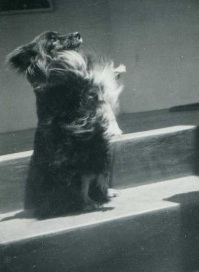
under the hose. I don’t think Mum was ever aware of that. Mrs Martin lived in the house next door on the Berwick Street side with her son, a very pleasant but quiet fellow in his 30s. He had served in the Navy during the war and a few years later at the onset of National Service I approached him for a letter of recommendation to allow me to serve in the Navy. He happily gave me one but warned that navy life was not as romantic as I imagined it to be. Mrs Martin became a good friend to Mum. I turned 15 years old in July while living in the caravan and I was sexually very naive. I had buried the image of Mum and Tiger in the further-most recess of my brain although it might immerge at times but not in any erotic manner. The thought of it filled me with disgust and somehow I was able to disconnect the incident with either Mum or Tiger. There was always sex talk at lunch time sitting on the lawns of Kent Street school. I could never be an active participator in the conversation – I had nothing to participate. They talked of ‘wet dreams’ but I had never had one. Some admitted to masturbation and I had no idea what that was. Word went around at one time that some boys had been caught masturbating behind the toilet block and I thought that would have to be such a heinous crime that they would be expelled. They were simply counselled by one of the masters and nothing more happened. I was certainly becoming interested in girls and in particular Rita Sarich and Marilyn Bunny. While living at the Dodd’s shop I had been to parties at the Mellincellis which usually finished up with kissing games. That at least broke down a few barriers but of course none of us knew, or at least I didn’t, how to kiss. I suffered one major disability. My voice would not ‘break’. I continued to have the voice of a ten year old and that did not impress the girls all that much. This worried Mum a good deal and a year or two later when it had still not broken she suggested going to a doctor about it, going on some sort of treatment. I refused. During that final year of school I made friends with Brian Smith. He had been in my class the previous year. He wasn’t well liked at school and was not part of the group of boys I normally had lunch with and I am not quite sure how we got together. He was quite a high performer, usually topped the class in mathematics, science and chemistry. He was one of the small group who opted for chemistry and perhaps that is how we came to be friends. He invited me to his house, quite a nice home. Mrs Smith was very friendly and he had two older sisters who tolerated me. Mr Smith had lost his life in the war. Brian was into all sorts of things but especially radio. He was disdainful of my crystal set although we fiddled with it a good deal and improved its reception with a battery somehow, or at least he convinced me that it was improved. His other hobby was photography and he had built a dark room and did his own processing. He had a Kodak Brownie box camera and took quite good photos with it. When I told Mum that I needed a camera, Tiger produced an old bellows camera, quite a good one but it took a photo twice the size of the Brownie box and film for it was much more expensive. Nevertheless, I used it a good deal. In that dark room we compared stiffies. His was bigger than mine and he told me how to masturbate, in fact that was the first time I had heard the word. Others called it ‘wanking’. We weren’t obsessed with it and I doubt whether my friendship with Brian Smith (he could be quite horrid at times) would have lasted long had he not invited me to come with his family on a two week holiday at Yunderup on the Murray River at its entrance to Peel Inlet south of Mandurah in January 1950.
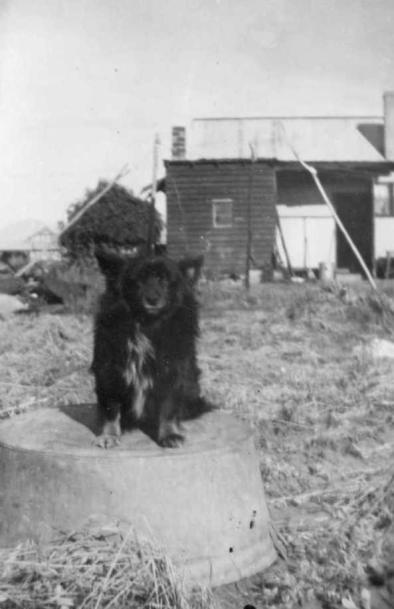
Year Nine at Kent Street High
Kent Street High was then what we would call today a ‘junior’ high school in that it had only the first three levels of high school finishing with the ‘Junior Certificate’ examinations. These were public examinations, conducted away from the school, at that time in Winthrop Hall of the University of Western Australia. Those who wished to proceed to the Leaving Certificate and entrance to a university or equivalent needed to go to Perth Modern School for those final two years. Some independent schools (non State) ran the full five years of high school. My class teacher in Year Nine was Mr Calderwood, a delightful old gentleman and a very good teacher. What actually made him a good teacher I am at a loss to say. In his unique way he seemed to make the subject matter interesting such that you wanted to know more. He was very patient and never criticised any student but encouraged them to do better and they did. Mr Calderwood was quite elderly and I think he retired two or three years after we completed our Year Nine. I continued with physics and chemistry and felt I was doing well. Physics comprised the study of heat, light and sound and mechanics and I found I could readily understand the principles and carry out the associated mathematics, especially using four figure logarithmic tables. Mr Moore would devise all sorts of practical experiments both inside and outside the classroom. I remember him taking the class down to the extensive school oval and with a pair of synchronised stop watches, both set going at the same instant at one end of the oval and then one ticking stopwatch taken to the opposite end with something with which to make a sharp loud noise, perhaps a tin can and a stick. The group with the tin can stopped the watch at the instant of striking the tin can and then those at the first end stopped their watch on hearing the sound. Remarkable, I thought. From that we worked out the speed of sound in miles per hour and it came surprisingly close to the text book speed – 670 miles per hour or thereabouts. It was the time when aircraft were starting to break the ‘sound barrier’. In the chemistry laboratory we would set up all sorts of apparatus – glass tubes and flasks with stoppers, Bunsen Burners and so forth demonstrating the properties of the primary elements. Of course there was quite a lot to learn – the chemical formulae, how the elements combined to form compounds and much more. Thinking back now I am surprised that our Kent Street High School laboratories were so well equipped. I generally enjoyed maths, especially trigonometry and Euclidian geometry, an exercise in mathematical logic – quod erat demonstrandum QED, ‘that which was to be proved’. Technical drawing was not my strength although I found perspective drawing interesting. Somehow my line work was never all that sharp often requiring erasing and given that, I wondered how subsequently I became a ‘junior draughtsman’. Our technical drawing teacher was a youngish ex-serviceman and he had had an eye operation that left him with a strange looking square pupil. I enjoyed wood work more and got on well with our fiery woodwork master, Mr Grantham. Towards the end of the year we were assigned to the making of an article of furniture. Mine was to be an oval side table made of jarrah and french polished. It turned out very well ensuring that I passed my Junior in woodwork. Our year nine class was about 50/50 boys and girls. In class we sat two to a desk and I sat with Keith Ruddock whom I have previously mentioned in the rear desk on the right hand side of the class room. Keith, a country boy lived with an uncle and aunt somewhere close to the school. He went back to the farm for all his school holidays and clearly that was to be his future on finishing school. His name seemed suggestive of his general appearance – he had a very ruddy complexion. He was a good student and especially neat in his work but he had a habit I found a little odd. Whenever we had a lesson his hand would be into his crotch rubbing his scrotum. Yet I was never conscious of his having an erection in the class room and once or twice I tried it but found it had no noticeable effect. Most of those in our year nine classroom were the same as in year eight and I have spoken of them previously.
Grandad dies
It was sometime in the middle of the year that Mum and I were wakened early one morning by a sharp rap on the door of the caravan and a voice calling ‘Mabel, Mabel’. It was Uncle Alex who had walked down from Bishopgate Street to tell us that Grandad had passed away in his sleep overnight. Mum asked how did it happen and Uncle Alex who may have been sleeping in the same room at the time said he had heard Grandad cry out – and that was it. I can only guess at his age, late eighties perhaps 87 or 88. He was a fit man for his age despite or perhaps because of his hard life. Grandad’s funeral took place a few days later. Mum appeared not to be particularly upset and thought that my school attendance was more important than attending the funeral. I missed him greatly – we were good mates. I have written his story as well as I know it and it is appended to this account.
Fair dinkum sex education
About half way through the year each student was given a brochure to take home to parents advising that a ‘facts of life’ movie was to be screened at the Theatre Royal in Perth. Year nine teenage children were encouraged to attend. It was to be for segregated audiences – girls one night and boys the next. Mum gave me permission to attend although declaring that I had no need for that sort of stuff. However, she agreed and signed to accompanying form and sent the money to the school. Just about all the boys in my class attended – all except Keith Ruddock who maintained that a film could not teach him anything because he came from a farm. No doubt he was right. I think we made our own way in by bus or tram – in those days the school didn’t arrange transport. We were all very straight faced, having been warned that any chiacking would send the lot of us home – it was meant to be very serious business. We met at a point with a teacher in Hay Street a little away from the theatre entrance and then at a signal we all filed into the theatre foyer. There had been a showing before ours and the theatre was emptying of boys who were making a few crude signs to our lot but any attempt to respond was immediately discouraged by a fierce glare from our accompanying teacher (I cannot remember who that was – female I think). The show started with an address from a male expert sex educator (if they had such people in those days) who was quite amusing and very quickly got down to our level of knowledge, even using some of the forbidden words. He quickly had our attention and then the serious business started with a series of slides showing how it was done (of course we all knew). He then moved on to reproduction, how babies were made and then the consequences of wanton sex – sexually transmitted diseases, syphilis and gonorrhoea with very lurid slides. Finally after a brief interval during which we were not allowed to leave our seats but could buy things from the venders traversing the isles with their trays hanging from a strap around the back of their neck – few did – a movie started, a black and white movie. The story concerned a girl from a good American family who met a young GI soldier at a party. The GI, also from a ‘good’ family had a large white convertible car and offered to take said girl home after the party. They had been dancing very romantically at the party. In the car he told her that he was about to be posted overseas and she could give him something he could remember while he was away and he would marry her as soon as he returned from the war. In a spirit of patriotism she complied and they made love, intercourse and all, on the back seat of the convertible. We didn’t actually see them do it; the camera looked at the stars while it was happening and then when it was over the girl was straightening her frock and hair. Off they went and the GI went overseas never to return. He was KIA. Instead of her giving him something to remember he gave her something she would never forget – a baby. Such shame! Her family threatened to disown her and the GI’s family denied their boy could do such a thing. In that unresolved state, the movie finished and we all filed out still very straight faced and caught our busses and trams home. We had each been given booklets printed in black and white on newsprint full of diagrams showing penises in situ and babies in wombs. Mum wanted to confiscate mine and we had been warned not to take them to school although some finished up in the play ground the next day. The girl’s booklet was much the same and there were a few of those circulating the next day also with a bit of swapping. My booklet disappeared soon after and Mum denied all knowledge of it with ‘you wouldn’t want that disgusting thing’.
‘Long-uns’
Throughout my three years of high school in keeping with all boys attending school I wore short trousers, that is trousers that came to just above the knee. Boy’s suits were made this way and a grey suit was the prescribed wear for the winter months. In the summer we wore ordinary khaki shorts and sandals with a white shirt although the suit came out for special occasions. Long trousers were simply not the order of the day. However, late in 1949 – it may have been after exam time, boys increasingly started turning up in ‘long-uns’. I had no such article of clothing and Mum was rather disdainful of the need, but one day she turned up with a parcel that contained a freshly dry-cleaned pair of silver grey self supporting trousers and said ‘try these on’. I did and they fitted perfectly. They were a pair of Tiger’s that were too small for him. I appeared at school for the first time in my silver grey ‘long-uns’. It was a proud moment.
End of year and the Junior exam
Finally the Junior exam was upon us. All written exams were conducted at the University of Western Australia in Winthrop Hall, a huge space with rows and rows of small one person desks. There must have been several hundred in the hall. It was quite daunting. About twenty invigilators roamed the aisles ensuring that no one cheated. On successive days I caught the tram into the city and then the electric trolleybus down Mounts Bay Road to the University. Mum would sit in the caravan anxiously awaiting my return. First English – two papers, grammar and composition (both OK), Geography and Physiography (OK), Physics and Chemistry (both OK), Maths A (not bad) and Maths B (a disaster – my best maths and I was sure I had failed). I returned to the caravan in a state of despair. I crashed onto my bunk – couldn’t talk to Mum, just stared into space and wept, finally falling asleep. I was awoken by a familiar voice, yet not so familiar within the context of the caravan. It was Mr McGrath, the headmaster of Kent Street High School – in our grotty little caravan. During my sleep Mum had gone to the school and Mr McGrath’s office. Incredible – he walked down to see me. He sat on the end of my bed and talked to me. I can’t remember all that he said but somehow he re-assured me that it wasn’t the end of the world. He left after giving me at least half an hour of his time. I don’t think I told anyone about that visit, certainly not any of my school mates. School came to an end in late November. Each year at Kent Street High in November there had been an end of year concert and display of school activities. I do not recall a great deal of what actually took place on these occasions other than the school choir performing with various soloists. One such soloist was a boy from my class, Ossie Sandalands who had a remarkable low soprano voice, contralto perhaps. Ossie (short for Oswald I presume) was of small stature and didn’t mix in all that well, not even in my own rather innocuous group of friends. He kept to himself largely and I do not recall seeing a great deal of him over my three years of high school. One might have thought of him as presenting a rather soft target to some of the bully types but that did not seem to be the case. In fact, there was little if any overt bullying at Kent Street High. At the time of leaving school Ossie’s voice had not broken in the usual sense and whether he continued to sing in the years that followed I have no idea. On these school open nights the various art and trade components had mounted displays of their year’s work. Final year woodwork items were displayed in the manual arts woodwork room including a selection of articles from the Victoria Park School where I had undertaken woodwork over Year 8 and 9. I was very proud of my occasional table piece French polished with my name on it. All sorts of devices were displayed in the metal work room, some close to being what one might call metal art. I rarely entered metal work area not having metal work as one of my subjects but I can recall the pungent smell of spirits of salt used in soldering that seemed to always hang in the air of that room. My own major contribution with others to the end of year open night was in the chemistry laboratory. I cannot recall who my partner was but the two of us had set up a complicated apparatus for producing sulphuric acid from the raw materials. Obviously Mr Moore had given us some help and supervised what we were doing and it was by far the most complicated arrangement in the lab that night. Many parents passed around the benches asking questions and I took great delight in explaining the process to them. If there was a single highlight in my three years at Kent Street High that would have been it. There were many other things to see in both the chemistry and physics laboratories. Just about every piece of equipment from a simple inclined plane to a static electricity machine that caused a spark to jump across two poles a couple of centimetres apart was on display with a student standing next to it explaining what it was and demonstrating it. The school open night brought year 9 to an end. There were a few small classroom parties; Mr Calderwood agreed to us having one and in the early afternoon we all departed. I personally felt a little emotional at leaving; maybe others did also however, some obviously did not feel that way. I remember holding my hand out to Keith Ruddock to say goodbye and perhaps to wonder whether or not our paths would cross again only to get a very brusque rebuff. It almost brought me to tears; I thought we had been good friends throughout the year helping each other in school assignments. I never saw him again and I suppose he returned to his parent’s farm to become ruddier and ruddier.
The freedom of a bike
My life in the caravan was greatly enhanced by my ‘Swansea’ roadster bicycle I had been given for Christmas 1948. Apart from being very useful in transporting the twelve volt wet cell battery that fired my Astor radio to the local garage for re-charging and picking it up two days later, it was my freedom machine. So long as I left a message on the fold down table as to where I was heading, Mum had no objection to my many solo excursions. Of course I visited my grandparents quite frequently if only because such visits gave me the opportunity to call on the Bunneys with Marilyn in mind although often it was only Graeme I saw. I have already mentioned the occasion when the three of us rode all the way to Araluen and there were other similar trips of lesser distance. But more times than not I would ride off to explore some of the hidden recesses of the Swan River, especially on the southern side. Point Walter was the western end of the very large river basin, Melville Waters where the river narrowed to enter its final stretch into Fremantle Harbour. West of Point Walter was Blackwall Reach accessed only by a winding sandy track from Point Walter. Blackwall Reach was the only stretch of the Swan River that was cliff, at least as far as I knew. The sandstone cliff was about 500 metres in length and no more than five to ten metres in height, plunging down into deep water. Although of sandstone, the cliff’s appearance from the river was quite black looking due to surface discoloration; hence its name. It had many small projections into the river and shallow caves that I enjoyed exploring. Arriving at the Reach I could strip off and plunge into the cool water, breast stroking along its base and climb onto and into the shallow caves and sit in solitude watching the occasional craft making its way down or up-stream.
Perhaps it was lack of access that at that time made Blackwall Reach so little frequented and I cannot recall ever being surprised by another visitor. Como Beach on the southern side of Perth Waters was a popular swimming location and this was where I had taken my first faltering strokes of unsupported swimming some three years previous. I had become quite a competent swimmer but never competitive despite some urging from others at school. Lying on the river beach at Como, perhaps buying an ice cream with my meagre pocket money, attempting to achieve something of a tan was a pleasant enough pastime although I think I was usually in the company of others. It was to be another year before I ventured to the surfing beaches of Scarborough and City Beach and by then Como had become passé to us mid-teenagers. My Swansea roadster bicycle with back-pedal break was to be my main means, if fact only means of conveyance for quite a few years until finally graduating to car purchase at the age of nineteen but more on that later.
Work experience
For the term holiday of two weeks in May I applied for paid work experience with the large rural retail firm of Sandovers. I applied in writing and was accepted and reported for duty on the Monday morning. I was assigned to the windmill and pump department that seemed to have a staff of about seven, both men and women. The boss was a pleasant fellow who took me under his wing and I was given a job of assembling pumps and motors onto a tubular steel frame having been shown what to do. There were lots of nuts and bolts to insert and do up. The connection between the pump and the motor was quite simple and I quickly mastered the job. It was clean work, everything was new and painted in bright colours of red and green. I was given a grey dust coat to wear while I was doing it and I felt pretty important with my leather pouch of spanners and one or two other tools. I found the general work environment very pleasant and I thought if this is what work is all about it is pretty good. There was lots of conversation going on around me between both male and female staff, all good humoured and jokey. I quickly learned that there had been a large staff party the Saturday before and the conversation centred around incidents that took place at the party – particularly those that involved senior staff. At one point while I was bending over my pump assembly with spanners clanking I heard a voice warn somebody to the effect ‘careful what you say in front of the young fellow – you might give him ideas’! So this is what the work place is like – not bad, everyone has fun and gets paid. After the first week I ran out of pumps to assemble and became a delivery boy. To Mum’s horror when I told her about it I was cycling around the city streets on a bicycle that had a small wheel at the front and a normal sized wheel at the back. Over the small wheel was a huge metal carry basket into which lots of heavy things would be placed to be delivered somewhere. Mostly I was picking up things to take back to Sandovers and making sure that the paper work was signed off in good order. That made me feel pretty important. The bicycle had a back pedal brake that more or less worked. There were no traffic lights in Perth in 1949 and most intersection had a policeman standing in the centre of the intersection with a whistle directing the traffic, Of course I wasn’t the only delivery boy in the city streets, there were many. The policemen on points duty were kind to us delivery boys and would often beckon us over to wait at their side and then send us on our way when it was safe. It was a week I enjoyed very much but it came to an end as did my two week period of paid job experience. I said goodbye to all the staff in the pump and windmill department who all had kind things to say and I left Sandovers with my £3.0.0 pay envelope and a letter saying I had done a good job.
Friendship And The Future
Having left the caravan and moved back to Bishopgate Street in early December I decided that I needed a couple of weeks work to earn a few pounds to get me through the Christmas period. Brian Smith whom I was at that stage seeing quite regularly had invited me to join his family for a two week holiday at Yunderup on the Murray River where it flows into the Peel Inlet south of Mandurah. I wasn’t too fond of Brian, however, he wanted me to come and the idea of a holiday away from the family sounded pretty good so I accepted. The holiday was planned to take place in late January. More on that later. Before Christmas I needed some paid work. Uncle Lennie was still working at the Bunning Brothers sawmills across the railway line and he said he would ask around. He came up with three weeks at the plywood factory which was also on the Victoria Park side of the railway line and only a fifteen minute walk from Bishopgate Street. I went over for a quick interview and was taken on immediately as a temporary junior. I started the next morning. The job was quite a contrast to the happy workplace at Sandovers. For their lousy £1.30s a week I learnt what hard work was all about. Nevertheless, I found the plywood production process interesting. The huge logs of Meranti were imported from Malaya and sawn into six foot, maybe a little more, lengths. Each log length went onto a big spindle with a six foot long very sharp oscillating blade and as the log slowly turned on the spindle the blade sliced a continuous veneer similar to taking paper from a toilet roll. Water played continuously onto the log and blade so that the veneers coming off were dripping wet. Of course some broke into pieces from one to several feet wide but that didn’t seem to matter. The veneers were then piled onto a trolley and this is where my job started. The trolley of veneers was then pushed over to the drying kilns and reloaded piece by piece into another trolley separated by wooden frames that acted as spacers. So first it was a rack, then a veneer, and then another rack until the whole load was about six foot (1.8 metres) high. It was then pushed into the very hot kiln, the door closed and allowed to bake for an hour or so. The kiln could take a number of these loaded trolleys and as each one went in another came out at the other end – very hot and steamy. That was my job. With another bloke we loaded a trolley, pushed it in and then loaded another trolley. At the opposite end the trolleys were allowed to cool off and then unloaded and the dried veneers went to the tables where they were put together with glue slid into a press to form sheets of three ply. I was a loader and unloader. It was all a very manual process. We had breaks for morning smoko and lunch and the fellows I was working with were a very different lot to the Sandovers staff. Talk was pretty ribald with plenty of descriptions of their sexual experiences – sufficient to make my hair curl. The one thing I remember about the plywood factory was the pervading smell of the drying sap of the Meranti veneers. It was very pungent and lingered in one’s nostrils for hours afterwards. I kept it up for the three weeks, finishing up just before Christmas.
1950: MY FUTURE - WHAT NEXT?
At this time what I was to do after leaving school became paramount in my mind and that of others. I had of course been thinking about it all year and we had from time to time had vocational talks. I recall a naval officer coming to the school to tell the year nine students about the ‘Fleet Air Arm’ and the role of navigators. That thought appealed but of course I would have had to continue on to get my leaving certificate and that meant going to Perth Modern School for two years. I was interested in becoming an industrial chemist but that too meant getting a leaving certificate and entrance to the University. Mum ruled that out; she said flatly that she could not afford to keep me clothed and fed for a further two years. In any case she did not believe that I had the brains to take it on. In our rather odd mother-son relationship she never showed much faith in my ability as a student or anything else for that matter. I don’t know that I had much faith in it also but that may have been because I was too often told so. I really didn’t know what I was going to do after Christmas. The general trend was to wait until the Junior Certificate results came out and the job advertisements for juniors started to appear in the papers. Living at Bishopgate Street was not particularly inspiring. Without Grandad there was just Grandma, and my two uncles Alex and Lennie. Uncle Alex went from one drunken bout to the next with periods of relative sobriety in between. He mostly slept in the rather tattered ex-army tent in the back yard or in the wash house. Grandma kept house surprisingly well and although she complained a lot she could be good fun. Together we listened to the radio serials each night as we had done previously. I had the end of the front veranda small though it was and that was my domain. I had a hurricane lamp for light and my crystal set. I read a lot and listened to the radio on my crystal set. I started gardening for vegetables in the back yard again as I had previously done with Grandad, I maintained my friendship with Graeme Bunney and through rather too frequent visits to the Bunney home kept in touch with Marilyn but soon realised that she was heading in another direction. Following her father’s interest in photography she had started working in a photographic place in the city and I guess that opened up a whole new world for her. I am not sure where Mum was at that time. I don’t think she was staying with Grandma and I can only recall her calling at Bishopgate Street once or twice a week although often spending all day there. Christmas came and went and I can’t recall anything particularly remarkable about it. But there was another major incident with Uncle Alex. I didn’t witness this one but having arrived home from somewhere for lunch I found Mum in a state and Grandma in tears. Uncle Alex had gone off somewhere. Mum simply said we have to leave we will go to Tiger. I was bewildered by all this – how could we go to Tiger? He was working in a railway construction camp in the bush but go we did. The camp was somewhere east of Perth on a branch line out from Chidlow or thereabouts. We could get the train there. Mum threw a rough selection of clothes into the old Globite case and with Mum I lugged it down to the Carlisle railway station. We caught the suburban train into Perth and then another train on the Great Eastern line that took us to the nearest station to where Tiger was working. I can’t be sure now where that was. It was very late afternoon when we arrived and it was a little while before Tiger arrived in the Essex Super-six. He seemed less than happy about the arrangement but said he had fixed something up. We reached the construction camp site after a short drive. It was all pretty rough; a bulldozer, one or two other items of earth moving equipment, a couple of trucks and three or four tents. He had found a couple of stretchers for us to sleep on with a few old army blankets well impregnated with dust. There were a few other fellows there but they kept away. Perhaps Tiger had moved the tent thirty or forty yards from the others. We may have picked up some fish and chips from somewhere for tea and Tiger boiled the billy on a rough log fire kept going with occasional glugs of diesel fuel. The camp smelt strongly of diesel fuel and dust. I slept on the stretcher outside and in the morning Tiger cooked ‘breakfast’ on the smoky fire, sliced ‘camp pie’ and an egg fried in a very black frying pan on unbuttered bread. Perhaps it was novel. During the day I went wandering – exploring – visited the construction site and watched for a while then wandered along a track into an adjacent pine forest. About a mile from the camp I found a large dam amongst the trees. It looked inviting and I stripped off and splashed around in the water and swam a few strokes. At least I was able to wash off some of the dust. I stayed there most of the day, perhaps, returning to the camp for lunch and to see how Mum was. Lunch may have consisted of bread and jam or Vegemite and water. It was OK. Mum had been reading (she was a great reader of novels). I suggested she come to the pool with me in the afternoon but she declined. That evening we may have driven into the town to eat and the following day was much the same as the first. I think Mum and I stayed there of two or three days and returned to Perth with Tiger at the end of the week in the Essex Super-six. Presumably we called in to Grandma’s. Grandma said that Alex had left so we moved back in and that is largely where I stayed throughout 1950.
Yunderup
By mid January I was looking forward to my two week holiday with the Smiths at Yunderup. Mum had been in touch with Mrs Smith and may have offered to pay her for my keep. From the time of returning to Bishopgate Street to the commencement of the holiday I was spending most of my time with the Smiths and Brian and I often rode our bikes to one or two places, usually intent on having a swim. At this time Tiger was working on a railway job near the Rivervale station, not far from the river. He suggested that Brian and I might like to visit the site for a ride on the bulldozer. We did so one afternoon. We didn’t actually have a ride but sat in the driver’s seat and took a few photos. Afterwards we took our bikes down to the river, disrobed and plunged it. We had hardly done so when a familiar car pulled up and out climbed Mum and her friend Bunny Hyde. I had met Mrs Hyde on a number of occasions and she was quite good fun and a good friend for Mum. She was quite a competent water colour artist and that was the purpose of her being there – to paint a quiet stretch of the Swan River. But there was Brian and me in the all-together in the river. Brian showed great concern even after Mrs Hyde called out ‘don’t worry we won’t look’. Brian had a rather pudgy build which he didn’t like to display and some of the boys at school called him fat. His interest in sport was even less than my own. Anyhow, after a while we climbed out and retrieved our clothes and dressed. Mrs Hyde had her easel up and had started to paint with her box of water colours. I remember looking over her shoulder and being quite impressed by what she had accomplished in such a short time. Mum was sitting near her on a rug on the ground. Brian remained concerned that his mum might find out. The Smiths were very straight laced.
The time for departure to Yunderup finally came. I am not sure how we got there, probably by bus to Mandurah then on another small bus to Yunderup. With Mrs Smith and Brian was Brian’s older sister and her friend. They were generally OK and they ignored my presence which didn’t really worry me. I was pleasantly surprised by the holiday cottage. It was a small weatherboard place with a front porch, kitchen, bathroom and a couple of bedrooms inside. Brian and I slept on the front porch. A pathway led straight down to the river and a jetty, a distance of maybe 20 metres. At the jetty was a rowboat which was to be our principal means of conveyance during our time there. The general store was on the opposite side of the river and upstream about a hundred metres or so. We rowed there to get our supplies and the morning paper. I recall my time at Yunderup being very pleasant despite having to put up with Brian’s jibes. We fished together both from the jetty and from the rowboat on several occasions rowing down the river estuary and into Peel Inlet. The Murray River broke into a number of distributaries before entering Peel Inlet creating several river islands one of which had the appealing name of Linga-Longa Island. If one rowed too far out into the inlet, which was a fairly broad stretch of water it could be difficult relocating the river entrance again in that very flat landscape. Did we catch any fish? I believe we did. Fish were fairly abundant, mainly whiting, garfish flounder and flathead. Also the occasional crab – quite large blue manor crabs (what we call sand crabs here) would come in on a hook. We may have had a crab net to drop off the end of the jetty. Our fishing gear was fairly primitive – simple handlines, no rods and reels. Sometimes Brian’s sister and friend came out in the rowboat but never for long and they weren’t interested in fishing and handling the yukky bait. It was while I was at Yunderup that the Junior examination results came out, published in the West Australian newspaper. The newspapers would arrive at the general store about nine o’clock in the morning and Brian and I rowed over to the store straight after breakfast. The papers arrived and having purchased our copy opened it to the relevant page Brian first and he played a typically silly game of not letting me look but I did and to my delight I passed all eight subjects. So did Brian of course and I don’t think there would have been any doubt that he would. We rowed back elated – at least I was and Mrs Smith and the girls were quite congratulatory. The next day a telegram arrived at the general store for me from Mum and Tiger expressing their congratulations. Brian wasn’t at all impressed – no big deal in his mind if that expression applied at that time. The holiday came to an end and we returned to Perth, me back to Bishopgate Street. I visited the Smiths once or twice after that but I really had had enough of Brian Smith’s company. After my final visit there I came back to Bishopgate Street and burst into tears on seeing Mum and said I was never going back. I have no recollection what brought that on. Mum was nonplussed – I think I just said I can’t take his jibes and hurtful comments any longer. We had an accidental meeting some months later. Brian had gone into some sort of apprenticeship in radio mechanics – I think that is what it was called at that time. He was typically negative about my direction and I think that was the last I saw of him – I had developed friendships elsewhere.

An unexpected career
Having got my Junior Certificate I started thinking earnestly about some sort of career. It was expected of boys that they should do so. I had sounded Mum out some weeks before about continuing on for a further two years to do my leaving but she had said no – I needed to get a job. When the Junior Certificate marks came out a week or so later, mine were nothing to boast about. Mum’s advice was burn them although some subjects, physics, chemistry, English and geography were quite good – in the high seventies or better. Maths had let me down again. I still had an ambition to take on chemistry and to that end I had a conversation with Mr Bott who had a pharmacy on Albany Highway Victoria Park. I had heard that one might get into chemistry (we call it pharmacy these days) by working in a chemist shop and undertaking night school, however Mr Bott in his pompous way made it clear that such was not even a remote possibility. Soon after my father’s death Mum had a letter of condolences from Mr Kessel, the Conservator of Forests (Head of the Forestry Department). I never saw the letter and I suspect she didn’t keep it. Mum was quite bitter about the Forestry Department and their meagre payout on Dad’s death. Apparently Mr Kessel assured Mum that there would be a job for me in the Department when I left school – I guess that was the way things worked in those days. For some reason I never followed up the offer and I only recall Mum mentioning it once. It might have been Tiger that drew my attention to an advertisement calling for applications to be a junior draughtsman in the civil engineering branch of the Western Australian Government Railways. ‘Draughtsman’! – Technical drawing was not my strength at school. With little else in the offing and with a good deal of prodding from Mum who was convinced that the job would be mine for the taking because of Tiger, I applied. ‘Because of Tiger’ – really; although I believed her at the time. I was called in for an interview and fronted up to a panel of what seemed to me to be very old men. This took place in the office of the Chief Civil Engineer in Wellington Street opposite the railway yards. It was a building I was to come to know very well indeed. The interview panel comprised the Assistant Chief Civil Engineer Mr Cedric, the Chief Clerk and one or two others. It was very formal in a large office, rather dark and I felt very insignificant. There were a number of applicants and my interview was to take place at 11am. I somehow lost track of the time and arrived late. I had on the best clothes I had; long trousers that had been Tiger’s, shirt, tie and a Donegal tweed jacket that came from somewhere. Running late I had missed the bus I intended to catch, waited half an hour to catch the next one and then arriving at the city bus terminal in Adelaide Street in front of Government House ran all the way down to Wellington Street on nearly the diagonally opposite corner of the city. I arrived hot and breathless. Thankfully the interview panel was still in session and after a short wait I was led in. My interview took place and I departed feeling very unsure of the likely outcome – there were so many applicants. A week or two later I received advice that I had been successful. I was in but with some misgivings. Was this what I really wanted? However, I didn’t express my doubts to Mum or to anyone else. Mum was convinced that it was Tiger’s influence that got me there. I sometimes wondered why she had so little regard for my own capacity, but – I was prepared to accept that Tiger got me the job. I started on a salary of two pounds and ten shillings a week. I had a further interview with the Chief Draughtsman, Mr Letch, a very friendly fellow who was in charge of the drawing office up stairs. He said that I would be expected to commence an Engineering Diploma at the Perth Technical College. There were three Juniors taken on at that time and perhaps we were all there together for that initial briefing, Ron Chamberlain (whose great interest in life was horses – race horses, he ‘strapped’ at Ascot racecourse each Saturday), Alan (I cannot remember his surname) who was the son of the Station Master at Northam and me. I duly enrolled at the Perth Tech in St Georges Terrace in the Engineering Diploma course and attended my first lecture there soon after.
ENTERING THE WORKFORCE
A railway life
The Chief Civil Engineer’s (CCE) building in Wellington Street was impressive. Perhaps it had a past history because it could not be seen to be purpose designed. It was two storeys with a wide colonnaded balcony fronting Wellington Street on both levels. The second level balcony had been partly enclosed to provide more office space. On entering there were large office spaces on either side, the Chief Civil Engineer’s own office to the left as well as most of the clerical staff. The CCE was Mr McCullough, an elderly dignified man with a pronounced stutter. Fronting the foyer was the staircase to the second level, a three stage staircase with a continuous highly polished banister without obstructing posts. Sliding down the banister was strictly forbidden, probably with good reason, but it remained a constant ‘dare’ to the younger members. On the top level to the right of the staircase was the large drawing office with rows of benches – four or five rows – with drawing boards with tee squares and all sorts of drawing equipment. Some had draughting machines attached to them. There would have been some twenty five or thirty workers in the room and I soon learnt that many were qualified engineers. In effect they really were working cheek by jowl. There was a smaller adjoining room with another five engineers and then more on the enclosed veranda. Mr Letch, the Chief Draughtsman whose first name was Lyn, was in charge of the drawing office and occupied a conventional office table in the corner of the room. Although ‘Chief Draughtsman’ by appointment I assumed he was an engineer because he seemed to be part of any discussions that took place with the CCE and others. They weren’t all engineers, some were simply draughtsmen and several women called ‘female tracers’. Some of the ‘draughtsmen’ were architectural draughtsmen and they undertook the design of all forms of building from toilet blocks to station buildings. You could tell the architectural draughtsmen by their style of hand lettering. It was upright and somewhat stylistic. Engineers and their associated draughtsmen did standardised sloping lettering. There was only one telephone to service the whole drawing office apart from the one on Mr Letch’s table. It was located in a sound proof telephone box and it was the duty of the junior located nearest the door of the telephone box to answer the telephone and take messages to whomever the call was for. Engineers and others also had to use that telephone box to make outgoing calls and it was a common sight to see such persons taking into the confined space of that telephone box an unwieldy roll of plans. Sometimes when a number was difficult to get one of us juniors would be directed to get the number and then call the engineer over once the line was established. In 1950 all telephone exchanges were manual, operated by a female (usually) telephonist. In phoning large companies one often had to go through more than one exchange. Trunk calls, that is, outside the Perth area, were banned but the Railways had its own telephone system and it was possible to contact any railway building without going through a PMG exchange. I recall once in making a call for one of our engineers and having gone through a couple of exchanges finishing up with the Perth City Morgue. That kept everyone chuckling for a while. Inside the door to the drawing office to the left was a notice board and a ledge on which sat the sign-on book. On entering the drawing office at the start of work, one signed on adding the time of signing. At precisely 8.00 am (the required start time) a line was drawn across the page so that those arriving late had to sign below the line, again entering the time of signing as well a reason for being late. The signing-on routine applied to all staff, senior and junior and at 9.00 am the book was removed and taken to the Chief Clerk. People who were consistently late would receive a ‘please explain’ known as a ‘bluey’. It became common practice for the senior staff (who rankled at having to ‘sign on’) to write as their reason ‘unavoidably delayed’. Of course we juniors rather cheekily followed suit with ‘unavoidably delayed’. The practice ceased after some time when a notice appeared on the notice board signed by the Chief Clerk stating that use of that expression was to cease forthwith. I started ‘work’ on the following Monday reporting again to Mr Letch. I don’t think I could imagine what I would be doing at ‘work’ but that dilemma was soon resolved. Before I could be allowed to touch any sort of plan I had to be able to have acceptable hand lettering. So for three months I practised hand lettering on a drawing board on large sheets of cartridge paper on which first I had to rule up guidelines. This was made easy by a little clear plastic device (a hand lettering guide) full of holes into which one inserted a sharp pencil and slid the device along the straight edge of the tee square, then with pencil into the next hole repeating that operation to finish up with three lines the right distance apart for lower case lettering. At first I lettered in pencil until it was deemed good enough and then I graduated to black Indian ink and pen nib holders using nibs of various sizes – croquil for fine lettering then 202, 303 and 404 nibs. All of this was over a period of three months and if it was boring I didn’t seem to mind.
The Juniors
We three, Ron Chamberlain, Alan and me, as the most recent juniors took it in turns to make the morning and afternoon tea and coffee at 10.30am and 3.30pm. There was a small tea room with sink, bench, large enamel tea pot and large hot water urn which had to be turned on in time for the water to boil at exactly 10.15. Each of the staff had their own mug or cup identified with their name. These were collected at 10.15 and lined up on the bench in the tea room. A list showed whether the owner had tea, coffee, milk or sugar (number of spoons). Those having coffee would have already charged their cup with Bushells or Robur coffee essence (Nescafe hadn’t reached Western Australia at that time) and so the process started. At precisely 10.30am each of the persons in the draughting room was to have their tea or coffee with or without milk and sugar at the side of their draughting board. Ten minutes was allowed for morning tea. Following that, mugs and cups were collected and washed in the sink in the tea room and then delivered back to the owner. The same operation took place at 3.30pm. It was a daunting task and sometimes a mistake could occur. Of course visitors had to be accommodated as well so most had a spare cup or mug for such eventualities. Then there was the lunch order. At about 9.00am one of we juniors traversed the room noting down orders and collecting money for lunch from the sandwich lunch shop in Murray Street, about two blocks from the CCE. The shop would prepare the individual orders placing each one into a paper bag with the orderer’s name on it and we would collect the lunches at midday and pass them out. It was quite an exercise in accounting because no one ever had the right money and change had to be given. On average there would be about a dozen to twenty lunch orders since many brought their own lunch to work. On one occasion I found I had lost a one pound note and had to replace that from my own pocket – out of my hard (or not so hard) earned pay envelope of £5.0.0 per fortnight (less tax). In no way did I consider this at all unfair; it was my fault and it was a lesson I needed to learn. The salary for an assistant engineer at that time was £1,040 pounds per year and for a draughtsman £700 to £800. With three of us, tea and lunch duties occurred for one week in three. Sometimes we might be prevailed upon to pay a bill or something similar but Mr Letch put a stop to that practice since often amounts of £10.0.0 or more might be involved. So we got on with hand lettering practice, answering the telephone going to the plan room to bring a large folder or roll of plans to one of the engineers (less than engineer they had to get their own), delivering important envelopes to Railway central office above the Perth Railway Station and other miscellaneous tasks. The plan room also carried a number of items of special equipment and quite early in my career I was sent to the plan room to ask for a long weight for one of the engineers. After waiting for half an hour wondering why on earth it was taking the plan room staff so long to bring it from their back room I suddenly realised that a long weight was really a long wait! At about that point there were lots of chuckles from behind the plan room counter and someone was despatched from the drawing room to bring me back. Needless to say I felt a bit silly.
Draughting and technical tasks
After three months I was introduced to my first truly technical task for which I had been employed – the colouring up of plans with water colour paints. But first I should explain a little of the plan production process. Plans created by draughtsmen and engineers in pencil were traced off in black Indian ink by the female tracers. We had three or four of these; a couple were middle aged ladies who were very good and fast in their work. The medium used was tracing linen, a blue woven material (not really linen, but cotton) impregnated with some sort of filler that made it translucent and firm with an excellent draughting surface. Sometimes for ‘rough work’ (nothing was all that rough) tracing paper was used.
Plans generally measured the size of a drawing board (‘double elephant’ size, 42 inches by 28 inches – 105 cms by 70 cms) but some were larger and some were smaller. Railway formation plans showing a longitudinal section of the track were on long rolls. Having achieved a full trace of a plan it then went to the plan room where it was copied by the dyeline process onto either dyeline paper or dyeline linen, the latter similar to tracing linen but quite thick and fully opaque. Dyeline paper and linen is a light sensitive medium allowing the image on the tracing paper to be transferred to the dyeline material. Then back to the draughting office with the copy and out with the water colours and brushes. Railway marshalling yards were plotted at a scale of one inch to fifty feet. A railway track of 3’6’’ gauge (107 cms) would plot at 1/8th inch wide (about 3 mm). The space between would be coloured ‘Prussian blue’. Buildings were in sepia, hard standing in orange brown, lawn areas in mid green, water features in French blue or aquamarine and all new work in magenta. New line work was ruled over in vermillion, mixed into a treacly consistency such that it could be applied with a lining pen. The resulting product can only be described as ‘pretty’. Of course we juniors weren’t let loose immediately on large complicated plans but as time passed and we found we could apply an even colour wash we undertook plans of increasing complexity.
Colleagues and friends
Of my junior colleagues Ron Chamberlain applied himself conscientiously and undertook the Tech College Diploma with diligence. He had a different educational background to me and our paths rarely crossed at the Tech. Alan did not have his heart in it but he was a pleasant fellow to associate with. He generally caught the train back to Northam each weekend. He was to throw it in in about our third year and given his general dislike of the role which he didn’t take all that seriously, I was surprised that he stayed as long as he did. I suspect he was acceding to his father’s wishes. Ron’s other interest was at Ascot as a strapper (tending and grooming the race horses). On one occasion he arrived at work after a few days off with the lower half of one of his ears missing – bitten off by one of the horses. The incident didn’t seem to diminish his interest in horses. Then there was the ‘class’ above us, the juniors that had been taken on the previous year or before. Peter Tourney was one. He tended to bounce us juniors a good deal and I generally considered him unfriendly although three or four years later we became quite good friends to the extent that he invited me to his wedding (I went). Robin Vickery was something of a playboy, good looking and a hit with the girls. Nevertheless he was good at his work; in fact he and Peter were excellent and skilled draughtsmen. I think both had completed their Leaving Certificates. Robin’s father was well up in the railway hierarchy in the accounts branch (known as the Office of the Chief Comptroller). Then there was Alex Hanley. He also was something of a personality. He also must have had a Leaving Certificate. I never quite knew what Alex’s job was; he seemed to be in and out of the office quite a lot. Another was Doug McDougal. Doug was a very nice fellow who was never less than helpful. He was a red-head with very pale skin and very prone to sunburn. Doug’s mark of distinction was the neck ties he wore to work – very wide featuring a prominent ‘loud’ design, sometimes hand painted and sometimes rather lurid – and tied with a huge Windsor knot. I think Mr Letch at one time might have suggested to him that he should tone them down a bit because he appeared to do so. I developed quite a friendship with Tony Holtham and his sister Robin, known as ‘Rio’. Tony was several years older than me and Rio even older. Tony and Rio had a great interest in all forms of classical music and had a great record collection. Long play records had only just come on the market. Tony worked for Mr Milner, an assistant engineer responsible for railway housing and train staff buildings such as barracks for train staff. Mr Milner was developing a catalogue of plan drawings of every type of railway house, barracks or similar. There were many and every one seemed different. With some exceptions most of the houses seemed quite primitive often located at lonely railway sidings throughout the very extensive country railway network. Rio worked for Mr Ward Diamond, a rather rotund gentleman whose responsibility was the leasing of railway land, usually close to a railway station for commercial development. I never thought of Rio as a potential girlfriend, perhaps more as a sister. I maintained a correspondence with her for some years after I had left the Railways.
Other more senior officers I came to know and to whom I was assigned for short periods in the years that followed were: Mr Rowbothan, an engineer, doing all sorts of engineering design. He often had the CCE at his table discussing aspects of design (I assumed). Mr Vic Hautin was a mechanical engineer and responsible for the acquisition of all heavy and light machinery from bulldozers and graders to small portable generators and motor driven rail trolleys. Much of the heavy earth moving equipment at that time came from war disposals. In that role he knew Tiger quite well. His assistant was Alan Cooper who was a recent returned soldier and had a few problems. Mr Keith Aquino an Anglo-Indian from the Indian State Railways who came to Australia at about the time of Indian independence was involved with rail design. There were a number of these gentlemen in the Western Australia Government Railways including the Chief Commissioner (an Englishman) and an Assistant Commissioner, an Anglo-Indian. It was said that there was conflict between these two since both carried some ‘baggage’ from days of the Raj. Apparently it was the ‘Anglo-Indians’ who just about ran the Indian railway system. Rail design seemed to generate numerous cross-section plans of rail; I hadn’t realised there were so many types of rail ranging in ‘weight’ from 45 pounds per yard used on sidings and some country lines to 80 pounds per yard for main lines. Rail design included also fishplates used for joining lengths of rail and sets of points and crossings and all the components. Mr Moon was a relatively young engineer or architect, I was never sure which, who tended to treat us juniors with some disdain, particularly when we got his lunch order wrong. Frank Bussell was another younger assistant engineer who also had a war record. He was very pleasant to us juniors but it was evident that he had a drinking problem. I heard sometime later that he had proposed marriage to Robin Holtham but she turned him down on the basis of his drinking, at least until he could overcome it. They were never married. Of course there was all the down stairs clerical staff from file boys to typists (female) and clerks of all sorts including the Chief Clerk who was quite high up, a rather vinegary person I was inclined to avoid. There were many others whom I remember quite well and perhaps their names will appear as this account develops.
Perth Technical College
I threw myself in to my engineering diploma course with quite a deal of gusto. In my first year I undertook Practical Mathematics 1 and Engineering Physics gaining an ‘A’ pass in both subjects. I was rather astonished at the way this was received in the office. I was roundly congratulated by all and sundry including the rather vinegary Chief Clerk down stairs. I attended the college two nights a week and Saturday mornings for practical laboratory work which I particularly enjoyed. I tended to attribute my success to the excellent teaching in my Year Nine at Kent Street High School from my class teacher Mr Calderwood and Mr Moore, my physics and chemistry teacher. During that first year of work and night school I rode my bike to and from work sometimes catching the bus in wet weather. From Bishopgate Street, down to Albany Road then dodging cars, other bicycles, trams, including the slippery tram tracks that could throw you off if you weren’t careful, across the Causeway and into and around the city to Wellington Street, varying the route from day to day. Cycling home from night school was often a drag but had to be done. At first Grandma would have a meal saved for me but as time passed I started to buy tea at the college canteen before the start of class.
The Railway Institute
The Railway Institute was to become very much part of my life. It was and probably still is a remarkable organisation. There are Railway Institutes in most if not all Australian States. In Western Australia the Railway Institute was in Wellington Street between William and King Streets opposite the railway yards. It was an old single story building of substantial construction. It had an excellent library of both general and technical reading that I frequented at least weekly. To the rear there was a large hall with a stage where all sorts of activities took place. I was to play badminton there in the evenings and learn square dancing. The Railway Institute was also responsible for railway education. At an early stage in my first year, 1950, I was advised by Mr Letch that I should commence my railway education and enrol for the subject Permanent Way and Platelaying - Preliminary. ‘Permanent Way’ is the railway name for the principal track, not including offshoots and sidings. Platelaying refers to the laying of the track although it is a definition I was never sure about. I undertook the subject and passed the written examination in October 1952 with the creditable score of 81%. The subject was based largely on Rules and Regulations, quite a comprehensive tome as well as subject notes from the Institute that covered a range of technical information about railway track construction. I then embarked on Platelaying – Advanced and passed that in October 1953 again with 81%. In fact, I found the examinations quite easy and I received a very fancy certificate for my efforts. Had I continued the next subject I would have taken was ‘safe working’, all about the railway signal system and train running although some of that was covered in Advance Platelaying.
Bishopgate Street again
I continued to live in Bishopgate Street a situation that I would have liked to change. My salary of two pounds and ten shillings, five pounds each fortnight – we were paid fortnightly – with small increases as the years passed really didn’t permit me to go elsewhere. Grandma was never less than kind although I recall becoming increasingly impatient at having to listen to her detailed account of her aches and pains. Mum wasn’t living at Grandma’s at that time although she was often there at weekends and I can only assume that she was staying at one of her friend’s homes. I wouldn’t like to imply that she showed little interest in me or my work and perhaps she was proud enough that I had a ‘career’ job even if she believed that it was Tiger who got it for me. She always asked if I was keeping up with night school and study and I constantly assured her that I was. She often smelt of alcohol and I was becoming increasingly concerned that she was heading in the same direction as my uncles and aunts. I knew that she often spent Saturday afternoons in the lounge of the Carlisle pub with Tiger and with some of her women friends all of whom were given to over-imbibing. I had severed my friendship with Brian Smith with little regret and I found I was seeing less and less of the Bunneys. Marilyn had started her work in a photo shop somewhere in the city and occasionally I caught the same train as she and we would talk a little. She was developing work place friendships much as I was and there was not much common ground. I continued to suffer from a painful shyness when it came to girls and at the age of sixteen my voice had not broken and gave no indication that it was likely to do so. I occasionally saw Graeme Bunney then in his first year of high school. I had moved on and given the age difference (as teenagers three years were significant) we had little in common. During that year Uncle Lennie was living at Bishopgate Street and working at Bunning’s sawmill. His routine had not changed and he was no problem to me. I had my end of the front veranda and spent most of my time there doing my study, both for my diploma course and railway certificate, in the light of a hurricane lamp. Uncle Alex came and went and sometimes there would be name calling arguments that I kept well clear of. I gained some respect for Uncle Lennie who could intervene on behalf of Grandma who by any measure could only be described as a frail little old lady. Frail though she may be she prepared all the meals and almost daily walked up the street to Mr Robert’s shop for supplies. Sometimes on a Saturday morning I would do the weekly shop for her. I continued to tend my vegetable garden in the back yard but without Grandad I didn’t pull the cart around the streets selling vegetables and eventually I gave up on the garden. I paid Grandma something from my salary, maybe one pound each payday and I can only assume that Mum was also contributing financially to my upkeep – or was it Tiger? Mum had been successful in getting a small widow’s pension to top up her very small superannuation payment but I suspect it was Tiger who kept her in most things. She had the lump sum payment she had received following the death of my father and as far as I knew she endeavoured to keep that intact – about £1200 I think. She liked to dress well and occasionally splashed out on a new outfit. When the ‘new look’ came in in about 1949 or 1950 with dresses half way down the calf she had bought a brown velvet dress which I think was quite expensive. A little later she bought herself a fur coat. It was very beautiful, made of small rectangles of rich brown fur. It was known as a ‘Lapan’ coat which I learned was the French word for rabbit.
The Coverleys at Kelmscott
From the time the Coverleys left Arrino and bought the orange orchard at Kelmscott I became a frequent visitor, generally cycling there from wherever I might be living, most likely Bishopgate Street. Earlier, before I had my bicycle I was fairly dependent on Mum and Tiger driving out in the Essex Super Six. Tiger was not keen on these visits; I don’t think he found Uncle Don very easy company. Mum and I may have caught the train to Kelmscott a couple of times, after all, Kelmscott was on the same suburban line as Carlisle but once I had the bike I would visit without notice whenever the inclination took me. Robin had become quite a tall girl, a Coverley trait and we got on very well. Uncle Don was always working hard in the packing shed and Aunty Thora confined herself to household duties and I suspect, did all the accounting. She was always available for a lengthy chat, seemed interested in what I was doing and I found her very pleasant and easy company.
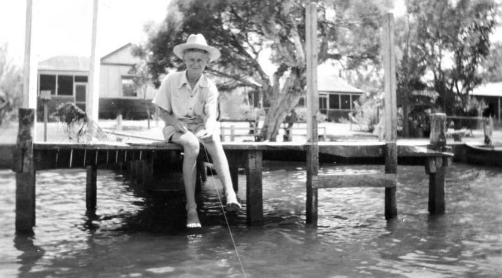

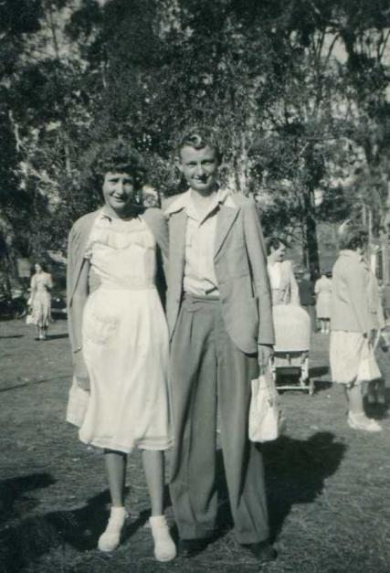
During one school holiday in 1948 or 1949 I spent two weeks with the Coverleys and it was a very pleasant time. I had wondered whether the Canning River might harbour marron, (a fresh water lobster found in Western Australia) such as I had often caught in Collie. The smaller version of the marron was the gilgie (called yabbie in the eastern states). I had spotted holes in the bank of the Canning River that looked like gilgie holes, maybe even marron holes. I obtained sixpence worth of meat off-cuts from the local butcher and fashioned a net on the end of a long stick, tied a couple of pieces of meat at the ends of two lengths of string and with Robin looking over my shoulder, dropped the meat into the water tethering it to a bush on the bank. After some minutes a nice big marron emerged from a hole in the bank and took hold of the meat. Giving it time to have a good gnaw I slipped the net under its tail, the marron flicked back (as they do) and into the net. I had it! Wild with excitement we both ran up the driveway past the packing shed with the netted marron calling out at the top of our voices and giving poor Aunty Thora a huge fright thinking that one of us had fallen in and come to grief. Nevertheless, overcoming that, both Uncle Don and Aunty Thora shared our excitement. That was to be the first of many marron caught along the bank of the Canning River and eventually the butcher got tired of supplying off-cuts of meat for sixpence. Also I fashioned a snare on the end of a long stick – a piece of fine wire in a slip loop like a lasso – slipped under the tail of the marron and presto the marron flicks back and the loop tightens around its tail – well and truly caught!
For me it was quite a memorable holiday; sometimes relaxing with a book or Richards Encyclopaedia, which I found in the Coverley’s bookcase, sometimes marroning or gilgieing and sometimes playing board games with Robin, or just talking with Aunty Thora. Aunty Thora was someone I could confide in more than anyone else and that continued for most of my teen years, at least until they sold their Kelmscott orchard. Sometime in about 1951 Aunty Thora invited us to come to the Kelmscott show. Kelmscott was a sufficiently rural community to boast of an annual show along the lines of the Royal show. There was an unstated reason for the invitation which wasn’t divulged until after our arrival. Cousin Robin was quite excited and was anxious to get us into one of the pavilions, the one that featured handicrafts and home ware. We followed Aunty Thora and Robin in and to a display featuring dolls and dolls clothing. The surprise was one of the beautiful dolls that Mum made during our Collie days and had given to Robin some years before had won first prize. I suspect that Aunty Thora had kept it from being a play doll because it was still in perfect condition. It was certainly a beautiful doll, flaxen haired with a beautiful dress over a frilly pfetticoat and knee length lace drawers. It had a needle-worked face. Mum was surprised and delighted as indeed we all were.
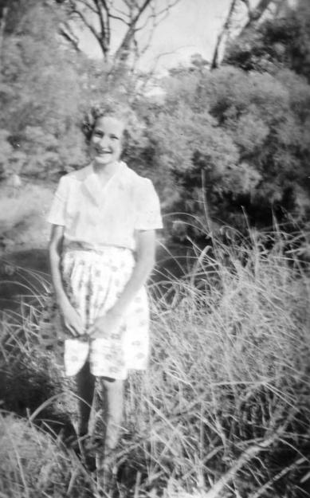
The Kentex Club
It was sometime in 1950 that I developed a friendship with Jim McLaughlin. Of course I had known Jim at Kent Street but he was in the all boy’s alternate class to me and we were never friends. He lived with his parents in Rathay Street only a few doors towards Albany Road from where I lived with Mum in the caravan and towards the end of that final year of high school when often there would be a group of three or four class mates discussing the inevitable subject at some chosen point along Rathay Street Jim most likely would have been part of that group. Perhaps it was with the formation of the ‘Kentex Club’ that we got together into a friendship that was to last a lifetime. I am not sure who was the initiator of the Kentex Club. It might have been Colin Aubrey who was something of a leader in our class group. It had the sanction of the school and I recall an occasion when I had an appointment with Mr McGrath the headmaster to tell him of the development and enlist his support. I have no idea what we talked about and in retrospect I am a little surprised that I had the courage to approach him. It was by appointment and I can’t recall quite how I arranged it. The Kentex Club (to me it sounded like a brand of toothpaste) met monthly in the Church of England hall. The rector was a youngish athletic fellow who coached the school rugby team and was very supportive. What did we do on these club nights? I recall that we had interminably long fairly formal meetings about nothing much at all. We arranged weekend outings and at one time a dance night. After the ‘meeting’ we played a few indoor games and sometimes a paper-chase outside. I think Marilyn Bunney came to a few of our club nights. Also there was Barbara Hetherington who had long tresses of curly blonde hair (surprising I thought because she came from an Italian family who owned a fruit and veg shop). Rita Sarich was an attendee at least for the first year. She married at a young age. Others that I remember are Alan Treloar (who became an accountant), Ian Rogers with whom I had some friendship and Malcolm McKircher, a friend of Jim’s. At one meeting we discussed the club name. I wasn’t the only one who thought ‘Kentex’ a bit odd and someone suggested ‘The Old Kentonians’ but the girls didn’t like it so we remained the Kentex Club for as long as I was associated with it.
Railway social life
Soon after commencing work in the drawing office I was invited to join in the office social life. I was a bit of a ‘young-un’ for that sort of thing but my work colleagues were very inclusive. I recall going to a party at one of the golf clubs on one occasion and becoming enamoured with Mary Perry’s younger sister, about my age. Mary was a female tracer in the office and he sister was very pretty but nothing came of it. Tennis on a Saturday afternoon became a fixed event, not that I was very good at it but I tried and I enjoyed the social contact. We played at Robertson Park in North Perth where there must have been at least fifty grass tennis courts. At weekends all courts would be booked. Tennis was a very popular social game – everyone played. The girls would be dressed in their tennis whites and we fellows the same – white shorts, white shirts and proper tennis shoes. I had a fairly old racquet that I think may have belonged to Dad in Collie days. I rode my bike there from Bishopgate Street. At least that was one activity that Mum approved of. In 1951 we started a badminton club in the Railway Institute. We played one evening each week and I may have been marginally better at badminton than I was at tennis. We had players from other railway offices, the Comptroller’s office and the Commissioner’s Office above the railway station as well as some of the clerical girls from my own office. The Institute had an activities officer whose name I cannot recall but for convenience I will call him Terry. He was a very active and likeable fellow and while we kept up with our badminton we moved into other activities, notably square dancing. Square dancing had taken over the community in the early 1950s and everywhere in public and church halls one could hear square dance callers chanting out their do-si-does. Callers were in great demand and some charged substantially for their services, however, our own Institute activities officer soon picked it up and we were doing our own do-si-do-ing into the night. The girls acquired appropriate colourful skirts that swung out as the twirled around and we fellows check shirts. The square dance craze raged on throughout the early 1950s and moved on from set pieces to random calling. Later when I was assigned to the Bunbury District office in 1953 I do-si-doed in Bunbury in a local group. Under the guidance of our activities officer we started a variety concert group in which I had a part, but that wasn’t until 1952. More on that later.
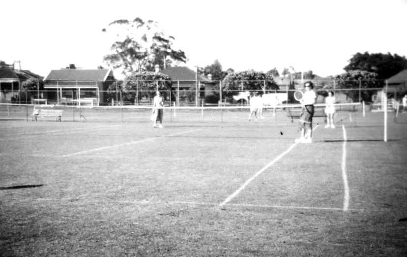
1951: JIM
The McLaughlins
I came to know the McLaughlin family almost as well as I knew my own. Jim’s parents Joe and Susan had immigrated to Australia from Scotland separately sometime in the 1920s. They met here and were married probably about 1930. Jim, an only child, was born in 1934. Both were hard workers. Mr Mac (as I knew him) worked in a metal working shop relining crank shafts for heavy machinery. Mrs Mac did house cleaning for people who could afford it; most of her clients seemed to live in the Dalkeith/Mossman area of Perth, this being where the rich people lived. Obviously they had battled through the depression years and for them having regular employment was as much as they expected from the world. I can recall Mr Mac speaking of depression work on the dole, being sent to country locations on road construction and similar. They were called ‘sussos’, meaning sustenance work. Mr Mac could only be described as a nature’s gentleman. Nothing seemed to perturb him. He was the shop steward for the Union which meant that he collected the Union dues from each member on pay day and had occasional meetings with the Union hierarchy. At times at the dinner table he might recount a small incident at work that might involve him in his Union role. Mrs Mac would express concern that if he presented as a rabid unionist he might lose his job. I suspect that was an attitude engendered during the depression. While she was a Labor Party supporter she dreaded the thought that Joe could lose his job. He was constantly good tempered and had an easy manner with Jim who often called him Jock. Jim was Jimmy to his parents. Mrs Mac was a strong minded woman of strong build and obviously used to hard work. Her greying hair was pulled into a tight bun at the nape of her neck. Her relaxation was reading and she read what one might call quality literature. It was towards the end of 1950 that I started spending considerable time in their little home. Jim and I would ‘hang out’ in his bedroom at the front of the house or cycle to mutual friend’s homes. This was generally at weekends and during the week I was committed to my Tech College course and study. Jim, although gaining a somewhat lesser Junior Certificate level to me, had gained entry to Perth Modern School to go on to his Leaving Certificate. He developed a number of friends at ‘Mod’ who generally became my friends also and it was probably in 1952 that we started going as a group to Rottnest Island, but more about that later. Jim as a young fellow had had a bout of rheumatic fever, quite serious at that time that left the sufferer with a weak heart. He may have been eight or nine years old at the time. In his final year at Perth Modern School Jim had a reoccurrence that confined him to bed for three months. Inevitably it had a negative impact on his final leaving results. Nevertheless he did well enough in English and the humanities to gain entrance to the Teacher Training College at Clermont. I certainly recall Mrs Mac being quite furious with Jim and wouldn’t talk to him for a week after the results were promulgated and certainly it was true that Jim might well have done more study than he did. I often felt that my frequent visits may have been a distraction and not wishing to earn the ire of Mrs Mac I kept a low profile on my visits. He certainly spent a lot of time reading – quite hefty tomes I recall – the unabridged version of Arabian Nights and the Decameron but also War and Peace and Crime and Punishment by those Russian authors with unpronounceable names. Once Jim had been accepted at Teacher Training College Mrs Mac cooled somewhat. In the early days of Jim and my friendship Mum expressed a dislike of Jim for reasons I never really understood. Jim had some mannerisms that somehow irritated her and I could see this but Mum over reacted to them. Jim was never less than polite to her or to anyone else but he had a tendency not to look directly into the face of the person he was addressing. His speech was never rough and in our association I learned a good deal from his verbal expression, something he no doubt gained from Mrs Mac. With the passing of time Mum at least stopped expressing her dislike but I continued to feel that it was lurking below the surface. I suspect Tiger shared her dislike. Jim met most of my aunts and uncles and while the latter made no comment, Aunty Rhoda clearly shared Mum’s misgivings. I found all this very disconcerting but I don’t think I let it affect my relationship with Jim. We used to talk about all sorts of things from politics to sex, as boys do. Jim was probably as shy with girls as I was and during our early association I don’t recall him having a girlfriend. He used to treat my own occasional short term girlfriends with mild amusement.
We take to the roads
Soon after developing a friendship with Jim and as the cooler winter months approached Jim and I started adventuring out on our bikes. Early trips were relatively short, to the beach, City Beach and Scarborough and then we tackled the Darling Range, to Kalamunda, Mundaring Weir, Pickering Brook and even Chidlow. Away from the Great Eastern Highway the roads were generally unsealed gravel and often little more than vehicle tracks. I had been to Mundaring Weir before when it was very unspoiled by construction but this time the new concrete wall was being constructed over the top of the old stone wall. Mundaring Weir was the source of water for the goldfields, pumped 360 miles to Kalgoorlie. These things fascinated me and were often the incentive in making these excursions. Realising that there were many more tracks to be followed than those shown on the standard service station map hand-outs I investigated the availability of something more comprehensive. Perhaps I had seen such a map in the Department, not a Railway map but something else. I found that one of the large bookshops in Perth had quite a comprehensive range of maps, not just road maps but ones far more comprehensive showing every little track, contours and every little creek. I bought one that covered the whole area south of Perth, through the Darling Range and probably as far south as Bunbury. To me it was a magnificent product in full colour. I could sit and study it and visualise the land – every hill, every valley, every stream. How could such a map be made showing so much detail? Reflecting back now I suspect it was at a scale of 1:250,000 (1 kilometre = 2.5 centimetres) or in imperial measurement that was used at the time an inch = four miles. Yanchep was another destination, some fifty kilometres north of Perth. Yanchep was known for its caves with their stalactites and stalagmites Like most cave districts in Australia developed for tourism during the 1920s it had a caves house, rather an English looking building similar to that at Jenolan in NSW and Yallingup in the south west. Of course one paid to go on guided tours of the caves but Jim and I found one that was closed, boarded up, and we managed to squeeze around the boards and enter with my bicycle flash-light. We didn’t venture far – just far enough for it to be exciting. Caves House at Yanchep was managed at one time by the Uncle Bob and Aunty Rhoda Dodd so I was told. I have no idea when and even have my doubts about that piece of information. The rocky coast of Yanchep was very beautiful and a good fishing spot. Another somewhat longer trip was to Jarahdale, a timber town in the Darling Range then back to Perth through Mundijong, to the coast at Rockingham and north to Fremantle, a distance of 110 miles (180 kilometers) I recall we left before daybreak and did not arrive home until 8.00pm that evening. Of course there were many stops along the way, especially at Jarrahdale. I had been there once before as a young boy with Mum, before the war when Uncle Don and Aunty Thora lived there. Uncle Don worked in the mill. At the time of Jim and my visit the old mill was closed but a new mill had just been constructed. There were many interesting remnants of the old mill and early timber cutting days lying about. For Easter 1951 Jim and I decided to take on something grander. We decided to cycle to Bunbury down the Great Southern Highway, a distance of 120 miles (200 kilometres). We were well loaded with food to see us through the four days; Grandma had cooked a chook to take and as well as that we had some camping gear and extra clothing. We set out at 4.00 am on Good Friday. I left Grandma’s and called for Jim at 39 Rathay Street and we were farewelled by an anxious Mr and Mrs Mac in their pyjamas. We nevertheless reached Armadale just on daybreak but after that we found the going pretty hard having to ascend the range (mostly on foot) but determined to make it. At about eleven o’clock we were resting in the shade of a large gum tree and a car pulled up to see if we needed help. The offer was to take our load and leave it at a residence at Picton, a small town a few miles north of Bunbury. The offer was too good to refuse and with now unloaded bikes we set off with a great deal more energy. Did we know that the motor cycle TT event was to be in the streets of Bunbury that Easter and had we known would that have stopped us? Probably not but on the way we were passed by perhaps one hundred or more motorcycles on that very narrow (two narrow lanes with many tight corners) highway. We finally made Picton in the late afternoon, located the address where our gear had been left (it was actually on the highway) loaded up and made our way wearily into Bunbury just on nightfall. We found a nice treed park on the main road entering the city and decided that that was where we would camp the night. We laid our swags on the ground, ate the cooked chook and buttered bread and a few of the extras that Grandma had packed (not having eaten since breakfast since all our provisions had been taken by car) and crashed for the night.

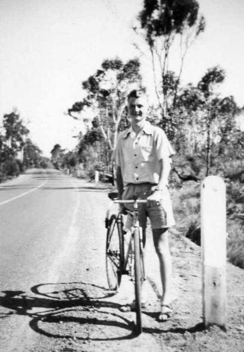

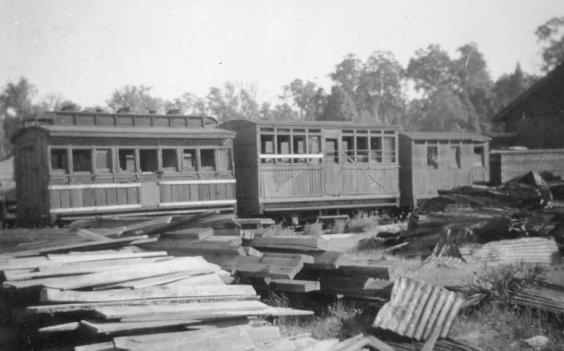

Despite the hardness of the ground, we had very little under our bodies, we both slept solidly to be awoken on daybreak by the sound of magpies and crows. It was Saturday; to my astonishment I found I had rolled out my swag on a bull ant’s nest and yet received not a single bite. We wandered about the park a while to stretch our rather aching limbs and then lit a fire from a collection of twigs, boiled the billy (yes, we brought one), made toast and finished off most of our remaining provisions and we were set for the day, promising ourselves a shower at the beach when we got the opportunity. There was one mishap. Jim was intent on roasting a bull ant or two and received a painful bite from one. Being of stoic disposition he didn’t complain too much after the first few minutes of jumping around and voicing his discomfort in words I hadn’t heard him use before. We made our way to the front beach change rooms on our bikes, showered and redressed. I am not sure what we did with our swags and remaining provisions; perhaps we left them secluded under a tree in the park or strapped them to our bikes again. We had noted many of the streets in central Bunbury had been blocked off and there were piles of hay bales on many corners – obviously the route of the motor bike TT.
After poking around a bit Jim and I took up a position at the tee junction of Stirling and Victoria Streets in front the large stone war memorial (surrounded by hay bales). It was a good spot, looking straight down Victoria Street. We had an hour to wait for the start of the race; the crowd was thickening so we held our position. We stayed and watched for several hours – the motor cycles travelling at speed towards us up Victoria Street then wheeling left into Stirling Street, riders clad in black leather and bikes heeled over to within thirty degrees of the road. The air soon filled with the acrid smell of methyl ethane fuel belched out of the motor cycles’ megaphone crackling and roaring exhausts which somehow added to the excitement. It was heady stuff. If the solo motor cyclists were exciting to watch, then came the sidecar races. The sidecars were little more than a horizontal frame to the right of the bike with a leather clad helmeted ‘passenger’ clinging to the frame. As the bike and its rider swung around the corner to the left the passenger leant out even further in an effort to hold the bike upright but even with this the sidecar wheel lifted feet above the ground. Where did they go after rounding the corner from Victoria Street into Stirling Street? I have no idea, however, the circuit did not seem all that long and only a few minutes later the same bike would be back again. We may have bought some food in the course of the day, probably either Jim or me because we did not want to lose our spot and I am not sure how long we stayed. The race went well into the afternoon. In the evening we mooched around the town – it was Saturday night and with all the visitors in town there were lots of people in the streets of Bunbury, the hotels were doing a good trade with patrons spilling out onto the streets but there wasn’t much for a pair of sixteen year olds to do other than mooch around. We decided not to stay till Monday but make our return to Perth on Sunday. We were late in leaving having had a surf on the back beach and by the time we were passing through Picton it was late morning. The trip back seemed especially arduous. Our kindly car driver had suggested that if we were to leave our swags and anything else at the Picton address he would pick them up on Monday and return them to another address in Victoria Park. I don’t recall whether we did that. I think we decided to take them back on our bikes – they were considerably reduced in size and weight on the return trip. Nevertheless, it was arduous and we were often more than one hundred metres apart, Jim in the lead on his Malvern Star semi-racer and me on my Swansea roadster with back-pedal brake trailing. Somewhere north of Harvey in the late afternoon a couple of older cyclists with very up-market racing bikes fitted with gears were overtaking us but we stopped for a roadside chat. They may have been eighteen year olds maybe older and were obviously dismayed at our bikes, especially mine. They were good blokes and suggested we ride with them which we did. Their company seemed to energise us and we pressed on. All of a sudden the hills seemed less steep. It was quite late when we reached Victoria Park, maybe eleven o’clock. Our companions left us and Jim and I found a little cafe open on Albany Road. I think we may have bought a hamburger with our rapidly dwindling funds but what I do remember was that I (maybe we) bought a bottle of Coca Cola. It had only just come on the market in Western Australia and to me it was the nectar of the Gods. I returned to Bishopgate Street and Jim to his home. Did we call on each other the following day – I do not remember. Many of the cycling trips I have outlined above took place after the Bunbury Easter excursion. We kept it up throughout 1951 and into 1952. A trip we thought about doing, at least I did, was to Mandurah south of Perth and then by the ‘Old Coach Road’ from Mandurah to Bunbury. The Old Coach Road closely followed the coast, skirting inland around the coastal lakes then coming into Bunbury just east of the Leschenault Inlet. Somewhere down that road there was an old ruined homestead where there had been a celebrated and very mysterious murder that from time to time was written about, no doubt with suitable embellishments. All this fired my imagination and I thought such an excursion would be a great adventure. Of course we would have to camp along the way. However, we never undertook that project having been told that the old road was little more than a goat track that could only be accessed in sections from the South Western Highway well to the east. My map indicated otherwise but a problem remained in how to get across the river estuaries. These days the Old Coast Road is now the four laned Bunbury Highway and nowhere near as romantic.
Home life – boarding out
In 1951 about mid-year I left Bishopgate Street. Mum had met a lady through her friends who said she was prepared to board me for a year or so. Just how that happened I had no idea and I certainly had some mixed feelings about moving into an unknown home. Anyhow I complied and was taken to meet the Mathesons. Mrs Matheson was friendly enough, a large lady with a dominating manner. Mr Matheson was likeable and very friendly. He was a hard worker but I don’t recall what at. The Mathesons had a daughter about my age and I had the impression that Mrs Matheson saw me as a distinct prospect. Daughter was in an apprenticeship as a seamstress in a tailor’s shop. My bed was at one end of the front veranda with no other furniture but I improvised some from wooden boxes. Whatever my board was that was something between Mum and Mrs Matheson. I guess Mum saw Mrs Matheson as a good fun person and she probably was in company of her friends. Most nights coming home from night school my dinner would be saved in the food safe or the oven as I recall it, mince stew with watery vegetables and sometimes varied with the stew being curried. I didn’t eat there at weekends, generally going back to Grandma’s. The Matheson daughter was attractive enough but without any personality that I could discern. With some encouragement I took her to the pictures once or twice and on another occasion to a dance organised by the Kentex Club. I would have to admit that in the early stages I showed some interest; after all she was a girl my age. She was well and truly dominated by her mother but I thought – well, I had never had a girlfriend and maybe...? I recognised that my actions and thoughts were unchivalrous and even now I can take no pride in them at all. I wanted to break the association and when it happened it was not at all pleasant and I had no control over it. I had a week before asked her to some sort of event; I can’t recall what it was. I came home from work on that Friday afternoon feeling quite rotten about it and said I was unwell and couldn’t go out. I was unwell – a headache and as often happened at that time accompanied by blurred vision. Anyhow, I handled it badly. Perhaps if I had stayed quietly in my end of veranda that evening nothing would have come of it but Jim called in and I went out with him, probably just for a walk and a milkshake. The next day Mrs Matheson bored into me. I had shown interest in her daughter and had dropped her. It was pretty rough although not without some justification. I resolved to leave immediately and walked to the phone box at the end of the street and phoned Mr Sojan (Peter Sojan’s father) the carrier. For ten shillings he called in his light truck and collected my belongings and took them back to Bishopgate Street. A week or two later Mum said she had met Mrs Matheson again. She told Mum there had been a misunderstanding and I could come back. I had definitely decided not to do that.
1952: THIRD YEAR AT PERTH TECH
I stayed at Grandma’s for the rest of 1951 and into 1952. I spent an increasing amount of time at the McLaughlins and in about April I moved in to share the front bedroom with Jim. I was keeping up my Tech College and had passed quite well at the end of 1951 in Mathematics I D (‘D’ for diploma), Engineering Chemistry and Drawing 1. In 1952 I took on Mathematics II D, Mathematics II C and Applied Mechanics. These levels of mathematics took me well into the fascinating mathematical area of calculus and for that I had a remarkably gifted class lecturer whose name now escapes me. He was German Jewish by nationality with only limited and very accented English but his sheer enthusiasm for the subject allowed him to overcome any language barrier. He was quite a remarkable man – very rotund and jolly with three chins that bounced up and down when he chuckled which was often. His second love beyond mathematics was music and he was an occasional conductor of the Perth Symphony Orchestra. Above him as head of the mathematics department was Dr Shiner, a colourless and humourless German through and through and my brilliant Jewish lecturer often liked to have quiet little jibes at his department head. The old enmities from the war tended to persist in the 1950s. I particularly enjoyed Applied Mechanics. The subject dealt with structures, the mechanics of structures, especially roof trusses in all shapes and forms. A technique used at the time in determining the effect of loading on structures was the ‘stress diagram’ which Dr Shiner chose to call a Krimona diagram, a German word I think. To me it seemed such a beautiful technique for simply solving what would otherwise have been a complex mathematical problem. At about that time I became quite adept at the use of the slide rule and purchased quite an expensive one. Perhaps the trademark of an engineer at that time was the slide rule in the pocket in much the same way that medical doctors like to have a stethoscope hanging around their neck. Based on a logarithmic scale the slide rule allowed the user to multiply, divide, take out square roots and many other functions I have long since forgotten. My other major purchase at the time was a good quality drawing board and tee square, ‘double elephant’ size (105 cms x 70 cms). I have no idea why it was called ‘double elephant’. I still have it! Another piece of equipment I picked up about that time, from an old engineer I think was a wooden parallel ruler, not the rolling type. It is a classic and I would guess it was thirty or forty years old at the time, probably one hundred years old now. I also still have it.
I move to the McLaughlins
In moving to the McLaughlins I had to take all my ‘gear’ and I often had my drawing board set up next to my in bed in Jim and my small front bedroom. The move represented a considerable improvement to my home life. I am not sure quite how it was arranged. Perhaps Mum had negotiated it although I am not sure that Mum had previously met the McLaughlins other than Jim. In 1952 Jim had started his Teacher Training College course at Clermont. It was a two year course and he did quite well graduating as a primary school teacher at the end of 1953.
To me Jim was a de-facto brother. We did just about everything together. In the summer time we made frequent visits to the beaches, Scarborough was our favourite on a Sunday where we would be entertained by two well known Perth radio identities, Geoff Manion and Kit Denton. Glen Miller and Artie Shaw music predominated and I recall one local musician and his rendition of the Artie Shaw number ‘Golden Wedding’ that required considerable virtuosity on the clarinet in achieving high ‘C’. As he ascended the scale in a series of brackets the crowd would rise to its feet and when he hit that impossible note a roar and applause from the crowd would signify its approval. He would only do it once and I think half the crowd would be there only to hear that high ‘C’. Afterwards many would leave for home and the sun would be settling into the horizon behind Rottnest Island. We often went to City Beach also – it was closer. On one occasion returning from City Beach I got hit by a car. It bent my bike a bit but with a wobbly wheel I managed to make it home via the police station to report the accident. I think I was still at Bishopgate Street at the time. I had a few cuts and grazes but nothing too bad. I am not quite sure how this developed but somehow I retained a connection with the house of the widowed lady in Rathay Street where our caravan had been parked throughout 1949. I have spoken of the two daughters and their boyfriends. In about 1952 they were joined by a younger cousin, a good looking girl maybe a year or two older than me. I think she was from the country and had some sort of junior secretarial role in the city. I am not at all sure how we met, but we did. She was far from impressed with her circumstances but had little choice to put up with it. She had little in common with her two female cousins and even less with their boyfriends but the widowed Mrs was good natured and kindly. Finally, plucking up my courage I asked her for a date to go to a movie at the Savoy theatre. Jim went also; perhaps I had asked her to accompany both Jim and me to the movies. The movie was a western in technicolour but I don’t recall seeing much of it. We pashed on throughout the movie. I had never done that before and I am not sure quite how that happened and who was the initiator. I don’t think Jim was too impressed. By the time we left to walk home, Jim trailing along a few paces behind. I was hopelessly in love. Some days later I wrote her my first love letter – on the back of a Cherry Ripe wrapper. Why that you may ask – I had plenty of other paper to write on. Perhaps I thought the picture on the front of the wrapper was pretty – romantic perhaps. I don’t think there was another performance of that nature – no more outings or pash sessions for reasons I will explain. I chanced across an advertisement for a moonlight cruise or similar on the Swan River on board the SS Perth – music, dancing (I couldn’t dance) a meal – and I thought wouldn’t that be nice. I was a hopeless romantic! Did I write my proposal to my adored one or did I actually go and knock on her door? I do not remember. Anyhow, we communicated somehow and she too thought it would be a nice thing to do. By this time I was really smitten, but it wasn’t to last long. How was I going to pay for such an extravagance? It would have consumed my entire bank balance. Somehow Mum got to hear of it; perhaps the widowed Mrs may have told her – I certainly didn’t. Anyhow, it all came to an end. Mum confronted me with ‘you are far too young to be doing that sort of thing’ and ‘who is going to pay for it?’ Somewhat chastened I kept an eye out hoping for a chance meeting with my paramour. But it wasn’t to be. I found out she had left her Rathay Street address and I was not to see her again. Love died on the vine. If I was broken-hearted, it was only for a day or two. A street away from the McLaughlins was the corner store where most of the groceries were bought. Apart from groceries and confectionary it sold magazines The shop was run by a middle aged bachelor, who was very friendly, especially to Jim – I rather thought too friendly. I am not sure when I started to think there was something odd about him or what gave me that impression. Jim had a collection of small monthly periodicals put out by a naturist organisation, in other words a ‘nudist’ organisation. They were perfectly legal and could practice their nudism in prescribed locations in the bush. Each of its twenty or so pages had a photograph of nudist activities somewhere. I do not think there was a nudist club in Western Australia at that time. The photos, always black and white – never colour – depicted men and women in the buff playing tennis or simply posing for the camera in discreet fashion. The females had their genitalia and nipples painted out which looked rather odd, especially the nipples and the men always had a square card floating over their private parts. It was all quite innocuous stuff. Needless to say the source of supply was the corner store man. One day Mrs Mac had occasion to rummage through one of Jim’s drawers and she found Jim’s collection of nudist magazines. Poor Jim got quite a tongue lashing when he arrived home. Thankfully I wasn’t there to witness it and I am not sure whether this happened before I moved in or after. The magazines were removed and maybe sent back to the corner shop or perhaps they were burned. I recall Mr Mac simply giving a quiet smile over the incident; he didn’t seem to share Mrs Mac’s ire. Sometime later the corner shop came up in conversation with my work colleague Peter Tournay who lived in the same street. I think Peter said to the effect that the owner was an old poofter and liked boys. I never divulged that to the McLaughlins; maybe to Jim. The Mclaughlin’s were paying off their home at 39 Rathay Street to a building society. The name ‘Star’ comes to mind; it was often discussed at the dinner table. During the time I lived with them the final payment was made and the home was theirs. This was the start of a general renovation. Like many weatherboard houses at the time it was unpainted but the weatherboards were oiled. The effect of this over the years was to give the exterior a very dark, almost a black, finish. This was not at all unattractive, especially with window frames and other trim painted white. Mr and Mrs Mac decided that a whole colour change would give their home a lift and they decided on green weatherboards with cream trim. The paint was duly purchased as well as some sort of preparation that had to be applied over the oiled weatherboards first. The job was then undertaken by Mr Mac, Jim and me. It took about three weekends to complete the painting and the little house looked very smart indeed.
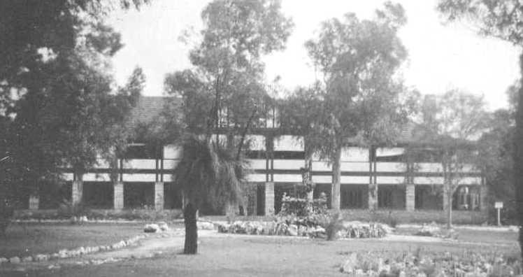

Mr Mac’s younger brother Dave who was a timber worker at Pemperton in the Karri forests usually stayed at 39 Rathay Street on his occasional visits to Perth, maybe once or twice a year. I assume when he did so he used the spare bed in Jim’s room which I now occupied. It was resolved to close in the small front veranda and turn it into a sleep-out. This was quite a project and the materials were purchased; 3”x2” timber, a couple of sheets of asbestos and several sets of glass louvres. I drew up a plan to be submitted to council – the main concern was that Mr and Mrs Mac’s bedroom would have access to light and air. Building started under Mr Mac’s supervision with Jim and me sawing up the timber lengths and the sheets of asbestos. No one thought of asbestosis in 1953 but thankfully we survived the experience. Job finished, the sleep out was painted cream and green in keeping with the rest of the house. Jim’s Uncle Dave had served with the Australian Army in the Middle East. He said he was trained as a cook. While he was with the McLaughlins his allocation of war campaign medals turned up. It included a MID (Mentioned in Despatches), an award in the British system one step below a Military Medal. Mrs Mac tried to get Uncle Dave to divulge how he was so awarded but all he would say, very modestly, was that his cooking pleased the General. I think there may have been more to it than that. Perhaps part of the motivation for creating the sleep-out was the imminent arrival of two cousins from the ‘home country’. I am not sure whether they were from Mr Mac’s side of the family or Mrs Mac. They arrived and in late 1952. They were braw young lads in their late 20s and came from the north of England, Newcastle maybe or thereabouts. They were constantly full of fun and noisy and seemed to fill all the available space in the McLaughlin’s little home to the limit by their presence. They both seemed to find reasonable employment and stayed with the McLaughlins for about six weeks. By the time they left I think Jim was heartily sick of them. As far as I knew they stayed on in Australia. Without doubt they were quite decent blokes – just a bit noisy in that small home.
Learning to dance
In 1952 I decided that I needed to learn to dance. Jim was interested and we enrolled at the Arthur Murray Dance Academy in the city. I think it was on the top floor of a building in Wellington Street. Perth with few exceptions was a two storied city. The lessons were not private; we couldn’t afford that. We attended a class of about thirty, mostly boys for a two hour session. Girls seemed to be born with the ability to dance; perhaps they learnt to dance at school. Anyhow, it was the boy who had to lead. The girls just followed making sure they kept their little tootsies out of the way of their partners blundering feet. We pupils sat on chairs down either side of the dance room and the teachers were at one end. It was ‘modern dancing’ we were learning – quick step, foxtrot and rumba. The music would start and the teachers, mostly female but some fellows as well, would demonstrate the step routine and then we would get to our feet and as individuals try to follow their instruction with the teachers walking up and down correcting our technique, sometimes taking us in hand one by one. Then we would progress to dancing with a partner, a teacher, a sort of arms length process, holding our teacher partner with arms outstretched one hand on each shoulder with eyes on the ground watching our feet. I don’t recall much about the steps except that quick step went something like slow – slow, quick – quick – slow somehow executing a turn in the process. Foxtrot would follow quickstep in similar fashion followed by rumba. In the last twenty minutes of the lesson we males would be encouraged to cross the room and ask a girl on the opposite side for a dance. Of course with more boys than girls some boys would miss out. The pretty girls would be taken up first and then the ‘plain Janes’. I invariably was left with a plain Jane. This time we were told how to hold the girl properly, left hand around the waist and right hand holding her expended right hand – bodies not in contact. At the end of the lesson the proprietor, a rather tubby gent and his wife (presumably) would give a five of six minute demonstration, not just the quickstep, foxtrot routine but other more complicated dances of South American origin. They were excellent. The tubby proprietor seemed incredibly light on his feet despite his shape. Perhaps that was intended to inspire us to return next week. We were given or maybe we paid for a few pages of dance steps depicting feet, male and female, executing steps and turns on the dance floor. They were complicated and I could never follow them and gave up trying after a while. We kept up the lessons for a few months and although I soon realised that I was never going to be a ‘twinkle toes’ on the dance floor I nevertheless lost my inhibition in asking a girl to dance.
SURVEYING – THE START OF THINGS
Field work
From time to time we juniors were taken from the office to assist in the field on small survey tasks. I quite looked forward to these opportunities and enjoyed getting away from the office drawing board. The truth was I was having increasing problems with my back. The word ergonomics hadn’t been invented in 1950 and most of us sat with our bum perched on a high wooden stool leaning over our board for hours on end or so it seemed at times. More juniors had started in 1951 and the only one I clearly remember was Barry. He was a smart kid who used to get under my skin a good deal and others too but nevertheless, applied himself and was eager to please – too eager sometimes. He and his junior cohort took over morning and afternoon teas and lunch orders, which was pleasing. My spot in the drawing office remained just outside the telephone box so I was more times than not the person who answered the phone. My unbroken voice unfortunately could cause me some embarrassment when I was mistaken on the line for a girl. I was never sure whether to correct the caller or not. The first time I was assigned to a survey task, perhaps towards the end of 1950 (I recall it was very hot and the flies were bad) was with Mr Pigeon from the Perth District Office – down stairs and in an extension of the main building at the back. The Railways owned pieces of land all over the place mostly connected to the railway reserve and these gave rise to these small tasks of measurement and minor work with a theodolite. Mr Pigeon was a very pleasant gentleman and it was probably he who first introduced me to the theodolite and how to read the vernier scales. He was very patient. I remember him as being of average build with close cropped tightly curly grey hair. He had a voice problem – he spoke in little more than a loud whisper with very little ‘voice’ in it. Someone said it was the result of his war experience – I had no idea what that might have been. He was a keen fisherman on the Swan River and owned a small power boat. I was envious and often talked to him about it but he never invited me to go out with him. My increasingly frequent field jobs continued into 1951 and sometime during the year I was given a stint of a few months in the District Office, not just on field work but also working out cost and quantity estimates on small buildings and extensions. The District Office staff was much smaller and I don’t recall many names. We had two Europeans who were here as post war immigrants, one a tall northern Italian who had been a prisoner of war in Australia and the other a Yugoslav who had something of a persecution complex. (He took his own life a few years later). The Italian whose name was Angelo was quite a personality. He was a well qualified engineer; spoke good English which he had learnt during his time as a POW. Angelo must have brought money to Australia (although one would wonder how – the Italian lira had become worthless after the war) because he had bought a very up-market home in one of Perth’s western suburbs. I called on his home a year or two later for some reason and met his wife and several children; but back to the office. Angelo introduced us to an Italian restaurant in James Street North Perth called La Tosca. It was only a short walk from the office across the railway yard and we started going there for lunch most Fridays, that is, when I was not on survey work. At La Tosca I was introduced to spaghetti bolognaise which became a culinary favourite ever since. It was served with large chunks of delicious meat that I have never encountered since. At the age of seventeen I could put away a substantial meal without any side effect. One particular survey task I was employed on in 1952 was the tacheometric survey of a proposed railway marshalling yard at Bassendean, a suburb north east of Perth – not very far out. There had been much talk of moving the railway yards from the centre of Perth to somewhere else and Bassendean was considered a likely location. It was an area of undulating scrubby land on one side of which was a large Aboriginal camp site. I can’t recall who I was working with but the job lasted several weeks taking spot levels over the entire area for the purpose of contouring. The mathematical reduction of tacheometric observations to obtain bearing, distance and height difference was a laborious task and I was taught how to do that. Gradually the plan evolved and I found that quite fascinating; perhaps my first introduction to mapping. I was both appalled and fascinated by the Aboriginal camp and what seemed to me to be the abject squalor of it. We were not permitted to go into the camp and the area it occupied remained a blank on our evolving map. I sometimes inappropriately peered through the theodolite telescope into the camp to satisfy my curiosity. I had a lot to learn. A small field task I was often involved in was the checking of ‘out of gauge’ loads on railway wagons. Sometimes this required a short trip to one of the outer suburbs and the load would be waiting our attention on a railway siding. Out of gauge meant that the load might be too wide or too high to pass alongside platforms or pass under road or foot bridges. There may be a way around it by routing the train on a second line well clear of the platform or its awning or on a minor country line where there were no bridges. The office had detailed listings and diagrams of every possible situation and the load measurement would be checked against these to determine whether it was ‘out of gauge’. If it was and most likely it would be, an appropriate route would be chosen to get the load to its destination. This information would then be sent to the traffic office.
Odd jobs that I remember
Often we young blokes were used as a resource for odd jobs that came up from time to time. I recall being invited with one of the other juniors into the office of Mr Cedric, the Assistant CCE and onto the balcony of his office overlooking Wellington Street. Our job was to record the number of vehicles passing below in both directions along Wellington Street, for whatever reason I had no idea – a traffic count. We sat there from eight o’clock in the morning till six in the evening marking sheets of paper with a tick or dot in columns headed trucks, cars etc. The next morning we counted up the ticks to give total figures. Another odd job I had that lasted several days was pressure testing concrete pipes at the Hume Pipe works in West Perth. Each six foot length of pipe about a foot in diameter would be loaded onto a frame and when in position I would pull a lever that would block up both ends of the pipe with big rubber plugs. I then turned on a water cock that pumped water into the pipe filling it to a prescribed psi pressure. Then with a wooden mallet I would give the pipe sharp raps and if no cracks appeared emitting beads of water the pipe would be accepted and I would stamp it accordingly. The occasional one would fail under pressure and be discarded. The Railways had a need for a better class of domestic accommodation – I am not sure where. Since builders were in short supply as were building materials they had imported about twenty prefabricated houses from one of the Scandinavian countries. These had arrived at Fremantle and had been loaded onto rail wagons, apparently in any sort of order – all the parts mixed up. There were many parts to make up a house, fully prefabricated walls, roof sections, floor sections with lots of small bits including plumbing. Every part was colour coded and numbered and the job was to sort them into complete house lots as each rail wagon was unloaded. This was done into a large railway shed somewhere in the Wellington Street marshalling yard. The shed floor had been marked out into bays and as each component came off the wagon it had to be inspected for its colour code and number and directed into a bay so that at the end of the week there were twenty complete sets of houses, one in each bay. I had diagrams and lists depicting all the components and I was supposed to mark off the number against each piece depicted as it came off the wagon but that was impossible and would have taken too much time. I think I simply ticked every piece when all were sorted into their house lots. I recall it was a difficult enough job, especially at the start just getting familiar with it. The pieces were being carried in by railway yard workers grunting and straining under the weight of the larger components. I found their manner somewhat brusque and often it would take me a minute or two to find the relevant marking. Also as a youngish teenager I had some difficulty telling these big sweaty blokes what to do and where to go. Sometimes I might make a mistake and direct them to the wrong bay and then have to get the lifters to pick it up again and carry it to the right bay. However, I got better at it on the second and third days and the process proceeded relatively smoothly. I often wondered where these prefab houses were to finish up. They had a distinctly European look about them, almost alpine with high gables and bits of fancy work. Made of pine I wouldn’t have been surprised if they had been demolished by white ants after a few years.
A holiday in Bunbury
Sometime in 1952 I decided to take a few days holiday in Bunbury – on my own. I have no idea quite what motivated me to do that other than I had accumulated a few weeks leave. At that time annual leave from a government job was three weeks; only two weeks in most forms of private employment.
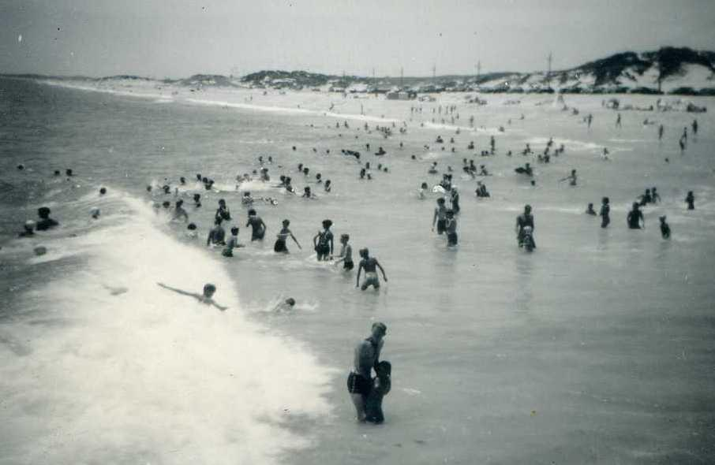
Of course I had a first class free rail pass so I could have gone anywhere within the State, even Kalgoorlie. I knew no one in Bunbury and had nowhere to stay other than a hotel so that is what I did. I had it in my mind that I would visit Collie but again I had nowhere in particular to stay in that town either. I arrived in Bunbury and booked in to a main street hotel. It wasn’t particularly expensive and I could afford a few days there. I thought I might make friends with someone there but never did – perhaps just as well! I spent my time wandering around Bunbury, taking a few photos with my Brownie box camera. I wandered out to the end of the long Bunbury jetty where coastal ships were berthed and down to the ‘Back Beach’ and surfed. I tried fishing off the rocks but I don’t recall being successful – I wondered what I would do with them had I caught any; perhaps take them to a couple staying in a caravan on the nearby headland. I gave myself a considerable fright in nearly stepping onto a stingray in shallow waters at one end of the beach. It probably got an even bigger fright than me – it swirled off in a flurry of sand and water and I took a great deal of care after that. I was told that it was probably only a harmless sand ray but I wasn’t convinced. Finally after three or four days I caught the train to Collie – or maybe it was a bus. I have no recollection of where I stayed, maybe in another hotel – they were cheaper than the newly arrived ‘motels’. I did not call on the Phillips or anyone else that I can recall but maybe the Houghs and I would have had a mind to visit Geoff Fogarty but for some reason I didn’t. Perhaps in 1952 he was undertaking National Service; he was a year older than me. I certainly caught the train (or bus) to Collie Cardiff and had a day with Aunty Grace and Uncle Bert. My album tells me that I took photos of the mine and gantry and even back in Collie I have photos of the Minimup swimming pool and Ferguson Wier and the defunct power alcohol plant built during the war to supplement petrol. I have no recollection how I got to those places but it must have been by bicycle and I may have borrowed one from the Houghs – what else? I returned to Perth. At that time I had no idea that I was to spend quite some months in Bunbury a year later.
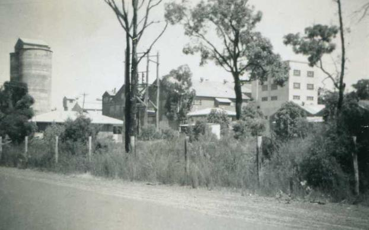
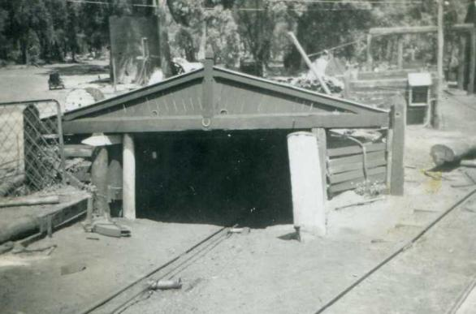

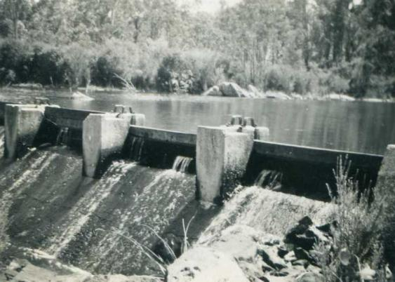
Learning to sail
I am not sure quite when I developed an interest in sailing and all things to do with the sea. Perhaps it was during my caravan days reading ‘Chums’ annuals that came to my possession from somewhere and their rollicking stories of the pirates of the Caribbean or Robert Louis Stevenson’s ‘Treasure Island’. Whatever it was I could think of little else at times. I could even fantasise when sailing an old mattress on the Swan River. Watching the ‘skiffs’ and ‘sharpies’ on a sunny day skimming across the waters of the Swan filled me with a desire to do just that myself one day. Sometimes I conveyed my feeling to Mum but she was dismissive with ‘how can you afford that’ and ‘you’ll drown yourself’. I was content enough to satisfy my dreams by simply reading about it. I had books on boat building, a very comprehensive one of American origin – Chesapeake Bay – and it was my resolve that one day I would build a blue water yacht and sail the world. I doubt whether that resolve would have survived my time in the Navy on National Service. I had another book, a penguin paper-back, by a well known British blue water sailor that explained ‘the rules of the road’ and gave all sorts of advice to the blue water sailor like ‘shave and dress smartly before going ashore’. He introduced me to sailing around the British Isles, the Solent and other famous sailing places. However, 1952 was to be my year of learning to sail and of course this involved Jim. During the weeks I was working in the Perth District office one of the younger staff, Bob Mansfield, was building a VJ (which stood for Vaucluse Junior) sailing dinghy. There were quite a number of these on the Swan River both in Perth and Melville Waters and further up stream at Maylands. They were popular with young sailors and were relatively cheap. Bob Mansfield had completed an apprenticeship in carpentry but had somehow moved to the District Office as a draughtsman and quantity estimator. I found him friendly but not gregarious. He was keen to elevate himself to a professional level although he had quite a long way to go. Bob by any standard was a perfectionist and critical of any work he considered shoddy. He was engaged to be married but in 1952 that was some distance off. He enthused me with the notion of sailing and building a VJ but of course, I had neither the money to do that nor the place to build it. Bob’s VJ was going to cost 100 pounds by the time he finished it including japara silk sails and I gathered that he had a comprehensive workshop and a full set of tools. I had none of that. Each Saturday morning I scanned the newspaper classified ads under ‘boats and yachts’ where there was usually two or three VJs listed but the price was always between seventy and one hundred pounds. My budget ran to about thirty pounds; then one Saturday there was my VJ, thirty pounds and the advertisement said it needed some work done on it. I asked Bob Mansfield what he thought and I think his reply was ‘I wouldn’t touch it with a thirty foot pole’ so I hopped on my bike and cycled over to where it was located – Mosman I think – and there it was. I had twenty five pounds in my pocket and the mother of the owner said that was enough – I think she wanted to get rid of it. It had been sitting in her backyard for quite some time abandoned by her son. Its sails were complete including spinnaker and in quite good condition, a little stretched perhaps but no rents or tears. It had a name ‘Miome’. Goodness knows where the name came from but it was registered with the VJ Association with that name so ‘Miome’ it remained. Furthermore the name was professionally painted on its stern. The McLaughlins agreed that I could park it under a tree in their backyard. Tiger picked it up from the Mossman location tied it to the back of his car, half in the dicky seat of the Essex Super Six. It needed some work done on it (as the advertisement had warned); there was some obvious wood rot in the deck near the cockpit. In 1952 sailing dinghies were built of three ply bondwood over a light wooden frame. The plywood was screwed to the frame with brass screws and where the ply wood sheet had to be joined this was done with a strip of ply wood under the join and the overlying sheets fastened to the strip with copper roves. The joints were made watertight with copious amounts of red lead mixed with turpentine into a thick paste. There must have been several hundred brass screws and perhaps half that number of copper roves in Miome and it was a considerable task removing them all. I thought I could reuse them but getting them out had caused too much burring of the head and Bob Mansfield warned that brass screws once stressed could easily snap off below the head and that I should buy all new screws. Also I had to buy a couple of sheets of three ply bondwood, quite expensive but somehow I managed to do that. Having removed the rotting deck I was able to use that as a template for cutting the shapes in the new sheets of bondwood. The tools I needed were simple enough, a fine bladed saw and a couple of screw drivers. My second problem was the running rigging. Made of cotton rope of several thicknesses it was much frayed. Cotton rope was not too expensive. The cutting of the rope into lengths and joining it around the various eyes and blocks required knowing how to splice. I learnt that skill from a book I had bought on dinghy building and became quite proficient – a skill I never forgot. The next step was to learn to sail. Again I had a book on how to sail a dinghy and within it there were lots of clear diagrams showing the various points of sailing – tacking, running, reaching, leaving a lee shore, gibing, everything you could possibly need to know. Jim was surprisingly supportive. We rigged Naome in his backyard a number of times, at least the mainsail and the jib, leaving the spinnaker until we became a little more expert on the water. The VJ has a very flat deck with a cockpit just big enough to put your feet in. It had a pair of boards for climbing out on to counterbalance the wind pressure on a reach but we left those at home. The centreboard was a heavy steel plate about a metre long with the centreboard box just in front of the cockpit. Also it has a bowsprit, a fixed spar that projects about a metre forward of the bow. The jib sail is attached to the front of the bowsprit in effect increasing the length of the hull by that amount. When fully rigged the bowsprit gives the little VJ a surprisingly graceful appearance.
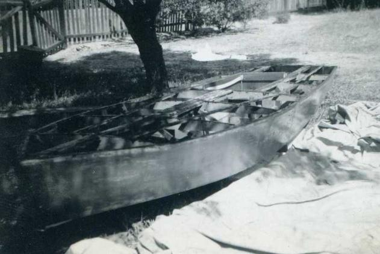
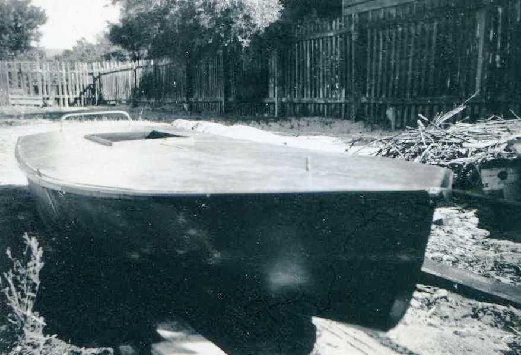
We decided to start out at Belmont at the bottom end of Tiger’s block of land – 134 Great Eastern Highway. The house in which Mum, Tiger and I were to live in a couple of years later had been started in 1951, at least there was a load of sandstone on the block for the foundations. The bottom third of the block was swampy and full of coarse rushes and Tiger said he would fill that one day. In fact the block fronted a shallow bay with a black mud bottom and taking our VJ in there meant pushing it out to the edge of the bay where the river flowed and the water became deep. So we started. I assume Tiger took Miome out to the block from the McLaughlins – I had no other way of getting it there and that was where it was to stay until we moved or sailed it to another location. Day one was a Saturday and it was with some trepidation that Jim and I carried Miome down to the water edge and launched it in. We rigged the mast on its shrouds, connected the boom, had the mainsail reefed to the boom and shackled to its main sheet, the rudder in place and the jib shackled to the jib sheet (in sailing the running rigging is called a sheet) and the bow sprit and the centre board sticking up in the centre board box ready to drop down as soon as we were in deep water – all set to go. The wind was a gentle breeze from the shore – perfect! We pushed the VJ across the bay to the edge of the deep water, quickly raised the main and the jib, clambered aboard and dropped the centreboard. The wind caught us and we were underway more or less; perhaps more less than more more. We went about ten metres and over we went, sails flat on the water with centre board sticking out from the bottom. No problem! Climbing onto the protruding centre board brought the dripping sails upright again and we again climbed aboard again only to tip over on the opposite side. So it went on throughout the afternoon although we started to make a little more headway as the afternoon progressed. That evening, although exhausted by the activities of the afternoon I re-entered my ‘how to sail’ books and attempted to analyse what we were doing wrong. It clearly had something to do with leaving a lee shore in shallow water, that is a shore with the wind blowing directly onto it, having to go into a close tack (45 degrees to the wind direction) when due to the shallowness of the water it was only possible to lower the centreboard to about a third of its length. On a VJ this meant also that the top of the centreboard in its centreboard case was sticking up so far that it fouled the mainsail boom each time we went about, either purposely or accidentally. The following day we tried again with much more success. Perhaps the wind was a little more favourable such that we could leave the shore on a flat reach, that is, with the wind to one side. We may have capsized a few times, but not twenty or thirty. We never looked back after that. Mostly I took the helm and gave the orders ‘prepare to go about – go about’. Sometimes I would hand over to Jim but he was quite happy to man the jib and when we finally got onto open water some time later, the small VJ spinnaker. I had Miome in the water long before Bob Mansfield sailed his VJ – in fact I am not sure that Bob’s ever reached the water. I think he had to sell it before it was finished. I was inclined to boast of my sailing achievements but in visiting the Dodds on one occasion I was upstaged by cousin Ken who was crewing on a ‘Sharpie’. The Sharpie was a twenty foot (6 metre) dinghy and carried twelve square metres of sail. They were of heavy planked construction but were the fastest sailing craft on the Swan River. They took a crew of three or four. The name Rolley Tasker was always associated with the Sharpie. He was the doyen of sailors on the Swan and sailed in the 1956 Olympics. Cousin Ken was maturing, at least I thought so. Maybe I was too. On our few meetings during 1953/54 I
![VJs fully rigged (not mine). Note the jib rigged out on the bow sprit. [source: website photo]](1945-1955_the-years-between_assets/figure-29-original.jpeg)
Website photo found him good company and interested in what I was doing.
The Railway Institute Concert Party
In early 1952 or it might have been towards the end of 1951 a Railway Institute concert party gradually came together. I am not sure quite how that happened. It somehow grew out of our badminton nights and square dancing and certainly the principal propitiator was Terry, the Institute activities officer; after all, it was his responsibility to do that sort of thing. He was a very pleasant fellow and in general conversation he reflected a love of music and theatre. Perhaps he had undergone some theatre training; he had a good singing voice. The idea caught on with a good deal of enthusiasm and ideas started to develop. We were to produce a show comprising a series of acts (we call them ‘gigs’ these days) with a railway theme. Several of our CCE staff, both technical and clerical, were keen and had surprising innate talent. Alex Hanley for instance also had a good singing voice and many ideas and others like Peter Tourney and Robin Vickery weren’t bad either. My voice was too scratchy for that sort of thing but I took part in a couple of rather silly turns. I certainly wanted to be part of it. I can recall the singing group practising numbers like Chattanooga Choo Choo. We had a very good pianist who held a middle level job in some other part of the Railways whom Terry knew and managed to attract to the cause. There were quite a few popular numbers with ‘railway’ themes during the fifties and soon the whole idea started to take shape. I became involved in two supposedly ‘funny’ acts. One such act involved me in singing in my cracked voice which varied from a fairly deep baritone to an almost falsetto soprano ‘O Sweet Mystery of Life’ as if I were practicing on the stage while the large roll-down stage curtain was being adjusted in height by the stage manager giving directions ‘up a little, down lower and so on. I, the practising singer, took those directions to apply to my vocal rendition so I would ascend or descend the scale accordingly until someone would exclaim ‘God – that bloke is terrible’ and I would be chased off the stage. The second gig was with Alex Hanley dressed as a rather swarthy Indian fakir playing a tin whistle to a coil of rope that would then slowly uncoil with the end rising to the rafters. I, his assistant, would then climb the rope which at that point had been tied securely to a rafter above the stage. He, the fakir, would protest and pull me down. I would crash to the floor whereupon the fakir would arm over arm ascend the rope and disappear. Then the curtain would come down. I am not sure of the point of it all. About the middle of 1952 we put on a concert at the Institute – a one night performance. There was a surprisingly good audience of railway people, filling about two thirds of the hall who despite our amateurishness were appreciative, so much so that a further performance was planned, not in Perth but in the railway centre of Northam, 70 miles (110 kilometres) east of Perth. We were touring – big time! We left Perth mid-afternoon on a Friday in a sleeping coach hooked onto one of the regular trains. The sleeping coach was shunted onto a siding close to the main platform and that is where we were to spend the night after the concert. Terry had gone to Northam the day before to make all the arrangements – part of his job. The institute hall in Northam, smaller than the Perth one, was close to the main station. A railway wives auxiliary organised by the Station Master’s wife had prepared an adequate supper which I think we consumed after the performance and again our audience seemed very appreciative although I subsequently received a very negative comment. I did my two gigs, not without a good deal of embarrassment. Afterwards we returned to our shunted sleeper coach, which by then the bunks had been made up with sheets and a blanket. We were rudely awoken in the early morning with our coach being shunted onto the tail end of a goods train for our return to Perth. That was the last of our concert performances, at least during my railway period of service.
Other friends
Jim’s period at Teacher’s Training College brought me in contact with his college friends, both male and female. Keith Chesson was one – the Chessons were also family friends of the McLaughlins – Dave, Wilf, Frank and Ernie were TTC students hence I never knew their surnames or perhaps I have forgotten. With some of that group and others ex Kent Street High and the Kentex Club we ventured further for picnics. One of the Teachers Training College fellows who must have been a year or two older than Jim and me had access to a truck and meeting at some rendezvous we would all pile into the back of the truck and head off to one of the picnic spots, Serpentine Falls, John Forrest National Park and others. There were a few girls in the group although the only one I remember by name was Sybil whom I would probably describe as a red-head, only slightly so. Perhaps I remember Sybil because she always seemed especially friendly towards me and I often quietly contemplated that she might be my girl friend. But that wasn’t really to be. A dark haired girl seemed attracted to Jim – I don’t recall her name. Our relationships never went further than on such occasions sitting together, walking together and perhaps sharing a few confidences, but I must confess, I liked Sybil a lot. Bouncing about in the back of an open truck was not a particularly safe way to travel but no one thought much about those sorts of things at that time. Our picnics were fun and my few photos show that there were often a dozen or so on those excursions.
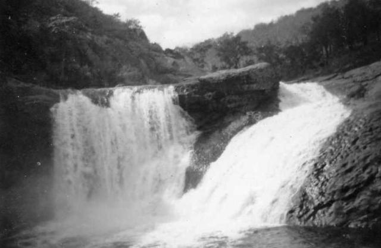

Dave also had access to a car, a Chrysler ‘Fleetmaster’ sedan; quite a big car by the standards of the time. The car belonged to his father who was a school inspector and was often away from home. Perhaps his father had a department car because Dave seemed to have access to the Chrysler any time he wanted. I had the impression that Dave was a bit of a problem at home. He wasn’t doing very well at College although Jim said he was bright enough but had little interest in the course. Perhaps he didn’t want to be a school teacher. Our trips in Dave’s car were probably a year or two later than the shorter day picnics. On one occasion he drove us all to Bunbury. It was a fairly cramped trip, three in the front and four in the back including the three girls. On the way back we hit a greasy slick on the road and the Chrysler went into a rocketing skid and finished up facing the opposite direction. It was a chastening experience and Dave drove the rest of the way back to Perth at a very modest speed. The old Great Southern Highway to Bunbury was only two lanes in those days with many tight corners. Seat belts hadn’t been thought about in 1953 or 54 and I think we were all somewhat relieved to reach Perth again. It was the last of those trips and my contact with Dave came to an end.
Rottnest Island
In 1952 Jim and I started making trips across to Rottnest Island. We were usually accompanied by a few of Jim’s mates from Teachers Training College (TTC), and some from Kent Street High who had kept in contact through the Kentex Club, Malcolm McKercher and Alan Treloar were ex-Kent Street High. They were all good blokes and we had a lot of fun together. Rottnest Island had not been extensively developed for tourists at that time but nevertheless it was a favourite holiday destination for Perthites. The Island had (and still has) a unique beauty. It has a rugged coastline with many deeply indented bays, crystal clear waters and interesting historical buildings. These include the 19th century State Governor’s residence, the penal buildings from the time when it was an Aboriginal penal colony and military fortifications of both World Wars One and Two. In 1952 these old buildings were in original condition but used for cheap and rough holiday accommodation. There were a number of holiday cottages, no more than a dozen, on the track leading to ‘The Basin’ that to me resembled the little Forestry homes of my early days. They may have been staff accommodation during the Island’s early history. The Basin was a rocky cove not far from the main settlement on Thompson Bay and close to the camping ground. It was the most popular swimming and girl-watching location. Rottnest Island retained a primitive casual attractiveness; there were no motor vehicles other than the ‘charabancs’ run by the Administration and bicycles that could be hired. We rarely availed ourselves of these forms of transport, preferring to walk. The Administrator of the Island was Mr Stark, a gentleman to be feared. Step out of line and you would be on the next boat back to Perth. How did we get to Rottnest? The Island is 12 miles (18 kilometres) off Fremantle across a stretch of ocean called Gage Roads. It can be quite rough, particularly when the ‘sea breeze’ builds up in the late afternoon. Fremantle is 12 miles from Perth by river. There were two ferries plying to Rottnest from the Barrack Street jetty on the Swan River in Perth, the Zephyr, a magnificent old steam ferry and a Fairmile Launch, quite a large craft of World War Two army origin that had been converted into a passenger ferry. It was much faster than the Zephyr, taking just an hour from Perth to Rottnest while the Zephyr took two hours. We nearly always went on the Zephyr. It was cheaper and for me much more pleasurable out on the open deck. The Zephyr would pull into the Army jetty just south of Thompson Bay and passengers disembarking carrying their camping gear, fishing gear and all manner of containers filled with provisions (washing baskets seemed popular), would be inspected by Mr Stark’s island police. Alcohol on the island was strictly prohibited; it wasn’t even sold, but a surprising amount turned up. Some of those washing baskets heaped with clothing and towels had a good number of bottles of Emu and Swan at the bottom. An alternative to the sea trip to Rottnest was to fly in the small eight seater twin engine MacRobinson-
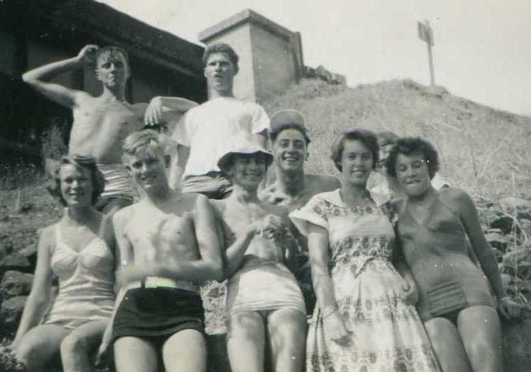
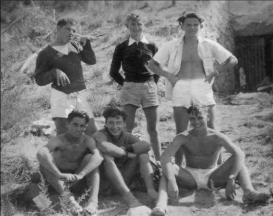
Miller aircraft. That took only twenty minutes from the Maylands aerodrome but was only for the wealthy; the fare was exorbitant by our terms. On a number of trips we would not spend money on hiring a spot in the proclaimed camping area. It might have been Wilf or Dave who knew of the ‘caves’ in the cliff near the island airstrip. We called them caves but they were old ammunition tunnels cut out of the sandstone during the war. They were clean with sandy floors although often inhabited by quokkas, the small marsupials that were uniquely found on Rottnest Island. Our presence soon scared them away and we would take over. The caves were only about a kilometre south from the Army Jetty where we docked. We would need to be a little careful in heading in that direction from the jetty since unauthorised camping would result in a quick return to the mainland so we might wander with the crowd towards the Settlement and later head back to the airstrip and the caves.
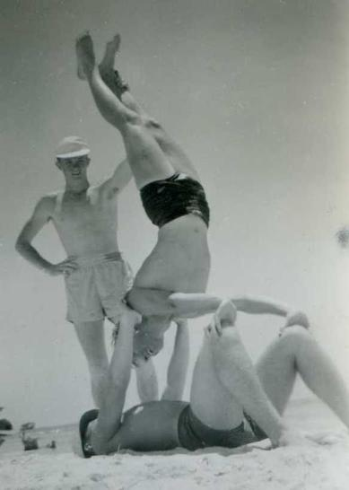

Our stays on Rottnest were usually about three or four days, Easter and long weekends but in December 1952 we spent the week before Christmas in the camping area in an old railway tent that Tiger had stored away somewhere. I think we found that it was more fun being in the thick of things with other campers. What did we do on Rottnest? Not very much but laze about talking – sometimes future plans; National Service was looming next year for all of us and most were thinking only of the Army although some harbouring the possibility of the Air Force. I think Dave was the only one to crack the Air Force. I was uniquely hoping for the Navy. Mostly our time was spent at the Basin, on the beach with the occasional plunge into the cold waters of the cove, acting up and showing off in front of the girls, which achieved few if any admiring glances. Of course girl watching was a regular pastime but never did any of us get beyond watching and plenty of romancing.
Rottnest Island was certainly the playground for the citizens of Perth, both rich and poor. While we lot and many like us taking our passage to Rottnest on the SS Zephyr or even the Fairmile launch The Islander and camping in the ammunition tunnels or even paying the small rental for a camping site were the poorer class there were always a number of classy looking yachts and motor launches anchored off Thompson Bay. One of the well known identities of the upper class Rottnest fraternity was a Mr Lucas. He was a well known businessman and entrepreneur on the Perth scene owning a number of electrical goods retail businesses. His quite luxurious (at least the newspapers claimed it was) yacht could often be seen anchored off Thompson Bay. A rather bizarre thing happened in about 1953 or 54. The Lucas yacht was making its way across Gage Roads to Rottnest when it was hit by a sudden squall or similar, at least it had a major mishap of some sort, and was in danger of floundering. Lucas himself was not on board but on hearing of it he chartered a light aircraft to take him to the stricken vessel. He ordered the pilot to fly low over the yacht, as low and slow as he could and then to the surprise of the pilot he opened the door and leapt out into the water, planning to swim across to his stricken craft. Lucas was killed instantly when he hit the water. Although the aircraft seemed low it was nevertheless at a height of at least one hundred feet and travelling just above stalling speed, maybe a hundred miles an hour. Height distances, or any distances, are hard to judge in the air and clearly Mr Lucas thought he was travelling much lower and slower than he actually was.
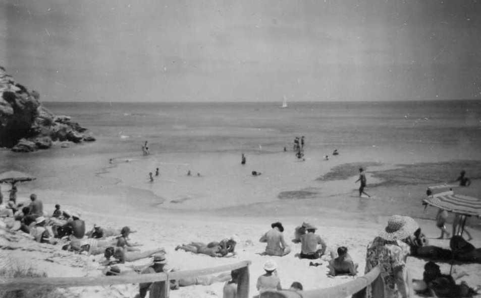
Music
I think Jim thought of me as a bit of a musical snob. I had developed a liking for classical music in my early teens and I am not sure how that happened. Perhaps it was as a result of my piano lessons in Collie days or something else. It was the ‘light’ classics that initially appealed and many of the traditional semi-classical folk songs of the nineteenth century, sea shanties sung by Peter Dawson and on the ABC the Village Glee Club. I found the lives of the classical composers fascinating, Chopin, Mozart, Beethoven, Wagner and others. I used to tune in to the ABC classical sessions on my crystal set and then in the caravan on my battery operated Astor wireless. It was in my first year with the Railways that I realised that other human beings also liked classical music and attended concerts called ‘symphony concerts’. These I could not really afford to attend but one wet Sunday I went to a free concert in the Capitol Theatre at the lower end of William Street where most of the concerts were held. The programme was of excerpts from well known symphonies and concertos, such as the first movement of Beethoven’s fifth, Tchaikovsky’s piano concerto and others. I was hooked. That was to be my real interest. I found others at work equally interested and far more knowledgeable who took me into their fold. Tony Holtham became a firm friend although he was not at all interested in vocalists which I enjoyed immensely, Puccini opera, Madam Butterfly, La Boheme and others. Tony had a great collection of twelve inch classical discs (pre-long play). I think it was about 1953 when long play records first appeared, often referred to as ‘microgroove’ but they were expensive. I found I could get affordable student entry tickets to concerts and even a season ticket. My classical music knowledge expanded considerably. I read about the lives of composers and anything else I could find that related. I could never get Jim to come along – he would smile condescendingly but Mrs Mac was encouraging. Mostly concerts were held at the Capitol Theatre, a classic Hollywood style theatre of the 1920s. Within its foyer were busts of some of the film stars of the era, Rudolf Valentino and others. It was a great venue. Outdoor concerts were held in the sunken gardens of the University of WA and the Cottesloe Civic Centre, the one-time home of Claude de Bernales, but I think that was later in 1954. I lived for the day when I could buy my own record player and start a collection of my own but that was to be some time off. The Borovansky Ballet (to become the Australian Ballet later) had a season at His Majestys Theatre in Hay Street. They principal performance was John Anthil’s Corroboree which became a much maligned ballet – white dancers performing with blackened faces and exposed body parts in very non-Aboriginal dances. I attended on my own and the ‘racial’ implications of the ballet did not occur to me at the time. I loved the ballet itself and the music composed by John Anthil. Preceding the performance of Corroboree was Les Sylphides, a ballet to Chopin nocturnes, etudes, preludes and mazurkas. I was absolutely captivated by it – still am. With improving finances as the years passed I became a student subscriber to the Perth Symphony Orchestra concerts in the Capitol Theatre – an advantage from being a part time student at the Perth Tech. Our resident conductor was Rudolf Pekarik, a fairly recent post war immigrant from some part of Europe. He often address the audience at the end of a concert in very faltering English that became more fluent as the years passed. I last saw maestro Pekarik in Brisbane some years later and in his address to the audience he was clearly much improved. A frequent guest conductor was Sir......, a very debonair Englishman who was very popular and who had a mission to educate we Aussies in the finer points of classical music. Concerts were frequently held in the sunken garden of the University of Western Australia adjacent to Winthrop Hall. It was a perfect location and if it threatened rain we could all retire into the hall. It was at such a concert that I first heard the young oboist Jiri Tanikbudek. As a result of that the oboe became my favourite woodwind instrument.
I recall attending an operatic version of a traditional Greek tragedy at the Cottesloe Civic Centre put on by a very competent local group. It seemed to be a perfect setting for the performance in the amphitheatre surrounds of the sunken garden. Jim had no interest in going and in any case I was meeting one or two of my music loving work friends. I am not sure how I got there, probably by tram from Victoria Park to the city and then bus to Cottesloe – an awkward trip and I must have been keen to take it on. The performance was a little above my head but I generally enjoyed the ambience of it and the company of my work friends. As I was leaving to again catch bus and tram back to Victoria Park I was approached by an elderly man portly in build, dressed in a suit who offered me a lift home. He was vaguely familiar to me and after a few moments I remembered who he was. It was Oliver Strang, my grandmother’s landlord. Strang owned a large army disposal shop only one or two doors from the Dodd’s past fish and chip shop in Albany Road. The shop had a very large cement floor area and the type of disposal items it had on display was not the usual army accoutrement – items of uniform etcetera – but large chunks of machinery and related parts. I often wondered whether he ever made any sales because most of it sat there year after year. I knew that Oliver Strang had all sorts of property as well as the small home of my grandparents in Bishopgate Street. I think he stood unsuccessfully for state parliament a few times. How he could possibly have remembered me was beyond my understanding. I may have accompanied Grandad a couple of times to Strangs to pay the rent, even taken it alone but I have no recollection of that. I occasionally saw him when I lived with the Dodds in the fish and chip shop and I remember going into his shop looking for wheels for the go-cart I was building. Tiger knew him but then Tiger knew everyone. I was tired enough and not looking forward to catching bus and tram back to Victoria Park and accepted the offer of the lift but I had an underlying misgiving. The question lay in my mind – why me; how would he have known me sufficiently to offer the favour of a lift? I was mildly surprised that Oliver Strang would have an interest in the performance we had just seen. He invited me into the front seat of his car, a low-slung Jaguar sports and we headed for the city. He told me that he lived in a flat (apartment) on Mounts Bay Road (expensive) and that he was happy to take me to Victoria Park. His conversation turned to women and I stopped responding. He commented on my grandparent’s home where now only my grandmother lived with Uncle Lennie and said that it had been very generous of him to leave Grandma there on such a low rental. Perhaps it was; I think even then the rent was less than a pound a week. We arrived in the city and he turned into William Street and I thought ‘this is not the way to Victoria Park. He had to pull up at the intersection with St Georges Terrace with pedestrians swarming over the intersection (Perth had no traffic lights then) and I opened the door and hopped out with a ‘thanks for the lift Mr Strang; I will catch the tram from here’. Perhaps he was just a lonely old man wanting to do me a favour. At the age of eighteen or nineteen of slim build with quite a lot of soft curly blonde hair and an unbroken voice, and having completed my first period of national service where I learnt a thing or two, I had suspicions even if I didn’t wish to express them at the time.
Politics
I had developed an interest in politics at about this time and sometimes went into the Esplanade on a Sunday afternoon to listen to the soapbox orators. I don’t think they made a great deal of sense to me but it was very colourful. Some were self declared communists and I had some knowledge of communism from Grandad – I thought it had something going for it. Some were straight out Labor and others the very opposite. The Menzies Government was in power in Canberra and I could not help but be influenced living in the McLaughlin Labor household. Jim was unswervingly Labor in his outlook. I tended to side with Menzies’ Liberal politics but of course at 18 years of age we still had three years to go before we could vote. At one point while working in the Perth District Office I attended a political address by a Dr John Burton who had been on the staff of Dr Evatt. His doctorate was in politics. His address related to a peace conference held in Peking and of course it was communist inspired. I was quite impressed and talked about it at work and was shot down in flames by my work colleagues. So be it – I kept quiet after that. My attendance at the Esplanade soap-box oratory was what led me into the free concert in the Capitol. I had gone in to the Esplanade on a Sunday afternoon and this time Jim stayed at home. It was wet and cold (must have been winter), many of the orators had packed up and left and after a while I wandered up William Street to catch a tram home and in passing the Capitol Theatre I saw people entering and decided to follow them in – my first symphonic concert.
Beliefs
I was brought up in the Methodist tradition in my early childhood days in Collie. That had been my father’s background although he was in no way a religious person and I only recall him attending the local Methodist church on special occasions – my christening, weddings and funerals. Mum always professed a Christian religious conviction which in her mind was a private matter and she claimed that she practised her religion privately. Perhaps she did. I would have no doubt that she believed in God in the Christian tradition and perhaps Dad did also. Of course Grandad was fervently anti-church and if he admitted that Jesus was in himself a good man he was totally disdainful of any belief that he was ‘the Son of God’. Grandad as a Communist was an atheist. Of all the Magowan children it may have been Aunty Jessie that had a spiritual belief although I am not sure that it was specifically Christian. She might best be called a ‘spiritualist’. So that is the background to my own religious inclinations. ‘Inclinations’ is probably the right word. As a teenager I wanted to believe in something although like many of that age I found church attendance and school religious instruction plain boring. I had a Bible that I had been given at Sunday School in Collie (I have it still) and in fits and starts I set out to read it. It was the King James Version and I found the language a little difficult but I persisted. I found the Old Testament stories fascinating and the New Testament less so, perhaps because I had been thoroughly indoctrinated in Sunday school and elsewhere. I recall I got through several books of the Old Testament and generally tried to rationalise what I read against my developing scientific knowledge. Perhaps I have kept on doing that throughout most of my life, at least until recent years. Mrs McLaughlin certainly held to a religious conviction but was disdainful of the main line religions; especially their extravagant panoply. During the time I lived with the McLaughlins, Mrs Mac attended a small church group in the city that occupied a second level room above some shop fronts in Barrack Street. It was called the ‘New Church’. Jim and I went with her on one occasion. There was no actual service sequence, simply Bible readings, prayers and a sermon; all very simple. I had read the autobiographical book on and by Group Captain Leonard Cheshire and found his conversion to Roman Catholicism quite fascinating and announced at dinner one evening that I thought that was the true religion and I might become one. Mrs Mac nearly exploded. I am not sure that I was entirely fair dinkum but I think she appreciated that I was searching for something. Earlier while still at school was living at Bishopgate Street I decided to visit the Victoria Park Methodist Church for the Easter Sunday Service. I dressed myself in my best and only suit with collar and tie, long socks and polished shoes and set off to attend what I thought would be the 11.00am service. The church seemed very quiet, no crowds but I poked my nose in and chanced across the Minister, Mr Vaughan. He told me that they no longer have a 11.00am service but a 9.00am one. We had a chat for a while (he still called me Junior) and I guess he suggested that I might come regularly on a Sunday and join their young fellowship group. I never did. So that is about the sum of my religious development. Somehow I wanted to believe but couldn’t find a direction to follow, a direction I found years later but one I finally lost completely.
National Service notification
At the end of October 1952 I received formal advice from the Commonwealth Department of Labour and National Service that I would ‘in due course receive a call-up notice specifying the time and place at which, and the authority to which, you should present yourself to commence your service’. It went on to advise that I should inform my employer immediately. I had previously undergone the medical check and had been found fit for service under the National Service Act. Some days later I received my call-up notice for the Royal Australian Navy and I was to report to the Naval Officer in Charge (NOIC) on the 10th January 1953.
Learning to drive – Tiger’s cars
Tiger taught me to drive. It was over a period of a couple of years starting off in the Essex Super Six, not the best car to learn to drive in. It did not have synchronised gears and the gear stick rose up from the centre of the floor. While one could slip from top gear to second gear simply by regulating the speed, to drop back to third gear required the manoeuvre known as double de-clutching. The steering wheel had at least a quarter turn play in it but it was steady enough on a straight road. My ‘lessons’ were on an opportunity basis; we, that is, Mum, Tiger and I, might be coming home from somewhere and Tiger would stop and put me behind the wheel. Mum didn’t like it but didn’t protest. I remember on one occasion crossing a bridge with a car approaching so that we passed on the bridge – it was a narrow dusty gravel road – and had doubt that we would both fit. I thought the other car would stop and wait for us to cross but it didn’t. We passed within inches of each other and I think Tiger took over after that. Nevertheless, I had quite a few opportunity lessons in the Super Six. Over those years Tiger only had three cars that I remember. The first was the tip truck, and then the Essex Super Six with the dicky seat and finally a pre-war Hillman Minx which I think Tiger bought towards the end of 1953. I gave the Essex Super Six a coat of paint while I was living at Bishopgate Street. Tiger gave me some money to buy the paint and brushes and over a few days with the car parked on the roadside I cleaned it down and painted it ‘zenith blue’ while Tiger was away for a week on a bush job. When I had asked Tiger what colour he wanted he had just said blue. I thought zenith blue looked very nice and when I finished it I thought the old car was looking very smart. I had painted the running boards black and generally cleaned up the bumper bars. Mum had misgivings. Tiger returned at the end of the week and when he saw it he was horrified. His old car zenith blue – he thought he would be the butt of jokes from all his mates. I had been out all Saturday and when I arrived home it wasn’t zenith blue, it had turned into navy blue. Tiger had bought a tin of navy blue paint and slapped another coat over my beautiful zenith blue. So it remained for the remainder of its life. My driving lessons went on hold until I bought a car of my own in 1954, an Austin A40 and finally took my licence in that in Fremantle.
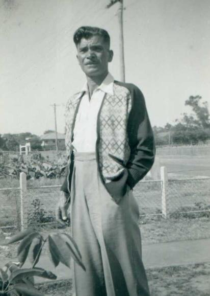
A posting to Northam
At the end of 1952 the CCE sent me to the Northam District Office for the Christmas break from the College. I had passed my three Diploma subject with good marks and although knowing that 1953 with National Service taking up four months of the year could be a write-off as far as studies were concerned I enrolled for a further three, Strength of Materials, Applied Mechanics II and one other. It was probably in early November that I headed for Northam finally returning to Perth in mid January. Northam was about 70 miles (110km) west of Perth. It was a fairly large town in the centre of the wheat belt and an important railway junction and centre which meant something in 1952. I had been offered accommodation by Alan’s family. Alan’s father, being the Station Master at Northam occupied quite a large railway house close to the station. Alan’s mother was a very friendly lady, very hospitable and made me very comfortable in a large airy room that opened onto a wide veranda. The District office adjoined the station platform and was very informal. The District Engineer was a pleasant fellow (his name was Mervyn) although I didn’t see a great deal of him. On arriving he promised me a lot of field experience during my time there and that is the way it turned out. Apart from the occasional small jobs within the Northam railway marshalling yard most of the work consisted of re-aligning track curves on the wheat belt lines and applying transitions between the straight and the commencement of the purely circular curve. We did this with theodolite and chain first of all establishing the intersection point of the projection of the two straights. On a large curve that could be some distance from the track itself, sometimes outside the actual railway reserve land on the adjoining farmer’s paddock. The surveyor and his assistant then measured back from the intersection point along each straight to establish where the curve commenced – the tangent point. On all the old tracks the straight entered the circular curve at the tangent point which meant that the heavy locomotive swung immediately into the curve at the tangent point with a tendency to push the track out of alignment and in time leading to derailments. The transition curve was a length of track that followed the curve of a cubic parabola where the degree of curvature gradually increased from the straight to the circular curve where the degree of curvature is constant until reaching the transition to the straight at the other end. Circular curve mathematics are quite simple but rather more complex for cubic parabolas. Fortunately we had tables that simplified the process somewhat, but some manual calculation was necessary. Once the calculations were complete the curve (transition and circular) would be re-pegged down the centreline and the railway gang would then realign the track, first cleaning out the ballast between the sleepers taking care not to disturb the pegs then moving the rails with crowbars until the track fitted the new alignment, finally replacing the ballast. The object of the exercise was to work out a fit that kept the actual movement of the track (always outwards) to a minimum. It was a slow job and in a week no more than two curves would be realigned.

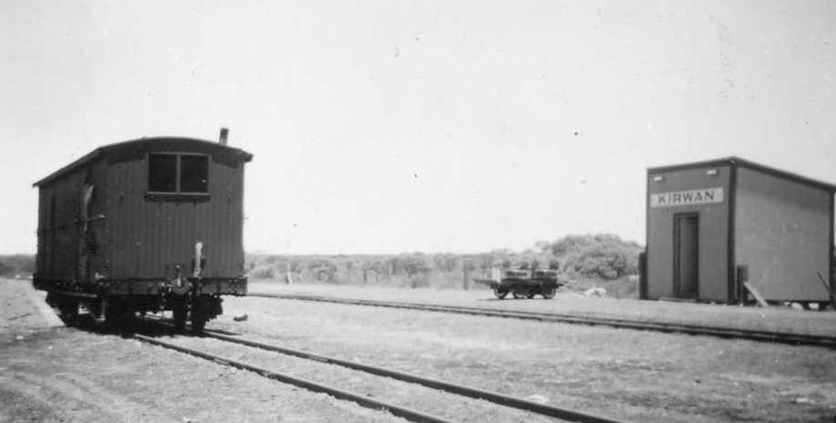
We would depart the District Office on a rail motor, a four wheeled trolley driven by a small petrol engine with seating for six, three abreast without any overhead canopy and travel for the best part of a day. Our field base was a wheat siding called Kirwan, about 100 miles north east of Northam. Parked in the railway siding would be our van where we lived. It was very old and very railway but comfortable enough. Our party usually consisted of four, the engineer, the chainman, usually a university cadet but not always and me. I received good instruction from the engineer, a recent graduate whose name I cannot recall and got on well with the others. The chainman looked after the food supply. We all subscribed to a kitty and he took it from there and did the cooking. It was pretty rough but I can remember eating some of the biggest steaks I have ever had. Each day we would head out to the curve we were working on returning to the van in the late afternoon. Of course we had to keep an eye out for trains and made sure we had the latest running schedule. Railways then had their own telephone line running parallel to the track on the edge of the railway reserve. Each time we passed a siding we would phone in to the next manned station and check any changes to the running schedules. During the harvest season (January and February) there were often ‘specials’ to move the wheat to the major centres as quickly as possible. Every mile or so along the track there would be a ‘layby’ where the trolley could be lifted off the track clear of any passing trains. It was hard work and in the summer very hot with temperatures frequently over the century (100°F, 37°C) and the flies were pesky. I always wore a fly net on my hat but the others didn’t and of course a fly net was in the way if one was using the theodolite.
Returning to Northam late Friday I usually took the train back to Perth. I had a rail pass and the trip took about ninety minutes. Some weekends I stayed at Northam; the Station Master and his wife were always happy for me to do so but there wasn’t much to do in Northam. I didn’t mind lying around reading and going to a movie in the evening. I remember seeing the early movie ‘White Feathers’ at the outdoor cinema in Northam which became my all-time favourite for many years. I always had a book with me and for a long while carried a thick volume of O’Henry short stories. The O’Henry story that started my interest was ‘The Gift of the Magi’. It had been prescribed for study at school and rather than put me off O’Henry as prescribed school reading tends to do it kindled a lifelong fascination in that remarkable American writer. Returning to Perth from Northam a week or two before Christmas and following the week on Rottnest Island with Jim and his mates I started preparation for National Service, not that there was much that I could do but it was on my mind most of the time.
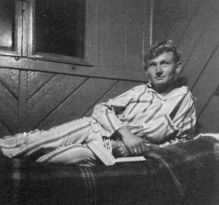
Christmas Day on the beach
My family such as they were had decided to have an ‘Aussie’ Christmas day (or was it New years Day) on the beach, namely Scarborough Beach, a frequent surfing venue for Jim and me. I had grave misgivings about this venture but Mum and Tiger were surprisingly keen and Uncle Lennie and Grandma had agreed to be part of the party. I was allowed to invite Jim. Somehow we all fitted in to Tiger’s Essex Super Six. It had a broad bench seat and with Tiger driving and Mum, Grandma and Uncle Lennie squeezed in next to him, Jim and I in the dicky seat at the back with all the food (cold chooks, salad and goodness knows what prepared at Grandma’s) we set out. It was a hot day and there was some concern that there would be no shade on the beach so we stopped in a patch of scrub on the way and cut a number of saplings from the roadside and loaded these also onto the Essex. At this stage my level of embarrassment was building up and I imagined that we would finish up looking like a lot of drop-outs on the beach in some sort of Aboriginal ‘whirlie-whirlie’ – the beach that all the ‘in’ people attended to listen to Geoff Manion and Kit Denton and the swing band and where we would almost certainly see many of our old school friends and other acquaintances and even friends from work. Jim on the other hand seemed to maintain an attitude of quiet amusement during this procedure and seemed not to share my embarrassment. I need not to have worried. On Scarborough Beach there were a number of thatched shelters along the beach that gave some protection from the sun. We chose one that was some distance from the main area, about half way to Trig Island north of Scarborough, off loaded all our gear including the cut saplings which as it turned out supplemented our thatched shelter and didn’t look too out of place. It was quite a memorable day. Christmas lunch was set up on the table in the shelter with soft drink and a few surreptitious bottles of beer and it was enjoyed by all, including Jim and me. Grandma sat back in a chair that had been brought for the purpose and the rest of us on the bench seats on either side of the table. Jim and I were the only ones to take to the surf (in the prescribed surfing area some distance from our camp site, Mum with Uncle Lennie paddled on the edge of the surf (Uncle Lennie with his trousers rolled up above his knees) and after lunch Tiger went off somewhere – not really his scene. Finally we returned to our respective homes leaving our bushy saplings behind us. Poor Uncle Lennie suffered severe sunburn on his legs and took days to recover.
1953: NATION SERVICE ‘IN THE NAVY’
January the 11th soon arrived and I reported to the office of the Naval Officer in Charge (Western Approaches) in Swan Barracks. North Perth. It was not without some trepidation that I caught the tram into the city and humped my old Globite case across the Horseshoe Bridge to Swan Barracks. I had not had any previous exposure to military ethos, either naval or army although I could recall my father’s attendance at weekend parades during the war. At Kent Street High School there was a cadet unit and I often saw the troop of cadets marching past in their ill-fitting uniforms being shouted at by an army bloke looking very bristly and officious. The Magowan family were critical of peace time armies and treated them as a joke or worse. I have covered in some detail my national service experience in ‘In the Navy’ so I will say little about it here. It was something of a life-changing experience for me, a period of rapid growing up. At its completion I realised that I could not contemplate a long career in the Western Australian Government Railways. I will leave it at that.
The Dodd’s new venture
After selling the fish and chip shop they rented a very nice home in one of the better and well established suburbs on the western side of the city. I visited there from time to time and had the impression that they were a little like fish out of water. Never before had they lived in such style. I assume that Uncle Bob had taken a job somewhere although I cannot recall any mention of that. With successive visits it was easy to see that the place was in a state of slow deterioration; the gardens and lawn were rapidly becoming overgrown and the place noticeably untidy. On my first visit cousin Ken was in his final school year (that is year three) at Perth Boys High and according to Ken doing brilliantly although some comment from Uncle Bob about the amount of time he spent at homework made me a little sceptical. Ken, ever confident, assured all that he was on top of every subject. No doubt he was – at the end of the year in the Junior exam he failed just about every subject, a situation that was passed off as having a problem with public examinations. In 1954 he went into an apprenticeship in fitting and turning and never looked back. I had gathered that part of the reason for taking the house was that Uncle Bob had wanted to sponsor his younger sister from UK to Australia under the immigration programme. She duly arrived in about November of whatever year it was and almost from the very first day didn’t stop complaining. I think her name was Maureen and we young ones were told not to call her Aunty Maureen but Miss Dodd. I am not sure how my cousins coped with that. I had always understood that Uncle Bob’s family was ‘genteel’ and in some respect so was Uncle Bob. Miss Dodd was not an easy person and she took an immediate dislike to Aunty Rhoda, hated my cousins and found the Dodd’s lifestyle appalling. To that add the intensely hot summer, the Western Australian flies, possible homesickness and the poor lady quickly became intensely unhappy. In about February she returned to UK and as far as I am aware never to be heard of again. To my cousins it was a case of good riddance. I do not recall how long the Dodds remained in that home, maybe twelve months. Sometime in 1952 they moved into a shopfront house on Albany Road at the corner of Macmillan Street. The shop front opened onto Albany Road; there was a counter to the left with a few empty shelves and at the back of the shop a small partitioned room. A passage way then led back into the house proper. I never knew what they really proposed doing with the shop; whether they intended setting it up as a business and sell something from it. Perhaps Uncle Bob thought he would make craft like things from timber or even paper flowers such as he made and sold in Fremantle before the war. Whatever it was he had convinced Mum to help fund the ‘venture’ and she put her small remaining capital – less than one thousand pounds into it. Mum was allocated the partitioned room at the back of the shop. I recall this period being perhaps the unhappiest of her life at that point. She spent much of her time with her friends and I was aware that she was becoming rather too fond of alcohol and often had a flask of cheap port or sherry in her room. I had the impression that she was having little contact with the Dodd family and didn’t generally eat with them. Perhaps she prepared small snacks of own. Tiger was spending a lot of time away on railway construction, Collie I think, on the new marshalling yard and often could not get back for weekends. I visited Mum quite frequently, whenever I was in Perth. I could sense that the situation was strained when I entered. I had always been accustomed to an easy relationship with my uncle and aunt and Aunty Rhoda had always been very supportive of Mum and interested in what I was doing. She was a very kind person. Of course often Mum wasn’t there and after a short while I would return to the McLaughlins feeling a combination of relief and misgiving. One night when I called, probably a Friday night after getting back from Bunbury I found Mum sitting on her bed surrounded by papers and letters. She was in tears and was clearly under the weather. They were an accumulation of letters she had received from my father in years past, perhaps even before they were married. Some were from Collie to her over Christmas periods when with me she was visiting her family, a yearly occurrence and maybe some were when my father was in military training at Swanborne in 1940. I recall her words to the effect ‘these are all killing me – I keep reading them – look what I have become – I have no life’ and blaming Dad for all of this. I found it very difficult. I wasn’t mature enough to give her any comfort. I remember her saying I hated her and I wished her dead but all I could do was to deny that but it wasn’t in me to say that I loved her and really felt for her because I really did. Finally she gathered them up and stuffed them into a bag and told me to take them away and get rid of them. I was aghast and said repeatedly ‘No Mum’ but she thrust them at me and I took them and left feeling tense and sick. I rode with them on my bike down to the Causeway and cast them into the Swan and returned to the McLaughlins. I recall being choked with tears myself and went straight into bed. No one disturbed me. I think Mr and Mrs Mac and probably Jim also realised that my relationship with my mother had its moments. At my next visit to Mum she asked me what I had done with the letters. I told her and she said ‘you didn’t need to do that’ but she left it at that – it was done. I didn’t see too much of my cousins on these visits and I am not sure that they were living at home – probably not. Ken had done his national service in 1952, in the Army I think and I am not sure that Glen ever did ‘Nasho’. On leaving school (he didn’t go on to Junior certificate) Glen took an apprenticeship with a roof tiler. Ken was well under way with his apprenticeship and had bought an old car. I remember one hundred pounds being mentioned as its price. He was going to ‘do it up’, an oft used expression with regard to cars at that time. It was very old; a 1920 odd American Pontiac or similar. It was huge or seemed so, a big rectangular shape with a rubberised canvas hood over two wide bench seats, a luggage rack on the back. The engine was large four or five litres and heavy on petrol which in the mid-fifties was then an expensive commodity. I don’t think I ever saw the car in motion; it sat at the kerbside in Macmillan Street for a long while and not much was said about it. Ken never got to doing it up. I think it was a something of a mission impossible. The Dodds had a visitor from UK while living in the shop front. It was an elderly English couple – very English in fact – a very ‘horsey-looking’ woman and a husband who seemed a lot older with a very ‘upper-class’ voice. I have no idea what the connection might have been. They bought a very expensive home (so I was told – I never saw it) in one of the more salubrious suburbs. I was told it had gold plated taps. The couple became separated with the wife returning to UK. There seemed to be something very wrong. The English gentleman fell apart and became alcoholic. Perhaps he always was but without a wife he became a burden on the Dodds and was well and truly out-staying his welcome. The Dodds had been to his home several times and often spoke of it. I think Uncle Bob felt his English gentlemanly manner was appropriate to his own position in life although Aunty Rhoda was a little more realistic and increasingly sceptical. But being the kind person she was she went along with the pretensions. Tiger met him at one point and thought him very peculiar. According to Auntie Rhoda his up-market home in the salubrious suburb was rapidly falling into disrepair and becoming very dirty and unhygienic. At one point he had silver-frosted all his gold plated tap fittings which seemed a strange thing to do. I have no idea what became of the English gentleman finally; he disappeared off the scene and was never mentioned again. Mum called on the McLaughlins somewhat unexpectedly on one evening. I think it was a Friday evening. She walked there from her shop front accommodation. Not unusual – she walked everywhere, often quite long distances. Maybe it was pre-arranged but she arrived after tea. We all sat together in the Mclaughlin’s kitchen in front of the stove fire (it must have been winter) and chatted for an hour or two. Mr and Mrs Mac produced a bottle of fortified wine – sherry or port – and offered Mum a drink; she accepted. They had one themselves but probably not much more. Mum had many more, becoming more and more talkative. I cannot recall the conversation although I think it was mostly about me. Finally she got up to leave but needed to go to the outside toilet. I was going to walk home with her, probably wheeling my bike. I was glad that the evening was coming to a close. At the Mclaughlin’s back door there were three or four rickety steps down to the ground. Mum stumbled and fell, badly spraining her ankle and generally bruising and abraising herself. I helped her to the toilet and then took her inside again. The McLaughlins were appalled and I remember Mrs Mac saying to Mr Mac – ‘Joe you were going to do something about those steps.’ Mum was in distress. I think Jim jumped on his bike and rode down to the taxi rank outside the Vic Park Hotel and got a taxi to 39 Rathey Street. It didn’t seem to take too long. It arrived and with help Mum hobbled out and I got in with her. It was only five minutes back to the Dodds and I paid the driver and carried Mum in. Aunty Rhoda was very concerned and I carried Mum out to her little partition room and placed her on her bed. I remember being amazed at how light she was and how easy it was for me to carry her. I think that was a moment when I really did know I loved my mother. It was later in 1953 that the Dodds sold their shop front property and bought an old house in Gresham Street, Victoria Park and that is where they remained for the rest of their days. I had called on Mum, probably soon after I had completed my first term of National Service. She was very upset having just learnt of the intention to sell the shop front. I don’t think I knew what her financial involvement in the original purchase had been until then; probably hadn’t even thought about it. Mum was angry and said that the Dodds should reimburse her for the money she had put into the place. I asked her had she raised the matter with Uncle Bob and she said that she hadn’t. It wasn’t her place to do that. She said that was a responsibility that I should take on. It was a difficult moment – she was very angry. I recall her saying that when she moved in it was to be a business, a shop that sold things and the arrangement was that she would run the shop front. On that basis she had accepted her dingy room as her share of the accommodation. I think she had talked to Tiger about it but he had declined to act for her and it was for me to take it up with Uncle Bob. With huge reluctance I did so. Uncle Bob and Aunty Rhoda had been sitting at the kitchen table when I arrived and of course they had greeted me warmly in their usual way. The thought of confronting them on this issue about which I knew very little appalled me. I had to do it and decided that it would best be done immediately. I walked up the passageway to their kitchen (it was the only way out in any case) and stood in front of them and said in my crackly unbroken voice that I had something to say on behalf of Mum. I had to take ownership of the issue and I put the points that Mum had made to them. Aunty Rhoda said nothing – just looked at Uncle Bob. He just said ‘alright Robert’ and went to a drawer and produced his cheque book and wrote out a cheque for something like seven hundred pounds. Maybe I thanked him, I was close to tears and I took the cheque back down the passage to Mum. Mum looked at it, a little surprised I think and just nodded and said thank you. I left – back through the kitchen, said goodnight to my Uncle and Aunt and went outside glad to be in the cold night air again.
Forever reading
In the pre-television years most people took their sedentary leisure in reading. From school days I was a consistent reader, usually books that were prescribed years above my age. I am not sure that I was a particularly fast reader – I read every word and some books I read more than once. Living at my grandparent’s home I became attached to the paperback westerns. These were slim volumes no more than a hundred pages held together by two staples in the centre and a cowboys and horses picture on the cover. The story line was predictable, an adventure with a mild romance; quite innocuous. I think my source was Uncle Lennie and I suspect that would have represented the full extent of Uncle Lennie’s reading ambition. They were surprisingly well written and did no harm but eventually I graduated to more literary material. I previously mentioned my excursions in to Boans’ lending library and I kept that up for my early years of high school. During year nine at Kent Street High I discovered a small lending library on Albany Road close to Rathay Street where I was living in the caravan with Mum. In fact it was a joint discovery with Brian Smith. The library was run by an incapacitated war veteran. He had been badly knocked about and had lost a leg and a good bit more I think. He was probably in his thirties and was certainly a very pleasant fellow who encouraged our reading and suggested titles. There I discovered crime mysteries and a series of novels about a very clever detective with the name of Ironsides. Brian Smith shared my interest in Ironsides and we borrowed and swapped. One could borrow a book on the payment of sixpence; not very much and I often wondered if all books were returned. Mine certainly were. The small library was well used. I suspect that the war veteran librarian may have been supported by the Repatriation Department.
Moving on a few years in about 1953 I took a subscription to the World Book Club. This was a British institution with a world-wide membership. It published a ‘book of the month’ in its own quality format at a very affordable price. I remained a member of the club for a number of years and at the rate of twelve books a year I accumulated quite a library. In addition to the monthly book the Club put out specials, for example, I obtained the full set of Churchill’s memoirs in World Book editions; this was in 1954. Others that I recall obtaining through World Book Club were Chester Wilmot’s ‘Struggle for Europe’ and the fascinating novels ‘Anthony Adverse’ by Frank Yerby and Somerset Maughan’s collected short stories. Jim’s mother, Mrs Mac was certainly an avid reader but not generally of novels. She read books by prominent social writers that dealt with the human condition and occasionally I might pick up one of her books and browse its contents. Jim veered towards the classical, 18th and 19th century writers and translations from foreign writers including Arabic. English and English literature became his principal subject in his school teaching career choice. Television hit Australia in 1956 and the membership of small shopfront libraries fell away and most disappeared. I am not sure quite when I became interested in the American author Upton Sinclair. I think it was probably in my latter years with the railways and I probably obtained my copies from the Institute library. Upton Sinclair wrote a number of books dealing with the American political scene from the years of the depression to and including the second world war. His principal character was Lanny Budd who was the confidante of presidents and other important people. He wrote a book called ‘The Jungle’ which wasn’t a Rudyard Kipling sort of story. It dealt with the Chicago stockyards and abattoirs in the late 19th century. It was a shocker; I couldn’t get through it. The book was apparently instrumental in changing or even causing the American Pure Foods Act. But it was his Lanny Budd stories that interested me the most. Interestingly (at least for me) soldiers frequently subjected to the ‘hurry-up-and-wait’ syndrome mostly always carried a paperback book in their hip pocket – referred to as a ‘stick book’. I am not at all sure why! Unfortunately I must confess that my passion for reading has not been sustained with the passing of years. The time we used to spend reading in the early evening after tea is now taken up with television.
BUNBURY
My initial four month National Service came to an end in early May. The Deputy CCE Mr Cedric called me into his office soon after I had reported back to work and asked me would I like to complete the rest of the year in the Bunbury District Office. I had of course deferred my engineering diploma studies to 1954 and I readily accepted the offer. Did I have any choice? – Probably not. I was given a free rail pass (we salaried staff always travelled first class) that would allow me to travel back to Perth any weekend I wished. In that first instance I travelled down to Bunbury on a Monday morning and reported to the District Engineer, Mr Charlie Raynor. Mr Raynor was the son of one of the Assistant Commissioners and some of the District staff implied that was the reason he got the appointment soon after graduating from university. Nevertheless, he was older than many of his contemporaries and had had extensive war service. I found him a very pleasant fellow to work for. We shared a common interest in being subscribers to the World Book Club. We often discussed the latest monthly issue. I had to arrange living accommodation for my stay in Bunbury and because it was a long term appointment I was paid a ‘living away from home allowance’, not very much, maybe thirty shillings a week, but it was helpful. I had come to an arrangement with Mrs McLaughlin for my weekends in Perth; probably a pro-rata amount for the weekend days I stayed at Rathay Street. The District Office had some sort of arrangement with a boarding house nearby. It wasn’t a very flash place but cheap. Rooms were on a share basis and I was allocated a room with a much older fellow whose name was Keiran, a property auctioneer. He was quite pleasant and we coordinated quite well in our use of the room and the bathroom facility. If one wanted a hot shower it was a matter of lighting up the chip burner and Keiran and I more or less coordinated on that chore. It was certainly basic accommodation. Breakfast was cereal and cold toast and a cold fried egg and dinner at night some sort of stew with potatoes and over-cooked vegetables. But it was cheap and I stayed there for a number of weeks until I was offered something better. We lodgers shared a mutual concern in that we paid our board for a full week even although we may only be there for five of less days. We took the matter up with the management, a large strong minded Italian lady who could be and was in this instance very unpleasant. We could pay up or ship out so we paid up and eventually I shipped out. I enjoyed my work at Bunbury and spent most days in the field working with a young engineer, Geoff Giles and chainman Harry Duffy. Geoff commuted to and from Perth each weekend by car and sometimes I returned to Bunbury with him early Monday morning, leaving the McLaughlins about 5.00a.m. By car it was a two and a half hour trip and I travelled in fear of Geoff falling asleep at the wheel – he had sleepy sort of eyes. I feel sure I woke him up on a couple of occasions when he started to wander although he assured me he was not dozing off. After one such instance in the interest of longevity I declined his offer and caught the Railway bus on a Sunday evening. At least that was free and Geoff used to charge me a few shillings for the trip. Geoff seemed to suffer from a problem that others took him less than seriously and had little confidence in his ability. He came from an upper crust family living in one of the better suburbs of Mossman or Peppermint Grove and had a ‘holier than thou’ attitude that others resented, especially our chainman Harry Duffy who could be quite rude to Geoff. I didn’t like that and didn’t particularly like Harry Duffy.
String Lining
The field job that I was involved in with Geoff Giles most of the time I was at the Bunbury District office was railway curve re-alignment between Brunswick Junction and Collie. Collie was developing two large open cut mines and the volume of rail traffic was going to increase substantially. The line was very substandard and already the large Garratt steam engines introduce about 1950 capable of pulling very large loads were derailing on the tight curves. A large new marshalling yard on the western side of Collie had been commenced in 1951 to better accommodate the need. Marshalling yard layout involves quite a lot of survey work and most of that had been done before I arrived at the Bunbury District Office but from time to time there was a bit more to do and with Geoff Giles and sometimes Charlie Raynor we would do a day trip by car to Collie for a couple of hours work in the yard. Charlie liked to be home at night.

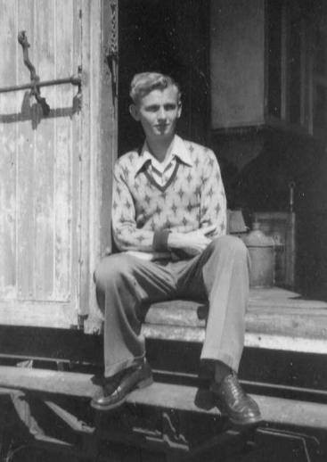
From Brunswick Junction the rail track ascended the Darling Range through numerous cuttings and many curves, perhaps a hundred or more. None of the curves had transitions and to have inserted transitions in the classical way with theodolite and chain as I had been involved in from Northam in the wheat belt would have taken many months of work. A new technique had been developed called ‘string lining’.
Starting in the straight before the commencement of the curve a two chain (40 metres) length of strong string would be stretched on the inside edge of the outer rail of the curve, marking with a yellow wax crayon the point of contact at each end. The secant distance between the centre of the string and the inside edge of the rail (that is, mathematically the distance between the chord and the arc in the centre of the chord) would be measured and recorded, then the string moved one chain further along and the next secant distance measured and so on in a series of overlapping chords. Once the two chain chords were fully within the circular curve the secant distances should be exactly the same and then diminish as the next straight was entered at the opposite end of the curve but of course this was not often the case. The passage of heavy locomotives around the curve push the curve out of shape and this was reflected in the secant measurements. Each curve was uniquely identifiable on the railway plan, and from the set of secant distances the amount the track needed to be moved to re-create perfect alignment can be calculated. It was also possible to insert into each end of the curve a transition (cubic parabola) of a given length, usually two or three chains without causing too much displacement of the track in the process. Of course to do all this by manual calculation (using logarithmic tables) would be tedious and time consuming so each set of secants were sent to Perth head office and using an instrument (I have forgotten its name) that looked like a zither with taut wires on a board the secant distances would be set on a series of slides on each of the wires and a transition introduced to the array and on each wire the amount of track displacement measured. The result would be sent back to the district office and the curve revisited and the displacement amount chalked on the inside of the rail. In due course the railway gang with crowbars would lever the track into its corrected position, re-ballast the sleepers and that was it! Job done! Of course it was tedious work and I think Geoff Giles problem was partly due to this fact and that he felt that it was mundane work for a university qualified engineer and perhaps it was. I, no less than Geoff, found the work a little monotonous but I enjoyed being out in the country which was very pretty, working our way through the Darling Range. We travelled from Bunbury on a rail motor to the point where we started work and at the end of the day we rail motored to the siding where our accommodation van would be parked. We had to maintain awareness of trains proceeding in both directions and timetables could be unreliable. At each small siding there would be the means of plugging in a telephone to the railway communication line and checking with the closest manned station the current state of train departures although on the Collie line the only manned stations were Brunswick Junction and Collie. Coal trains were quite frequent and work parties had to move their rail motor well clear of the track – not always very easy. Not all work had an engineering component and one job that came up frequently was stocktaking sleeper dumps along the track. Railway gangers were required to send in to the district office returns on the number of sleepers they had used each month so that the records could be adjusted. Occasional spot checks were undertaken to ensure the record was accurate and this often involved a day trip by car to a remote sleeper dump and doing a count. Sleepers, seven feet in length (bit over two metres) both new and used were an attractive item and were often stolen and used for other purposes. Ganger’s records were not always very accurate.

The Frenches
I became friendly with one of the clerical staff, Noel French, who had been sent to the Bunbury District Office and was for a short time staying in the nearby boarding house. He was anxious to rent a place of his own and bring his wife, Merlin, to Bunbury from Perth. He wanted a house of some quality and finally found one in South Bunbury. Perhaps the rent was more than he could afford on his clerical wage so he offered several of us railway workers board in much better circumstances than we had been enjoying. I stayed with the Frenches for several months and enjoyed their company. Geoff Giles was a frequent resident and Frank Power, an assistant engineer with whom I developed a warm regard was an occasional resident. The Frenches were an interesting couple. Both were ‘Anglo Burmese’ and Noel had served in the British Army in Burma during the war, achieving the rank of captain. He claimed service with the Ord Wingate Chindits, a guerrilla group that operated behind the lines. Noel could tell some interesting stories and I had no reason not to believe them although I sometimes wondered. I had the impression that they had enjoyed a fairly privileged position in Anglo Indian or Anglo Burmese society and both had had some time in Britain. Both Noel and Merlin were very social people and probably live beyond their means. They seemed to attract a number of local friends and entertained regularly. We residents of the French household were always invited to participate. Soon after they rented the house two young British Malayan boys came to stay, Lesley and Colin Hoffman. I rather imagine that they had been attending school in Perth but I am not sure of that. Soon after their mother Lena Hoffman joined them and I became aware that Lena was the wife of Tan Sri Hoffman, the editor of the Straits Times. I never knew how the Frenches and the Hoffmans came to be such close friends. Lena Hoffman was a very gracious lady and quite charming company and on occasions when she was visiting she somehow adopted me as her escort. I was quite overwhelmed by her attention. Only on reflection have I realised that the Hoffmans occupied a high position in Malayan society; the title ‘Tan Sri’ is some sort of Malayan knighthood. The Frenches were keen players of Mah Jong and I learned to play the game during my time with them. I had seen Mah Jong being played during my national service with the Navy and was quite fascinated by it. I think I was going through an Asian chapter of my life. Merlin often or even mostly cooked Asian meals, curries and even more exotic meals. After dinner on most evenings we played Mah Jong or Monopoly over a bottle of port or sherry, usually provided by Frank Power when he was staying but sometimes by our host. At the age of nineteen I was not permitted to purchase any alcoholic liquor nor front the bar of a hotel but I enjoyed the occasional port or sherry at the Frenches. The other great interest of Noel and Merlin French was the breeding of Cocker Spaniel dogs and they had a very beautiful breeding pair, a black and a golden. The Frenches had no children and it was obvious that the two dogs filled that gap. During my time with the family the bitch Tilsie had a litter and I was permitted to buy one of my choosing and a greatly reduced price. I chose a golden Cocker bitch, a beautiful little puppy and took it back to our new home at 134 Great Eastern Highway. Both Mum and Tiger fell in love with it and I think it was Mum who suggested the name ‘Bonney’. Even Tiger’s little dog Lucky seemed to accept Bonney.
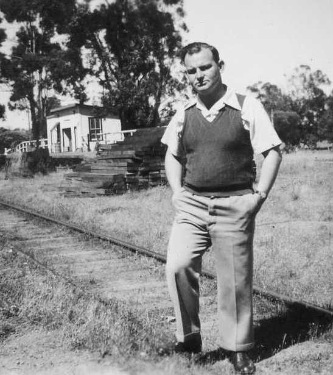
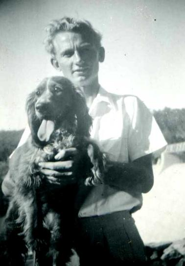

A hospital experience
Two other events took place during that time in Bunbury. First of all I developed a hard growth on the bone at the end of my left big toe. It became quite painful and eventually I reported to a local doctor. After putting my foot into an X-ray machine (such X-ray machines were commonplace in doctors surgeries and even shoe shops in those days) he decided that it should be surgically removed in the Bunbury hospital. I was duly admitted and the operation took place under a general anaesthetic – pentothal, far more agreeable than the chloroform of my early days – and I came out of it with a very painful extremity. When the blood soaked dressing was removed I could see that my big toe had been sliced up the centre to allow the bone to be scraped and I had only a small portion of a toenail left on the toenail bed. There seemed to be no hurry in ejecting me from the hospital and after a couple of days in the ward I was moved to a veranda. To deaden the pain I was given a large bottle of liquid aspirin which was quite effective – self administered medication. I was in hospital for a week and toward the end of that time the pain had subsided but they kept me there until the stitches were removed. Later in the week or it may have been the following week a young Dutch fellow was admitted who had been involved in a motor cycle accident. He was somewhat knocked about with lots of skin off and he may have had a busted knee or similar. He was brought in on a trolley which was wheeled onto the veranda near my bed. He was a few years older than me, probably in his early twenties. By then I was a walking wounded and the nurse in charge asked me to help remove his clothing which was dirty and torn, almost shredded in places. He had been given sedatives, stronger than my aspirin I suspect. Between us we peeled and cut off his clothing down to his underpants and sponged his body before he was wheeled to the theatre returning some time later swathed in dressings and (I think) a plaster cast on his leg. His chest was bandaged up – I think he had a broken rib or two. He was put into a bed end on to my own on the veranda and I was instructed to keep an eye on him – which I did. Perhaps it gave me something more to think about apart from my own paltry wound. Over the next couple of days I became his carer, getting him urine bottles as required, helping him eat and generally talking to him. He asked me a lot about my job, my national service and my life in general but was more reticent about himself. He was concerned about what he would do when he left hospital; his motor cycle had been wrecked and he seemed to be on his own. I would liked to have known more about him at the time I left the hospital after ten days or so, but that was not to be. I found my unofficial carer role satisfying and I wondered if my chosen profession should not have been nursing although male nurse were not on the agenda in those days. I had written Mum a note telling her of my hospitalisation and received a telegram asking if I wanted her to come down to Bunbury and I immediately replied that there was no need – I was OK. My toe healed but the incident left me with a rather ugly big toe for the rest of my life. I eventually forgot about my Dutch motorcyclist friend although I sometimes wondered what became of him and rather wished I could have helped him more.
Mum and Tiger marry
The second event was the marriage of Mum and Tiger. It was not unexpected and I knew that their intention was to get married once Tiger’s home at 134 Great Eastern Highway was completed. It wasn’t complete but getting close to it. I received a telegram that they had been married, in the Perth Registry Office I assumed with a couple of Mum’s friends as witness, certainly Mrs Hyde (the water colour artist). Most likely Tiger had one of his mates there too. As far as I knew none of Mum’s sisters were present. There would have been a small party afterwards at one of her friend’s homes but nothing out of the ordinary. I decided to buy them a wedding present and chose a mantle chiming clock. It was quite expensive and I am not sure what drove me to do that or why I chose a chiming clock. It was to occupy the centre place on the mantel piece above the fireplace of the new home and remained there for many years. Tiger seemed to be particularly attracted to it, perhaps more than Mum.
BACK TO PERTH
A new home – 134 Great Eastern Highway
In about October the home at 134 Great Eastern Highway was finally completed. Tiger had bought his block of land with its river frontage probably soon after his discharge from the RAAF, maybe in the late 1940s. It was on a sharp bend of the Great Eastern Highway at Belmont and a few years later when the highway was increased to four lanes the corner was truncated leaving a space between the old and new alignments. The land between was leased to a well known tile company, Brisbane and Wunderlich, for advertising purposes and the company converted it into a very attractive park containing a miniature chalet made from its products. Six houses were constructed along the old portion of the highway during the early 1950s, Tiger’s being one and perhaps taking the longest time to construct, close to three years.
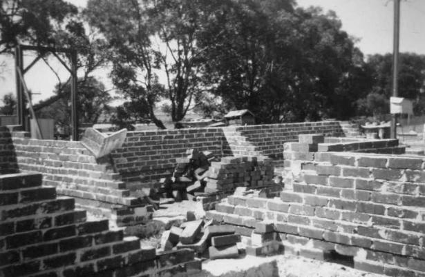

For me it was all very exciting; a home of our own at last. From the time that the foundation sandstone was dumped on the land I would find the time to cycle there most weekends, from late 1951 onwards. Invariably I would be disappointed; there would be no progress. The foundation sandstone simply lay there week after week, month after month. Tiger didn’t seem to care all that much. It was if he had lost interest in it. But sometime during 1952 brickwork finally commenced but progress was painfully slow. The home was built with ‘War Service’ finance and under the supervision of the relevant Commonwealth department with frequent inspections being carried out by the department’s inspectors. With Tiger’s house the Murphy’s Law adage applied – if it could go wrong it did. It was hard to get builders to take on War Service contracts because of the stringent requirements and Tiger’s builder was, in a word, hopeless. Perhaps he was a shyster and I think Mum thought so. Standard home construction methods in Perth at the time for a brick house was ‘double brick cavity’ – both inside and outside walls were of brick with a cavity between. The walls stood on sandstone foundations, locally quarried in abundance. Tiger’s home was not large – two bedrooms, lounge room and kitchen with a front porch and a broad back veranda overlooking the river. The laundry and lavatory were at one end of the back veranda. From the front, the house looked larger than it really was. To regulate the supply of building materials all sorts of restrictions were applied; such as, one could not place an order for roofing tiles until the walls were completed taking six months from that point to fulfil; bathroom and lavatory fittings could not be ordered until the plumbing pipes were in place and inspected – another built in delay. The outside brickwork of Tiger’s house was so shoddy the war service homes inspector would not pass it and finally the walls had to be fully cement rendered. In fact that gave the home quite a ‘classy’ appearance, at least I thought so. At about that time the builder was put off and another found to complete the job, a further delay. Finally it was finished and we could move in – ‘we’; I was given the second bedroom. It gave Mum a new lease of life; deciding on what colour to have the walls painted, choosing floor coverings and furniture – a green brocade lounge suite and ‘Feltex’ on the floors. The fireplace in the lounge room was brick faced, this and the timber mantelpiece above were clear lacquered and above the mantelpiece the inevitable flying ducks (a wedding present from someone I think) were fixed to the wall. At one end of the kitchen was the wood fired Metters stove in cream and green enamelled finish. A refrigerator was purchased (our first) but there was no room in the kitchen so it sat in the front hallway next to the kitchen door.
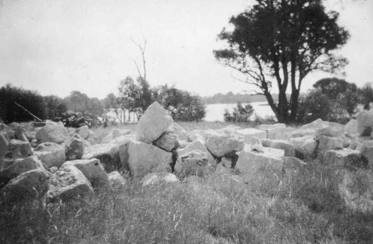
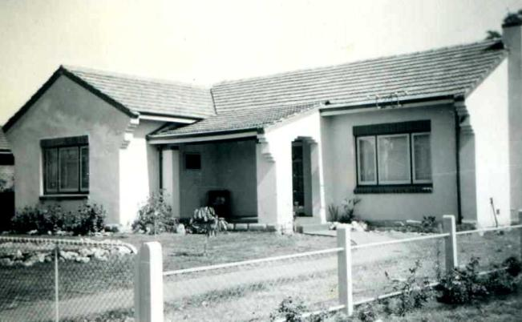
Tiger attacked the front and back yards with a good deal of vigour if not finesse. He built a corrugated iron shed from scrap material where the back yard dipped down to the river marshland. There were several gum trees at that point. In the front he made gardens along the fence line and to the side, and a gravel driveway down the right side of the home. He built a pond in the centre of the front garden rimmed with sandstone left-overs from the foundations. It was saucer shaped and made of cement on the sand base, no more than two feet deep. Water tended to seep from the base but not at too fast a rate and the hose could be used to top it up once a week. He tried goldfish in the pond but they failed to survive. The pond was eventually used by the Robinson children across the highway (related to Aunty Blanche) as a wading pool. In the back yard Tiger planted half a dozen fruit trees. All this happened very quickly and by mid 1954 the house and yard looked well established. I was very happy with my room, the first I had had to myself since Collie days. I purchased a single bedroom suit – bed, wardrobe and dressing table and I had my big drawing board set up on a wooden frame. In the event it received little use but more on that later. It was all very exciting but the excitement turned out to be short lived.
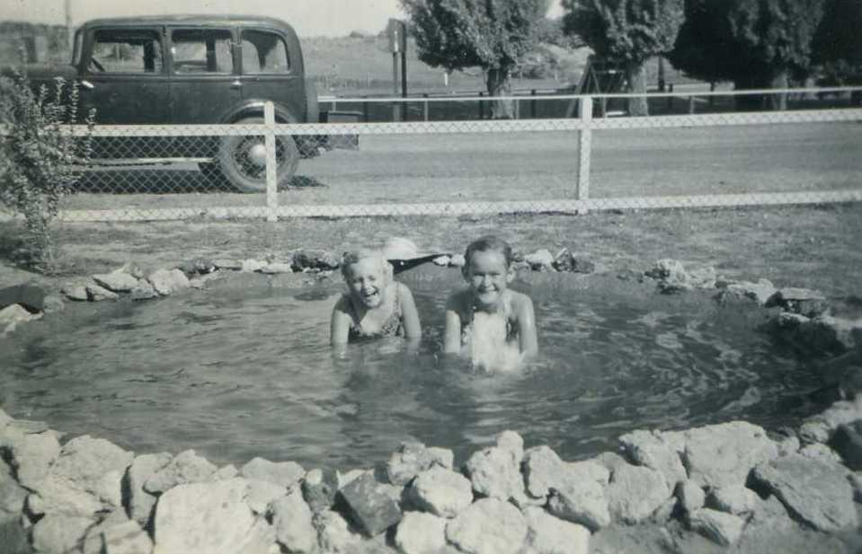
Sailing again
I remained in Bunbury until near Christmas 1953, some eight months. It was a time of maturing for me – I was getting to know myself although it raised more questions than it answered. Towards the end of that period I was spending more weekends with the Frenches than in Perth with the McLaughlins, although I enjoyed being back with Jim and we did quite a lot of sailing together. We often sailed up river past Maylands and Ascot to the point where the Swan narrows and tacking from one side to the other becomes too short and difficult and keeping in mind that while a sea breeze might carry us a good deal further getting back to home against the breeze could be difficult if not impossible. I decided that the time had come to take Miome down river into Melville Waters and sail it there. It was an epic journey. The Swan is fairly narrow where it passes through Belmont and Riverdale and north of the Causeway it is (or was) full of mudbanks. With the wind blowing from the south to the north we had to do a lot of short tacks to get through. The old Causeway was in three bridge sections, across three channels of the river. In the centre of the river was Herrisson Island (named I think after one of the early Dutch seamen) and the main channels flowed either side of the island. There was a secondary narrow channel that in effect bisected the island but was filled in as the new Causeway was constructed leaving a couple of enclosed lakes that are still there. We chose the eastern channel to sail through and then found that the mast height was somewhat higher than the old bridge, which wasn’t very high at all. We finished up part paddling and part wading Miome under the bridge section but once on the southern side away we went. We finally made Sandy Point having sailed through the Narrows (the bridge wasn’t there then) and below the brow of Kings Park. Tiger was there with Mum to meet us and I think we were both pleased with our accomplishment. We had many pleasant sailing days after that, sailing across Perth and Melville Waters, having the occasional duel with another VJ or Rainbow class. Our sailing days came to an abrupt end or almost so in late 1954 when my centreboard was stolen. I managed to get another but we didn’t sail very much after that.
Jim’s motor bike
With summer approaching the beach still had its attraction and Jim and I spent many a Sunday afternoon at Scarborough or City Beach. Soon after Jim completed his three months National Service training in the Army (sometime in 1953) he bought a motor bike with his accumulated national service pay. I recall Mrs Mac being less than happy although Mr Mac took it in his stride and I don’t recall any harsh words. I was working in Bunbury at the time and was introduced to the bike on one of the weekends I returned to Perth. It was a ‘Norton’, second hand of course and seemed in good condition. At the time there were few regulations concerning the riding of motor bikes – no specific requirement for the wearing of helmets or any other protective clothing. To get a licence one simply fronted up to any local police station and the test was no more than being told by a police constable to ride it down the end of the street, turn around and ride it back while he watched. Then after being quizzed on a few road rules the licence was issued. Jim was a competent rider and seemed to handle it quite well. I was an occasional pillion passenger to my Mum’s distress – she retained an absolute horror of motor bikes – so my times on the pillion seat of Jim’s bike were few. However, I do recall on one occasion being persuaded by Jim to go with him to visit a friend in the evening who lived somewhere on the outskirts of Cannington – then a rather scruffy suburb with few made roads and houses set back in the ‘willy bush scrub’. It was evening and we got lost or at least were unsure of the street where Jim’s friend lived. Jim turned into a street and gunned his machine down the narrow strip of gravel and suddenly we were in the scrub with willy bushes brushing past either side and slapping our faces and then the bike slewing onto its side with the engine roaring. I was thrown off into the fortunately soft sand and Jim a little further on trying to stay with the bike and copping a nasty burn on his leg from its very hot exhaust pipe. I think I survived with a bruise and a scratch or two and torn clothing. I can’t recall quite how we got out of that predicament. I think the bike was still capable of being ridden and I suspect that between us we got it back to the road and then home again to Rathay Street at a very cautious speed. I headed back to Bunbury and that was certainly the last time I was ever on a motor bike. I recall the bike being around Jim’s home for a while after that and maybe Jim used it for commuting to work but I have an idea that it suffered an alignment problem as a result of the mishap and the chain often came off its drive cogs.

1954: BUYING A CAR
At the age of 19 I still had not obtained a driving licence although I had had quite a number of sporadic lessons from Tiger in his Essex Super Six and possibly later in his 1937 Hillman Minx. Most of my work mates had cars by then and I decided that the time had come. I knew I had to finance the purchase myself and that limited what choices I had but unlike cousin Ken I was not about to buy a ‘bomb’. It had to be a post WW2 car, that is, no more than seven or eight years old and have good appearance. Second hand cars were not cheap since supply was limited. New cars were very expensive and for most there was a waiting period of several months for delivery. The newly released General Motors Holden (Australia’s first very own Australian produced car) had a waiting time of close to twelve months. Jim already had his name down for one of those. There was a second-hand car yard on the Great Eastern Highway maybe a quarter of a mile towards the city from our home – on the city side of the Sandringham Hotel. One Saturday morning Tiger and I called in and after perusing the stock bought an Austin A40. I think I had in mind a Ford Prefect but comparing the Prefect with the A40 the latter seemed almost luxurious. Tiger did the negotiating and I got the A40 for 620 pounds, down from 650. I put a deposit on it and on the following Monday Tiger and I visited the Commonwealth Bank in Perth and on Tiger’s surety I took out a loan of about 400 pounds and opened a cheque account – my first. I had to get my driver’s licence before I could drive it away and it had to be insured. We called into the car yard on the way home and completed the purchase arranging full insurance through the dealer – not very much at that time. I remember him warning very forcefully that I must under no circumstance attempt to drive the car until I had my licence. An appointment was made to undergo a driving test at the end of the week at South Fremantle police station. My driving lessons with Tiger then followed in the A40 from home to work each day with Tiger; it was an easy car to drive especially compared with Tiger’s previous Essex Super Six. Automatic gears had not come in at that time but the A40 had ‘synchro’ on all gears but first. The gear stick was in the middle of the floor, a long stick that was easy to manipulate. I went for my test after work on Friday. The policeman sat next to me while I drove around the block, executed a three point turn and parallel parked between two sticks. Finally, by the end of the week I had my car and a driver’s licence. It was a very proud moment.
I build a boat
Sometime in 1953, towards the end of the year I came into possession of a number of dinghy frames. In fact they had been given to Tiger by some fellow who was going to use them and Tiger thinking that I might be interested passed them on to me. Yes I thought – I could do that and use it for fishing at the back of our new home. I was still living with the McLaughlins at the time and I thought I might do that under the tree in their back yard but Mrs Mac suggested I should build the dinghy in my new home and that is where my little dinghy ‘Peter Pan’ took shape. I had no plans so I more or less worked it out for myself. I decided it would be 10’6” in length and I nailed a light piece of timber across the open end of each frame and then set them upside down appropriately spaced along a rough timber supporting frame on the ground. I made a stern board and a pram bow and set these in place. The next task was to bend inch by inch timbers around the frames from pram bow to stern board along the frames to become the dinghy’s gunnels and bottom corners – four in all. I bought four twelve foot lengths of Karri which has a long straight grain. They needed to be bent around a considerable arc and there are two ways of doing this; one is to put a number of saw cuts on the inside of the bend at the critical bend points and the other is to steam the timber to make it pliable. I chose the latter and created a crude but effective steamer in the backyard of 134. It was more of a boiler than a steamer. I found a 12 foot length of galvanised downpipe and set it up in a shallow trench with light kindle and dry leaves in the bottom at a slope with the bottom end blocked (somehow) and the raised end open. I then partly filled the pipe with water (it leaked a bit but that didn’t matter) and lit the kindle along the trench. Kerosene helped. Soon the water in the tube was boiling with steam pouring out the raised end. Then I inserted a length of Karri and within a few minutes it was as pliable as rope. At that point I withdrew the length of Karri and quickly bent it around the frames, tacking it into position. That process was repeated for the remaining three lengths and after an hour or so I had something that had started to look like a boat. The next step was to set the keel into the upturned frames and I had purchased a suitable length of ¾ inch thick timber and carefully cut and shaped it into the keel, some three or four inches high at the stern and less than an inch at the bow. I bought three ply bondwood and cut this to the shapes of the sides and bottom. I used brass screws and copper roves throughout the construction and all the joints and overlaps were made watertight with red lead paste and ‘Bostick’. I was then able to turn ‘Peter Pan’ to an upright position. Two external gunnels were then fitted around the outside of the bondwood skin securely screwed through to the inside gunnels and into which the rollick holes were drilled. To strengthen the slope of the pram bow and the stern board from the keel I acquired two pieces of dry tough bush timber representing a natural bend in timber that fitted approximately to the angle of the bow and the stern board and shaped them to the exact shape and screwed them into position, so giving a great deal more rigidity to the construction. The next step was to put in place two thwarts (seats) securely fastened to the gunnels and the frames. At that point the dinghy was finished apart from the painting. Nothing fancy about that. I gave it several coats of white house paint with green gunnels and it was ready for launching. Of course it needed oars and rollicks and I had acquired these from somewhere, second hand I think – new oars would have cost just about as much as the materials I had bought for the rest of the boat. It was duly launched at the bottom of 134 and it floated beautifully, very straight and even. I think it was one of the proudest moments of my life. I had carefully hand lettered ‘Peter Pan’ on the stern board and it looked great. A few small leaks along the keel were easily stopped with a squirt of Bostick. Throughout 1954 I used Peter Pan extensively from the bottom of 134, in the evenings rowing down river to anchor below the Sandringham hotel. Mostly I came home with one or two cobblers (also called cat fish; they have a spine under their dorsal that can give a very painful sting) – easy to catch and good eating. I can recall one evening going out after tea with an old school friend with whom I had picked up with recently. It was Ian Rogers. I think it must have been towards the end of 1954, not too long before or at about the same time that I had decided to join the Army. It was a very clear moonlight night and we were talking about school days. Ian had gone into some sort of apprenticeship and had completed his time. I remember observing that bright as the moonlight was there was no colour. In moonlight the world was in monochrome. Maybe we caught a couple of cobblers and took them back to 134. I can remember that Mum thought Ian was a ‘nice boy’. That may have been the last time I saw Ian Rogers and maybe even the last time I went fishing in Peter Pan.
Home at 134
If I thought that with a new home, life would settle down; Mum would be happy and she and Tiger would become a happy married couple. I was mistaken – it wasn’t to be. Perhaps Tiger had become too used to living rough and he found it hard to conform to conventional domesticity. The various defects in the home for which they had waited so long gave her constant annoyance – more than that, she would have periods of anger and nag Tiger about them. He could not stand that and he would storm off up the road to the Sandringham pub. Mum might follow him after half an hour or so. Meals were chaotic and I would escape on my bike or later in the A40. Coming home from work in the afternoon I would be apprehensive at what might emerge. Of course it wasn’t always like that and probably half the time the evenings would be peaceful enough and Mum would have prepared a nice meal. Both Mum and Tiger became good friends with the family next door and Mrs Next Door would pop in and often be there when I arrived home. Wally, the husband was a bee keeper and was away with his bees for up to a fortnight from time to time. At one point of the year we were invited to their son’s wedding. It was quite an event with the reception held in one of the local bowling clubs. Tiger had been asked to speak on behalf of the family and I learnt from that experience that Tiger’s strength was not public speaking. I spent an increasing amount of time away from home and although I interested myself in the garden; I think I selected and planted most of the ornamental shrubs in the front garden, Mum felt that I was not doing enough and not taking enough interest in the place.

She would often say that she was only there because of me. Jim and I sailed quite often from the back of the block and I had the dinghy I built and used it often. I had my further period of Nasho to serve and that was to be in April. The Government had reduced the time from two months to six weeks. With that ahead, and I was really looking forward to it, I had lost enthusiasm for my Technical College course and although I enrolled in a couple of subjects I was finding study a drudge.
Back to work
I was back to work again as soon as the Christmas – New Year holiday break was over working from the Perth District Office in the field on a variety of jobs. It was then that I came in contact with Mr Barchant, a qualified surveyor who was officer in charge of a new subsection of the Department specialising very specifically in surveying. The Railway Department had taken over a very derelict old house next to the main building and fully renovated it into office space particularly suited to survey field work. Mr Barchant was an elderly Englishman who had had a long period of service in the British Colonial Surveys in both Africa and Malaya. He exuded that British Colonial ethos that one has to experience to appreciate. He was a good surveyor, knowledgeable and well experienced. He maintained a typical English attitude to relativity in work relationships but he had the respect of all. He developed series of curve tables that greatly enhance the process of setting out a railway curve complete with transition that I was to greatly appreciate later in the year. We had several chainmen in the District office and one that I recall was a Great War veteran who had been mustard gassed during that war. He was not a well man and I often wondered how he managed to carry out the quite arduous work that role entailed. During the lunch break usually sitting on the ground or a convenient log where we might be working we would talk about various unusual circumstances each had experienced in the past. I, having had no such experience, kept quiet and listened. On one occasion a comment was made about animals, cows I think that tend to be curious creatures, knocking over survey stakes and marks over night or even when one may have moved away from the line for a moment. Mr Barchant thereupon gave us his experience with ‘actually I found elephants to be the worst offender’. Elephants! That really took the cake – no one could top that. All of those jobs centred around Perth and I can’t really recall what they were about.
SOUTH FREMANTLE TO KWINANA
This led me to the work that became my greatest surveying experience during my railway years and conferred on me a responsibility that I did not expect and a lot of very new experiences. This was the new rail line from South Fremantle to the about to be constructed Kwinana Oil Refinery and BHP steel rolling mill, a distance of about 20 miles. The line was to traverse the coast through the sandhills, in some places quite close to the beach. There was already a line to the big abattoir at South Fremantle and this is where the Kwinana line would connect. Just south of there a construction office was located and in the succeeding months the site was to become a construction camp for the immigrant workers who were to do the actual rail construction under the supervision of an experienced railway ganger. The engineer in charge of the project was Mr Con Keane, a very competent fellow who kept the whole job under tight control. Mr Keane soon became Con to me at his invitation. I liked him a lot and it was evident that all those in the construction team held him in high regard. Tiger was also allocated to the job as plant operator and for many months we travelled to work from home each morning and mostly went home together unless I had to visit head office in the afternoon which happened once or twice a week. On the job and away from home we got on very well and I learnt to appreciate what a competent operator he was. Initially I was allocated to a young engineer, not long out of university who in a short time taught me a great deal in theodolite and dumpy level usage. We had two and occasionally three chainmen allocated. The two that I remember well were Fred and Jock; Fred an elderly fellow and Jock a youngish Scot who I found rather difficult to exert my authority over. After all, my voice still had not broken and I was very young looking. Nevertheless we managed and he doubled as my driver. The University graduate engineer, a really nice fellow who had a great way about him left to go on to other work leaving me as sole surveyor on the job. It was an unusual situation and I suppose it demonstrated how short the department was of qualified technical staff. I was still classified as a ‘junior draughtsman’ and paid as such. For me it was a steep learning curve and I was fortunate to have Con Keane at hand to whom I could refer difficulties. The job consisted of running the track centreline, both straights and curves, levelling down the centreline, placing cut and fill stakes to the side and as the construction proceeded redoing and checking these, several times through the several phases. At times I worked closely with Tiger which was not easy for me – how could I give my stepfather directions – but we got by. Railway survey equipment was in no way up with the latest although at that time I had no idea what the latest was. Our theodolites were old brass four screw vernier instruments, quite adequate for the job and certainly sufficiently accurate but cumbersome to use. All of our dumpy levels were also four screw (that is, four levelling screws – three levelling screws are easier to use and quicker to level but four screw instruments were said to be more stable) with a long spirit level along the length of their telescope. I had no trouble handling these instruments although the time I took to set up the instrument could be frustrating for the chainman holding the staff or waiting at the other end of the line. My Scottish chainman might show his impatience but Fred always remained calm. For me it was a challenging job and I made a few mistakes along the way, one in particular when my levels were one or two feet (300 to 600 mm) two low in a cutting. I am not too sure how I discovered that and I confessed it to Tiger travelling to work one morning. He eased my concern and said he would soon fix that. I did some check levelling down the centreline of the cutting and put in new cut and fill stakes and Tiger with his bulldozer in a morning brought the formation up to the correct level. Following the development of the base formation, that is the cuttings and embankments and having re-established the centreline of the track then came the ballast which on main lines is broken ‘blue metal’ but on this relatively light line was to be clay free gravel. Because the line was to follow the road in the main part or at least be accessible to a road, the ballast would be brought in by road truck. The construction gang then spread the gravel to a width of three times the gauge of the track, that is, about ten feet (three metres) and a depth of 18 inches (50 cms); a lot of gravel to cover a 20 mile distance. Following the ballast the sleepers were laid on top of the ballast at two and a half foot (75 cms) interval. The sleepers were laid progressively with the placement of the rail and with this the track started to take shape. During this construction phase the pegging of the centreline was offset to one side so that the ganger could measure across from the offset stake to keep the track in fairly close alignment. The sleepers and rails on flat-top wagons rolled along the already roughly constructed track having been loaded onto the wagon at the commencement point. So the finished track progressed in a traditional time-honoured way. No mechanical lifting gear was used – all construction was by hand using a labour gang of twenty of thirty men under the watchful eye of the ganger. I completed my second period of National Service training of six weeks in May and was then transferred to the permanent naval reserve. My national service obligation was not to finish until 1958 and during that time I could be called up for full time service should the need arise. I have written of this second period of service in my previously mentioned writing ‘In the Navy’. I returned to my railway work straight away to find that the actual rail construction was about to commence. I re-assumed my role as construction surveyor and threw myself into it with enthusiasm – and I had a new voice; it had finally fully broken during national service. This greatly improved my self confidence in all that followed.
The Austrians
In 1954 most of the railway gangs on new construction comprised European immigrants, commonly referred to as DPs (displaced persons) although by 1954, nine years after the end of the war many were assisted immigrants who paid a much reduced fare to come and settle in Australia. They were contracted to work for the Government for a period of time, up to two years maximum. As time passed conditions relaxed and they became free to seek other employment which often made maintaining the strength of a construction gang difficult. They were of course paid award wages and most stayed long enough to save sufficient to allow them to leave, obtain accommodation and more agreeable alternative work. Many were saving to allow them to bring out their families and settle permanently; at least that seemed to be the situation applying to our allocation of construction labour. At about the time the track formation had been completed for the first few miles we received our allocation of immigrant labour. They were mostly Italian but quite a few Austrians as well. These were amongst the first immigrants from the ‘Axis’ that is, enemy countries other than Italians to come to Australia under the assisted programmes. There was quite a flurry of activity leading up to their arrival. The ganger had been appointed to the job, an elderly man of great experience, from a past era it seemed to me. He had no liking for DPs of any country, especially Italians and he was deeply suspicious of the others. To him they were all DPs or Balts, the latter strictly speaking from the Baltic countries. Ours were not but that made no difference. His authority went beyond the actual track construction and included their camp, its setting up and maintenance. Of course the Engineer in Charge, Con Keane, had overall authority but largely left the responsibility to the ganger. In the days before their arrival the camp had to be set up and I found myself with Jock my driver being used for transporting all sorts of things from Perth to the campsite, loads of tentage, tarpaulins, bales of hay, paliasse covers, folding stretchers, shower stands, duck boards for washing, cooking utensils, field stoves, thunderboxes for deep trench latrines. Something like a military camp was set up. Tiger cleared an area of coastal scrub close to our construction office and just behind the coastal sand hill. I recall he personally felt that it would have been best to leave the ground untouched with the tents to be erected between the trees creating a more stable and shaded camping environment, however, the ganger wanted otherwise and Con Keane went along with that. It was all done and the troops arrived. I was curious to see what they were like and kept to the periphery while they were addressed first by Con and then the ganger. I was put off to some extent by the ganger’s comments; they seemed to me to be unnecessarily rough although what he said had to be said. Most of the arrivals had a reasonable command of the English, especially the Austrians. Standing close to the ganger was an Italian fellow who seemed to have the confidence of the ganger and acted as an interpreter. I soon realised that he was not one of the others but was a longer term railway employee. He had a car and lived in Perth most likely with his family. I am not clear now quite how I came to be involved with the immigrants, more especially the Austrians. They seemed to be a particularly decent lot; perhaps there were twelve or fifteen of them. Apparently they had been told by the ganger that they had to join the union. I thought this was pretty rum – they would only be on the job for a relatively short time and why should they be required to pay union dues. I really stuck my neck out and told some of them that they could not be made to do anything they didn’t want to do so long as they carried out their work appropriately. It was not my business and I was taken severely to task over it by the ganger. He said I was undermining his authority and it was railway policy that all workers belonged to a union. I knew that wasn’t entirely correct but I said I would speak to them again and tell them what unions were all about. That clearly had not been explained. I personally had no case against unions and believed that they were a necessary part of our society. I belonged to one myself. I did a bit of homework on the matter and it was arranged that I would address a group at lunch time. With some trepidation I did so, explaining what unions did for workers and that all workers, myself included owed their conditions of service to the unions who supported their side in the industrial courts. Perhaps that would not have been my exact words but my talk was along those lines. I recall Tiger found all this very amusing – he wasn’t all that inclined towards unions himself. There was another occasion when I ‘impressed’ the Austrians and maybe the Germans – at least I thought so. One morning I had walked up onto the track formation next to their camp to find a black Dugite snake making its way across the formation. The Dugites were quite common and are venomous but not too deadly. Unlike the Eastern States Dugites they do not have a red belly but a yellow one. I picked up a stout stick and whacked it a couple of times and killed the poor brute then hanging it over the end of the stick carried it back to the campsite where the gang were assembling to start work. I showed them the Dugite and explained it was venomous like the European Viper and then draped it over a tent post. They were all suitably horrified. I think it was the first snake many had seen in the wild. I was told a day or so later that many were too frightened to walk into the bush to relieve themselves after that.
...and a friendship
Arising from this incident I developed a quite close friendship with one of the Austrians. His name was Karl Furenschuss. Karl was a dental mechanic in Austria and had he been able to have his qualification accepted here he would have left the railway gang and worked in his own profession. His English was very good, very precise. He told me a lot about his background, how he survived the war. He admitted to being a member of Hitler Youth from about the age of five to ten when his particular group was disbanded. I guess that was about 1944 and he was thankful not to have been conscripted into the army. He accepted his past and the post-war fate of Germany and Austria but didn’t talk much about the politics. He left the railway gang about mid year and had some sort of job in Perth, maybe in his trade and I continued to see him. We sometimes met in the city to go to a movie. One such arrangement on a Saturday night came unstuck when he didn’t show up at the theatre we had agreed upon. The feature film was European, the reason for our interest. I recall being very disappointed – sat through the movie and afterwards looked around for him but no sign so I went home. I had no way of contacting him but a few weeks later we had a chance meeting – I can’t recall how. Karl had the same experience as me but at the wrong theatre. His circumstances had changed and he was boarding with a German fellow whom he didn’t like very much in a house in North Perth. I called on him a few times and we simply enjoyed each other’s company. Karl was a big fellow, very fair in complexion; a typical Austrian I suppose. He had an interest in wrestling, something he had been trained in during his time in Hitler Youth. One night we went to an exhibition wrestling match in an outdoor arena in North Perth. It featured some international wrestlers that Karl seemed to know a good deal about. I can’t say I was particularly enthusiastic about the occasion but Karl certainly was and I went along with it. One of the wrestlers had the name of Gorgeous George and another was the something or other Mauler. In the event I found it interesting.
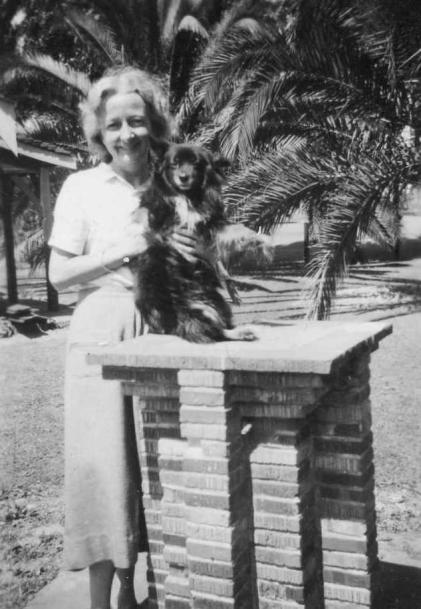
The Austrians
Mum found my friendship with Karl concerning and particularly my fondness of him. Perhaps she found it a bit suspect. I invited him home for a weekend and she found that even more concerning. Tiger took it in his stride and tried to make conversation with him but not very effectively. On the Sunday we went to Coogee for a beach picnic and put my home constructed ‘Peter Pan’ on the roof of Tiger’s Hillman Minx, thoroughly roping it down. By this time Mum was getting on well enough with Karl and we all had a very pleasant day. Karl and I rowed out into Cockburn Sound and fished a bit. I can’t recall whether we were successful. This must have been fairly early in the year because I had not at that stage bought my own first car. My friendship with Karl continued throughout the year until he finally decided to try his luck up north although we caught up with each other again in early January 1945. At that time I had already taken steps to leave the railways and join the Army. More on that later. Karl gave me a very beautiful picture book on Austria which I kept for many years. With Jim posted away from Perth I tended to develop my work friendships on more personal lines and now with a car frequently calling on them. Tony Holtham with his great interest in classical music and his sister Rio, both a few years older than me helped me along with my own musical interest. Robin developed tuberculosis and went through the cure process that confined her to the Wooroloo sanatorium for four months. On a couple of occasions I visited Rio with Tony in his Vauxhall Velox car. The sanatorium was located at the top of the Darling Range with most of the patients in beds on the very wide verandas. The cure for tuberculosis at that time seemed to be lots of fresh air and the air at Wooroloo was certainly fresh with fogs in winter time rolling in to the verandas.
On the job
In about September there was a change of command on the Fremantle-Kwinana railway construction. Con Keane moved to a more senior appointment following a retirement at head office. It was a rather odd set of circumstances that brought this about. The elderly gentleman who had been in charge of rail design, rail sections, sets of points and crossings retired at 65. The job also included maintaining the ‘out of gauge’ plans and tables that required frequent short trips to measure wagon loads. It always seemed to me to be a fairly simple task, certainly from a surveying or even engineering point of view. However, the elderly officer in charge of that responsibility was one or two steps senior to Con and he applied for the job. In the event it was awarded to the elderly officer’s second in charge, Mr Keith Aquino, an Anglo Indian gentleman who apparently was junior to Con. Con immediately appealed against the decision and finished up with the job which seemed a little outside his character – we who knew him saw him very much as a construction civil engineer, a somewhat more robust role. Mr Aquino was then appointed engineer in charge of the Fremantle-Kwinana railway construction, a rather unlikely appointment at least we all thought so. Not long before Con left the construction scene he had issued Tiger a ‘bluey’. Tiger was furious that Con would do that to him. It had something to do with Tiger on his bulldozer busting through a telephone cable or similar so putting the local area around Coogee off line for some hours. It had to be repaired by the PMG who would of course bill the Railways for whatever it cost. I suppose Con had little option in issuing a bluey to Tiger. It required Tiger to show cause why he should not be fined or some similar punishment. In the event I think Tiger was formally admonished but he never forgave Con over the incident. I don’t think I ever saw Tiger so angry and I felt a little like the ‘meat in the sandwich’. Con was my mentor at work and Tiger my stepfather. It was probably just as well that Keith Aquino took over. I got on well with Mr Aquino. He gave me a free hand largely in the surveying scene. I knew what I had to do and I did it with my little band of two chainmen drivers. While Con Keane was always Con to me, Mr Aquino was Mr Aquino. Much of the earthworks further along the track was contracted out to the Perrin Brothers, a medium size earth moving firm in Western Australia at that time. I thought they were a pretty rough lot and Tiger’s role became more one of supervising Keith Perrin’s workers. My job was increasingly re-pegging and offsetting alignment pegs and check levelling. Unlike Tiger they took little care with preserving survey pegs and even the intersection point of curves would get bowled over or even totally obliterated requiring a the straights either side of the curve to be re-established and the intersection marked again, in other words a complete re-pegging of the curve from scratch. When this happened the resulting curve would be a little different to the plan but that didn’t seem to matter so long as it was mathematically correct. It might have been through Tiger that Keith Perrin offered me a job with the firm at considerably more pay than what the Railways were paying me as a junior draughtsman. I wasn’t even tempted. I had observed the abusive way that Perrin often spoke to his men and I had no mind to be part of that. However, it did lead me to think more about what I was being paid which wasn’t very much. The monthly payments on my recently purchased Austin A 40 were considerable and consumed a major portion of my pay envelope. Also I had embarked on some expensive dental work at Mum’s insistence so a few more pounds per week would have been very handy. It may have been Mr Aquino who suggested that I should apply for a temporary upgrading to Assistant Engineer. Such an upgrading would have doubled my pay. I put in the necessary paperwork based purely on the job I was doing although realising that the Assistant Engineer grade normally required at least a Diploma qualification. Some time passed and eventually I was called in to head office and was spoken to by one of the senior engineers who headed the Railway Professional Officer’s Association of which I was a junior member. He told me that they would support my application but not to the level of Assistant Engineer pointing out that by age alone I was a junior and the best they could do was to grade me as a ‘cadet engineer’. I must confess I responded very badly stating that I considered that very unfair since in my mind I was carrying the responsibility of an Assistant Engineer on the job. I was told quite bluntly that this was not so and that the responsibility for my work was held by the engineer in charge. If the offer was unsatisfactory I would be returned to the drawing office and someone else would take over my job. That certainly shut me up and I like to think I apologised for my outburst. I certainly accepted the upgrade to Cadet Engineer and it was made retrospective for a few months. I think I held that grade until I finally left the Railways in February 1955. Track laying was proceeding at a very slow pace, no more than a couple of hundred metres a day. The old ganger was increasingly frustrated and angry often commenting that in the old days a gang would lay two miles in a day. His own problem was that he had no rapport with the gang. They couldn’t understand him and although many had reasonably good English it was very accented and very Australian if you could call it that. He was inclined to stand back from the gang shouting at them and often getting quite abusive. They may have downed tools on one or two occasions leading to a near strike situation which Mr Aquino had to resolve. Eventually the old ganger left and the youngish Italian fellow took over. He had been acting as a second in command to the ganger and as a frequent interpreter. His name (I think) was Paulo and seemed to have had experience somewhere else. Mr Aquino struck an agreement with the gang through Paulo to get the track laying moving. Essentially it was based on daily targets. When they had lain, say, 300 metres of track fully fettled and dog spiked down to the sleepers they could finish for the day. It was a brilliant move and the track laying moved at a much better pace with the gang often finished by mid afternoon, taking only short lunch breaks. Paulo was popular with the gang and had good control of the situation. My work on the South Fremantle – Kwinana railway line continued into early December and at that point the formation had been completed as far as and into the BHP steel rolling mill stopping short of the proposed Kwanana oil refinery, half a mile further on although survey had been extended that far. I had occasion to enter the BHP area in order to connect with their own internal rail siding network and was surprised to finds that they had laid very heavy weight rails, 120 pounds per yard to which we were connecting our relatively light 60 pounds per yard rail. A very long curve through 90 degrees swung the track into the BHP area and as the formation was completed (an embankment some two to three metres in height) I had re-pegged the centreline at about half chain (11 yard) interval and standing back and looking at that perfect curve of pegs I felt rightly proud. Jim had returned to Perth for the start of the school break and I took him down there and gave him a tour of the job, finishing at my graceful final curve. Jim was visibly impressed by what I had worked on over the preceding ten months and I was greatly gratified.
My A40 and a not very good experience
My general car driving was not without incident. I was very proud of my A40 and I suppose I might have been considered a moderately good driver for a young bloke. I recall clipping another car when I was pulling out of a parallel parking position on the beach esplanade road at Scarborough on one occasion. Fortunately the other car was already somewhat knocked about and the other driver said don’t worry about it so I didn’t. Although we exchanged details I heard nothing more of it. It left my A40 with a bit of a scrape on the front mudguard which I managed to cut and polish off. My A40 was black, the dominant colour of most cars at that time and it looked pretty smart when polished up. That was a weekly chore for me and of course I loved doing it. I polished it so much that I wore through the top black coat to the pink undercoat in a couple of places. I guess at that time the top finish coat of cars was rather thin. Trying to make this account as factual as possible I am impelled to tell of this incident, one of which I am in no way proud. With Jim, Wilf and Malcolm I had driven to one of the beaches, Cottesloe I think and after a bit of surfing we all changed from our togs and retired to the Cottesloe Beach Hotel. Of course drinking age at the time was 21 and I was quite a few months short of that as were the others. There was no proof of age requirement in those days and one beer led to another and then another and then another. When we finally left heading to the nearest fish and chip shop we were all well and truly shickered. We bought our fish and chips and retired to a nearby park and consumed them. I think Wilf had bought a couple of bottles of Swan. These helped wash down the rather greasy morass of fish and chips, passing the bottles from one to the other taking a good swig with each passing. It was near night when we finished and feeling pretty good we made our way back to the A40 and I drove off. I discovered I could overcome the double image of the road by closing one eye. I remember driving south through Leighton beach and into Fremantle and for reasons that escape me now continued south on the road to Coogee. Heading south from Fremantle I started feeling rather queasy and very soon my priority was to stop somewhere and throw up. I soon realized that I wasn’t the only one with that urge – it must have been the greasy fish and chips. I stopped at the roadside on a sandy stretch amongst the willy bushes and we all piled out and heading to the privacy of one or more willy bushes to off load our respective bellies full of greasy fish and chips mixed with a considerable amount of Swan Lager. I think it was only Wilf who was unaffected – he was a big bloke and seemed to be able to absorb it all. None of us felt like getting back into the car and we each curled up on the ground and drifted into the sort of sleep that only the inebriated can. Wilf shook us all about ten o’clock and with headaches that threatened to blow our heads apart we re-entered my A40 with Wilf at the wheel giving every appearance of being entirely sober. Wilf drove Malcolm home first then Jim and then himself and at that point I took over and headed back to my own home. Mum and Tiger had long before retired and I crept into my bedroom and collapsed on my bed thankful to be there. Feeling definitely more than seedy the following morning I was disgusted to find that someone sitting in the back seat hadn’t quite made the sanctity of the willy bushes before chundering and I had the unpleasant, but perhaps well deserved job of cleaning chunder out from the door cavity and the seat and carpet. Needless to say I received little sympathy from Mum but Tiger just gave me a grin and a comment that was probably meant to be amusing.
CHANGING CIRCUMSTANCES
A South West car trip
Jim Mclaughlin had his first teacher posting at the start of 1954. It was to a small one-teacher school in the South West somewhere near Capel I think so we did not see a great deal of each other during that year. He would come back to Perth for some weekends and for school holidays. At the end of the year he and I with Keith Chesson and my Golden Cocker ‘Bonney’ did the circuit of the south west roads in my Austin A40 car and we called in to Jim’s school just for a look. It was a single little school house amongst the tall gum trees and I can’t say I was very impressed. Jim boarded somewhere nearby throughout the year. The trip had its highlights. We stayed at pubs and were away for about a week calling at Bunbury, Collie (where Uncle Bert took the three of us underground at the Cardiff mine), Busselton, Margaret River (I don’t think there were grapes there then) Pemperton, where we climbed the Gloucester Tree, and to Albany and back up the highway through Wagin, Narrogin etc.
At Pemberton we met up with Jim’s Uncle Dave who took us into the Pemperton Worker’s Club, quite a big and well patronized establishment. There we had a big and very cheap meal and indulged in some under-age drinking (21 was the legal drinking age in Western Australia at the time) but in the Worker’s Club no one seemed to mind. I suspect that our departure the following morning may have been delayed and it was as well that we had climbed the Gloucester tree the day before. Between Augusta and Nornalup we left the main road such as it was to follow a track that was to take us to some point of interest on the south coast – something to do with pre-historic fossils or dinosaurs I think. We never did find them. The track became rougher and rougher and my A40 was not exactly designed for rough rock strewn tracks. Eventually we became hopelessly bogged with no hope of getting out. I recalled passing a farm house some distance back. Leaving Keith Chesson to stay with the car Jim and I walked back to ask for assistance. The farmer proved to be a very pleasant fellow and took the two of us on his tractor back to the bogged car and soon pulled us out. At his suggestion we followed him to his home and accepted his invitation to stay for the night. We departed the next morning and drove on to Albany. Perhaps that was the last significant thing we did together before I joined the Army and life changed considerably.
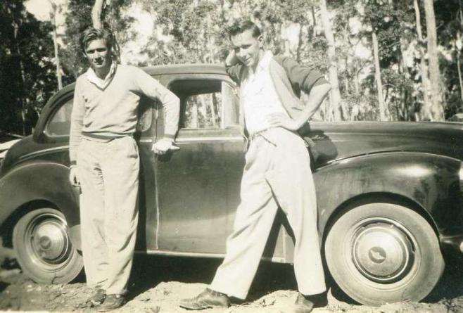
Join the Army – the Royal Australian Survey Corps
I think it was probably about then that I started to think more of my future. In the railways I couldn’t see future work of the sort I had enjoyed through most of 1954. Bending over plans in the drawing office or small excursions string lining curves did not appeal very much. I really wanted to get away. My studies at Perth Tech had fallen away during the year and I think I reneged on the end of year exams. Maybe I sat for one subject; I can certainly remember attending lectures during the year. One of the fellows from another part of the Department that used to come to badminton at the Railway Institute had talked about being chosen for an exploration expedition into the Kimberleys in the north west of the State, the purpose of which I do not recall. How I would love to do something like that; it played on my mind for weeks. I started scanning the Commonwealth Vacancies column in the newspaper each week thinking that maybe something might present itself there. I realised that my basic education level was inadequate for many things; I had only a Junior Certificate and the collection of diploma subjects I had picked up at the Perth Tech did not amount to anything. Most semi-professional opportunities required a Leaving Certificate and that I did not have. And then the Commonwealth Vacancies yielded what I had been looking for – perhaps not quite but close enough. Under the heading Department of the Army – Royal Australian Survey Corps the ad read to the effect ‘training as a topographical surveyor - ten month intensive course at the Army’s School of Survey. Minimum school qualification Junior Certificate with passes in mathematics, science and English. Applications to the Deputy Assistant Director of Survey, Swan Barracks, Perth’. That was it – that would do. I immediately applied and in a few days I received an invitation for an interview. Of course I discussed it with Mum and she was sufficiently supportive for me to go ahead. I don’t think I told her that it meant joining the Army, in fact I wasn’t too sure about that either. The advertisement didn’t say that it was necessary to actually become a soldier. I fronted up for my interview with the Deputy Assistant Director of Survey, Major Buckland, before Christmas. He made it clear that I would be joining the Army if I was selected, joining at the rank of private soldier and later after recruit training, sapper. He seemed enthusiastic enough and told me a lot about the work the Survey Corps was doing in the South West and north of Perth but also in the other States and overseas in New Guinea. That was what I wanted – for that I would join the Army, join anything in fact. He told me to think about it and telephone him in the New Year. Major Frank Buckland was a short peppery officer sporting a very military moustache – very positive. He warned me not to resign from my present job, there were a number of tests I would have to go through and these would take place in the New Year. I was to get to know him very well in subsequent years. I discussed it with some of my work colleagues, not only contemporaries but my seniors, especially Mr Aquino, Con Keane and Mr Letch. It was only Con who was less than enthusiastic which surprised me a little. He clearly wanted me around the place – suggested I had a future in the railways and I was well regarded. I could hardly wait until after Christmas so much so that now I find it hard to recall anything about Christmas 1954. I am fairly sure we had Christmas Day at home and that was about it.
Home life
Home life for me throughout 1954 had its problems. Mum and Tiger were too frequently bickering and arguing. Mum would nag him over all sorts of things, fairly minor but sometimes things of more genuine concern. For me neither was easy to live with. I often found myself the centre of the argument for no good reason with most of the barbs coming from my mother. In fact I cannot recall Tiger ever making criticism of me, certainly in front of me although Mum would often claim that he did so when I was not there. At times I would just get into my car and drive off to a friend’s home for the evening although returning with some trepidation later in the evening and usually finding that all was quiet. Of course that might mean that one or both had gone up to the Sandy. Pubs then closed at 9.00pm and they would be home soon after that apparently much happier with each other. On one occasion I came back to find Mum in the kitchen red in the face from crying. She was far from sober. She claimed that Tiger had beaten her, struck her badly. I said where and she would only reply that I didn’t believe her. I didn’t know what to believe. I don’t think I believed her at all but maybe he might have slapped her face when her venom got too much for him. Her accusations often were that he had other women. I was close enough to Tiger to know that that was simply not the case. I had never seen any indication that he might have been seeing anyone else even had there been a opportunity and there really wasn’t. Tiger simply had no inclination towards anyone else. Mum was his ‘Mabs’ and whatever his faults might have been he was in no way a philanderer. At the pub he was only ever with his mates. In fact he always seemed to me to be rather awkward in the company of other women. Sometime in 1954 we had a visit from my Aunty Grace (Woodward) from Collie-Cardiff. It was a disastrous visit. I had always had a fondness for Aunty Grace on my childhood visits to their cottage home at Cardiff. Aunty Grace had an almost pathological hated of ‘Poms’ although she married one and her anti-Pommie invective was often directed at Uncle Bert who was a decent fellow if a little odd. She took an instant dislike to Tiger and seemed to fire up Mum in the same direction. Tiger had moved out of the main bedroom (he and Mum slept in twin single beds although often seemed to occupy only one) giving his bed to Aunty Grace while he slept on a stretcher in the lounge room. In the event he made himself scarce while my Aunty was staying spending most of his time at the Sandy. Aunty Grace was the oldest of the Magowan family and Mum the second youngest. There would have been at least fifteen years between them. A happier visit was that of my cousin Edna (oldest daughter of Aunty Grace and Uncle Bert) and her young family. This occurred during my second period of National Service. I happened to arrive home mid afternoon to find Edna and children there with Mum. I had not seen Edna since I was an eight year old boy in Collie when she visited in Army uniform with the rank of Lieutenant (Nursing Corps) so this was ten years after that time. I always knew that she and Mum were good friends – they weren’t all that far apart in age. Edna stayed only a day and she was very interest in me perhaps especially because I arrived in sailors uniform. Edna had married an Army officer during the war and after the war had settled in Brisbane. I was to get to know Edna and family very well a couple of years later. I have spoken of our bee keeping neighbours in 132 whom I have call the Browns (unfortunately I cannot recall their correct name so I will keep with Brown). 136 on our other side was a vacant block owned by a Mr Jorganson. He was something of an entrepreneur and I don’t think I ever really knew how he made his money. He seemed to always have more than enough. Jorganson built a house there in remarkably quick time starting soon after we moved in and it was completed by April or May of 1954. In so doing he flouted every building code or regulation of council but seemed to get away with it. The house was timber framed and the outer walls covered with a metal perforated fairly thin sheeting that looked like a very large vegetable grater with the rough grating side out. To this was applied a plaster stucco with a sort of swirling finish and when finished it was painted or coloured green. The interior was that of a normal timber frame house with fibrous plaster walls. Cement tiles, also greenish, comprised the roof. It was really quite remarkable given that Tiger’s house had taken three years to complete. Tiger was very critical of it and considered the house was very sub-standard for our little street but despite this he seemed to hold Jorganson in high regard. Jorganson, quite a big person was a member of the Amateur Turf Club and I think he owned a horse. I always felt it would have to be a draught horse to carry his weight because he used to race it at Ascot on the Amateur Race Club days, about three times a year. The tradition of the Amateur Turf Club was that the owner/jockeys were always listed as Mister so-and-so. I felt for Jorganson’s poor horse carrying a fifteen stone man. After Mr Jorganson moved in to his new house a Mrs Jorganson showed up and their ten year old son. Mrs Jorganson seemed not to rise to her husband’s assumed social level and Mum described her as common and would have nothing to do with her. The boy was a reasonable lad, at least I thought so, and took him out fishing a couple of times in Peter Pan. Somehow or other Mum and Mrs Jorganson had a falling out although I could never understand quite how that happened since Mum to the best of my knowledge never had more than a slight nodding acquaintance with her. It became quite unpleasant when every time Mum would leave the house to enter the back yard to hang out the washing or perhaps water Tiger’s fruit trees Mrs Jorganson would fling abuse at her over the fence to the extent that Mum would wait for Mrs Jorganson to leave the house before she would venture into the back yard. Tiger was disbelieving of Mum’s comments about this and would not speak to Jorganson about it but finally did having witnessed an event while home at the weekend. That caused a falling out with Jorganson but at least we proceeded after that on the basis of simply ignoring each other. The Jorgansons moved out towards the end of 1954 and the house remained empty for some time after that. We had other near neighbours and an elderly English couple had moved into a house the other side of the Jorgansons. It had taken quite a while to build – I think it was half built at the time we moved in to 134. Tiger liked to talk to the elderly English gentleman working in his front garden always wearing a tie and a jacket or cardigan. Tiger felt that he should lift his own standard of dress to keep up with his English countryman and that wasn’t such a bad thing. In some respects Tiger could be something of a snob. At one time when Tiger was away or maybe he was with me on the Kwinana job our English neighbour inquired of Mum where Cyril was. So Tiger had become Cyril in the company of his English friend. Tiger became a good friend of the Eric and Beryl Parnham who lived on Great Eastern Highway half way up the hill towards the Sandringham hotel. They had a very nice and quite expensive home overlooking the river. I am not sure now whether that friendship developed during 1954 or some time after because I have no recollection of Mum ever knowing the Parnhams. It might have been on my first home leave from the Army that I attended the twenty-first birthday party of their son. The party lingers in my mind because I met a very nice young lady there with whom I thought I might keep in contact. She showed some interest in me which I found slightly unusual; however, it was not to be. When Tiger passed away many years later the Parnhams placed in the newspaper a very nice memorial notice.
Mum had a major medical mishap during that year. She had suffered for some years from stomach ulcers – in common with most of the Magowan family. The condition was exacerbated by alcohol consumption and she had been admitted to hospital (the Royal Perth) on at least one occasion. About mid year (it was after I had bought my car) her duodenal ulcer ruptured and she vomited blood. It was about 10 or 11 pm and it was quite dramatic. I was at home and it made a huge mess on the bed and the Feltex floor covering. I think Tiger must have phoned a doctor from a neighbour’s home who said call an ambulance and get her to hospital – the Royal Perth. Mum refused to go to the Royal Perth – she said she would never go there again after her last time and she would go to the St John of Gods hospital on Great Eastern Highway at Riverdale. For whatever reason we could not contact the doctor again by phone so I jumped into my car and drove to his home address, fortunately not too far away. I rang his door bell and told him the circumstances. He was not too impressed but agreed to have her admitted to St John of Gods and that is what happened. I arrived home; Tiger was with Mum and was clearly distraught. I started to realise that Tiger was a very emotional man to whom tears came easily. Mum was admitted to St John of Gods later that night or it may have been early morning. Her condition was stabilised and a few days later she underwent the operation that removed a substantial portion of her stomach. Both Tiger and I were at the hospital when Mum left the operating theatre. On the trolley she looked so small, almost wizened. Again I realised how much I loved my Mum and wished that our lives together could be happier and free of grog and arguments. Mum made a good recovery and at least for a while things were a lot better at home. It is my eternal regret that I was never capable of showing her the love I felt; had I been able to do so things may have been different – perhaps not – it was too sporadic. Perhaps I dwell on these things but there is one other incident that sits in my mind. In the early evening Mum and Tiger had had another argument. Perhaps it is wrong to call it an argument because there was no actual arguing. Mum would be nagging and pestering Tiger over something; Tiger would respond in an outburst and finally disappear out of the door and up to the Sandy, back again after 9.00pm. I had arrived home about seven, probably have called on a friend on the way home from work or even visited for a short while after arriving home about 5.00pm. Whatever it was, Tiger was not there and Mum was in the kitchen obviously grog affected. I had caught a couple of nice cobblers a night or two before and we were to have them for tea that night. Mum was standing there at the sink mindlessly squashing the flesh of the fish through her fingers over and over again. They were no longer edible. There was nothing else. I am not sure what my reaction was, whether I said anything – I was hopeless in responding to anything like that. Perhaps I just went out again without saying anything. Of course I could be as unreasonable as any other nineteen year old and often was. This was an occasion when my work knowledge unduly influenced my reason. I became aware that my Department was investigating a possible rail link alternative on the southern side of the Swan River to Midland Junction from Riverdale. This would avoid a couple of river crossings and improve the main line route from Perth Central and the city marshalling yards (or even a proposed new marshalling yard east of the city) to the main eastern line to Kalgoorlie and beyond. I knew that there was a couple of routes under investigation and I had seen a survey team doing cross section surveys along the southern river bank including across our backyard river frontage. When I queried it on one occasion I was advised ‘don’t worry, it will never happen’. Then one morning it was headline news in the West Australian newspaper that there was to be a new line following the southern bank of the Swan to Midland Junction. I was devastated. I recall being with Mum at her friend Bunney’s home late in that same afternoon and the issue was raised or perhaps was under discussion when I arrived. Mum was trying to be pragmatic about it all – ‘if it happens then it happens – we go somewhere else’. I couldn’t stand that and I exploded and shouted at her ‘of course it will happen – we will lose our home that we have waited so long for’ – and stormed out. I sat on the veranda and waited. Bunney who was a kindly soul and a very good friend to Mum came out to where I was sitting and mildly remonstrated ‘you have left your mother in tears – can’t you go back in and comfort her’? I couldn’t, not at that point anyway. We went home in silence. The railway line never happened; in fact there was quite a public outcry about it. I hated myself for not being able to comfort her but then I never could.
Despite periods of unhappiness, and at times I became desperately unhappy, I loved my home at 134 Great Eastern Highway with its river frontage and often day dreamed about what we could do to improve river access. Of course it wasn’t mine, it was Tigers and no doubt Mum had a financial interest in the home also. Nevertheless I totally identified with it and thinking back I did quite a bit with Tiger in developing an attractive garden, keeping it watered and generally helping around the house. Despite all that I have said above there were days, even weeks when we got along very smoothly. At the side of the house in a shaded spot I developed a mushroom bed. I had bought or obtained a couple of vials of mushroom spores from the Agricultural Department in Adelaide Terrace and obtained brochures on how to grow mushrooms. It was quite complicated involving layers of mulch and newspaper, sprinkles of horse manure and watering with warm water. I did all that and placed the mushroom spores in the bed but nothing happened – no mushrooms. Eventually I converted my mushroom bed to tomatoes and grew a great crop of tomatoes. Some months later, mid-year in winter, we had mushrooms come up all over the yard. How that happened I had no idea. Mum’s very loyal friend Bonny Hyde had decided on a trip to Great Britain. I think this was to take place in either late 1953 or early 1954. There had been much talk about it and I suspect Mum rather wished she could manage such a trip also. The traditional way of travelling to distant places was by ship and the passenger liners that plied the trade between Australia and Britain were the Orient liners Orcades and Orion and the P&O lines Himalaya and later the Canberra. Of course there were others of both Greek and Italian origin that were used mainly for bringing to Australia the huge influx of immigrants of the late 1940s and early 1950s and these often offered cheaper fares for the return voyage. Mrs Hyde was booked on the Orcades. The day of departure arrived and the whole group of friends were permitted to board the liner for a farewell; they were all women. I was permitted to accompany Mum and we headed down to Fremantle Harbour by train. It was a very dress-up occasion – dressed to the nines. We visitors had full run of the ship, perhaps excluding first class and I was fascinated by it all – the lavish ball rooms, dining rooms, pools. The ladies all kept with Mrs Hyde and sat with her at a table in one of the several restaurant areas. The Orcades was of 28,000 tons and by today’s standards would be considered quite small but it certainly seemed very large to me. I took a photo of the assembly and I suspect that was the main reason for my being permitted to be there. After about three hours all visitors were told to leave the ship and we all did so to assemble on the dock holding handfuls of streamers. Mrs Hyde at the other end leaning over the railing. The Orcades gradually manoeuvred out from the wharf pulled by the steam tug boats and into the main channel, then turned through 180 degrees and made its way down the harbour and out to sea. It was a happy day. It was the last time that Mum was to see her friend. Mrs Hyde was not expected back until sometime in 1955. Tiger was a great tinkerer with his car, his 1937 Hillman Minx. It suffered from a great deal of slackness in the steering wheel, at least half a turn. He acquired from somewhere the steering column, wheel and mechanism from some other old car, maybe at the wreckers and found he could adapt it to fit the Minx. I recall the mechanism was of the ‘rack and pinion’ variety which at the time was said to be superior to any other. Lacking a jack he slid under the car and lifted it on his back getting me to thrust a couple of logs under it to keep it elevated. Although relatively slight in build, he wouldn’t have had an ounce of fat on him and his upper body was muscular and strong. The car now with its front end elevated he set to work pulling out the old steering column and installing the replacement. The job took most of the afternoon and when finally finished and the blocks knocked out he stood back with an air of accomplishment and asked me to feel the steering wheel and test its slackness. I did and proclaimed no slack at all – perfect! Tiger jumped in to drive it away and thereupon nearly ran into the back wall. He turned the steering wheel further and the car edged even closer. I was watching and I could see the wheels were turning in the wrong direction and I wondered what on earth he was doing. Tiger got out scratching his head and then the penny fell. The rack and pinion mechanism was the opposite of the Hillman Minx mechanism such that when the steering wheel was turned to the left the car went to the right and when the steering wheel was turned to the right the car turned to the left. He decided he could never get used to that – he would have to learn to drive all over again so the next day he refitted the old steering column and mechanism again and put up with the half turn slack for a while longer. It might have been another year (I had left home by then) and he got rid of the Minx and bought a small Austin A40 utility.

1955: ARMY
I entered 1955 with my future very much on my mind. I wondered at times whether the Army was really what I wanted. Major Buckland had told me that if accepted I would be required to engage for six years. Six years – a big commitment! That would take me to twenty six years in age. Starting at the recruited rank of private soldier – where would I finish up – still a private, or sapper as the Major called it, a corporal or a sergeant? When I had quizzed Major Buckland about possible promotion he had made it clear that promotion had to be well and truly earned and that even a corporal carried plenty of responsibility. I could recall seeing an Army Major travelling on the tram to Victoria Park from time to time. He looked very ordinary – nothing very special at all. Certainly Major Buckland had an air of command about him. Would I ever reach such an exalted position and what would it take? On leaving his office I had observed a couple of uniformed men wearing rank on their sleeves and not apparently doing very much. It didn’t seem to have the snappy style that I had observed during my Navy National Service. Major Buckland hadn’t shown much interest in the fact that I had completed six months training in the Navy. He assured me that I would be required to undergo full recruit training in the Army at Kapooka in New South Wales. The name ‘Kapooka’ had a ring to it. I had heard of Kapooka somewhere in the past, perhaps from my cousin Clarry Woodward who had served in the Army during the war. It sounded less than inviting. In early January I was in to the recruiting centre again to carry out a number of aptitude tests that included both mathematics and science. It seemed all very simple and I received advice a few days later that I was accepted as a corps enlistment into the Royal Australian Survey Corps with attestation to take place on 14 February. Although my mother had been moderately supportive of my intention when I had first mentioned joining the Army in early December I felt that she was becoming increasingly disappointed and regretful. Reflecting back it was mostly a case of a mother losing a son and now if not then I can understand that. We had been through a twenty year journey together, the past ten not without some difficulty. I recall her discussing it with her sister, my Aunty Rhoda in the Dodd’s Gresham Street home. I think I was sitting on the front veranda and could hear the conversation from the kitchen. Mum was loyally trying to explain it to Aunty Rhoda saying “he knows what he is doing”. Clearly my aunt was not impressed and felt that I was somehow throwing loyalty to my mother out of the window and thinking only of myself. I had had the feeling for some time that I had lost something in Aunty Rhoda’s mind and I attributed it to not attending my cousin Ken’s twenty-first birthday twelve months before. I think I had given the lame excuse that I had a commitment with Jim McLaughlin somewhere somehow and couldn’t attend. Mum had never impressed on me that I should attend and I had no particular desire to do so. At one point Mum had burst into tears when I must have said something unthinking to her, saying to the effect that she had married Tiger and committed herself to the home only because of me and she felt guilty for not being able to provide me with an adequate home over the years since my father lost his life. She would constantly ask me had she not been a good mother and done her best for me and I could only reply that she had – not sure whether I believed it or not. And then it happened...
At the end of the day
In the early evening of Saturday the 5th February 1955 I had driven in my Austen A40 to one of my work friends, Doug McDougal’s home somewhere out Subiaco way, at least on the other side of the city. There were one or two others there and we played records for some time and generally sat around talking. I came home at about 10.00pm. There were cars parked outside and people standing on the front porch and in the garden. Tiger was sitting on one of the old cane chairs with our near neighbours standing next to him. It was bewildering but I could see something had happened. I drove the A40 into the driveway and walked to where everyone was. Our neighbour took me by the arm and led me to the porch where Tiger was sitting. He was weeping steadily, the tears cascading down his rugged face. I am not sure who told me what had happened, perhaps our neighbour. Tiger had been at the Sandy. Mum had been walking up the hill to join him there about 8.00pm and had been struck by a car killing her instantly. My mind was numb – how could I take that in. It was incomprehensible. How could she be struck down like that? People left and I was there with Tiger. He was settling down. He kept on saying that he loved her so much and I believed him. I wasn’t sure that I did and I felt very bad about that. I think we sat and talked. He was not at all sure how it happened. The car that struck Mum had stopped. The police had attended the accident and had left. We went to bed. If tears caught up with me it was later. The questions how and why just coursed through my mind and the one that persisted – did she throw herself in front of the car and that has remained with me to this very day? The days that followed leading to my mother’s funeral were vague and uncomfortable. I called on Grandma the day after the accident, the McLaughlins the Dodds and then to Kelmscott to the Coverleys. It gave me something to do, to fill in those awkward days. Grandma was calm; perhaps she was too old to show grief. She questioned me as to whether my mother had taken her own life and without conviction I assured her that she had not. Somehow the story developed that she had chased after Tiger’s little dog Lucky onto the road when she was struck by the car. Lucky had been following her to the Sandy and there was some evidence that the dog had sustained a light injury. I was less than convinced but perhaps it was a handy crutch to make her death more acceptable. I was quite close to Tiger during that week following. We never discussed Mum’s death and its cause. He had the funeral arrangements in place – Mum was to be buried at Karrakatta. There was to be a short service in the funeral director’s chapel and then a graveside service at Karrakatta. The funeral took place on Tuesday 8 February, only six days before I was to join the Army. It was well attended – all of Mum’s friends, the McLaughlins, Aunty Thora and the Dodds and quite a few of my work colleagues. I was a pall bearer. I noticed as the cortege entered the main gate of Karrakatta an Army warrant officer in uniform give a snappy salute. I wondered if he was there for that specific purpose of just happened to be there. I had already resigned from the railways and had received a very pleasant farewell from within the main drawing office. In joining the Army I needed to sell my Austin A 40 and that happened in an unexpected way. I had planned to put it into the sale yard from which I had bought it but calling at the butcher’s shop on my way home the son of the butcher asked me what I thought of the A 40 and I said it was a fine car and that mine was for sale. After a quick inspection of it with his father he said he would give it thought. Later they both called at home and after a short haggle they bought it for fifty pounds less than I paid for it. I paid off my loan the following day leaving me with a couple of hundred pounds in my bank account. Also I needed to do something with my cocker spaniel dog Bonney, now well and truly fully grown. Tiger suggested that I should find a home for Bonney since with his frequent absences in the bush he felt that he could not adequately look after her. Little Lucky had always travelled with Tiger and would continue to do so. It wasn’t a problem. I gave her to one of my work colleagues Frank Hallett and his wife Esme who lived on a large block of land at Cannington. A somewhat bizarre thing happened a day or two after the funeral Tiger and I were sitting in the kitchen when in walked through the back door the lady from next door. We had maintained quite a close friendship with our neighbours and Tiger and Alf (the bee keeper) were good mates. Mum and Alf’s wife frequently kept each other company, especially when both Tiger and Alf were away on their respective jobs. Mrs ‘Alf’ walked in straight to the main bedroom and Mum’s wardrobe and removed Mum’s Lappan fur coat and walked out with it saying ‘Mabel always said I could have the coat’. Both Tiger and I were speechless. I wanted to follow her and say something but Tiger restrained me and simply said it didn’t matter. A day or two later I called into the CCE office to say a final goodbye to all I knew there, both in the Head Office and the District Office. Con Keane was about to head off to Bassendean to measure up an out of gauge load and suggest I go with him to assist. I did so and he again tried to persuade me to stay on. I felt honoured that he thought that much of me but I said no – I felt I had a better career prospect with the Army. He accepted that and we said goodbye – I was not to see Con again. On the 14th February 1955 I duly fronted up to the Recruiting Office and went through the process of attestation with half a dozen others who were also destined for Survey Corps. We were released and I went home for my last couple of days before boarding a TAA DC 4 aircraft to take me to Melbourne and the start of a new life. I climbed the stairs into the aircraft at Guildford Airport, paused a moment and waved to Tiger standing behind the barrier. I entered the aircraft for my first flight, overnight to Adelaide then on to Melbourne. A new life had started and that is another story.